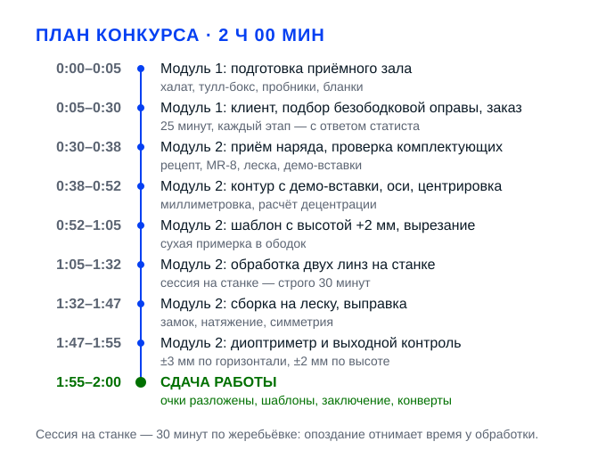
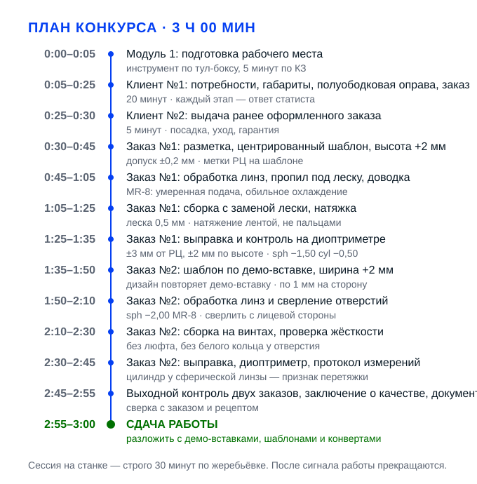
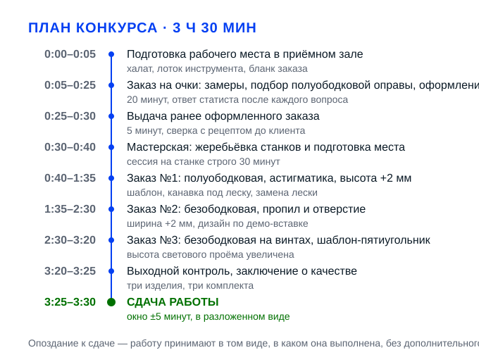

Медицинская оптика (Р)
Задания ниже — официальные файлы «Абилимпикс» (источник: abilympics-russia.ru), разложенные по категориям. Решения написаны по тексту задания, регламенту и критериям оценки; в них указано, что именно проверяет эксперт.
Школьник
14–16 лет, базовый уровень заданияВыдержка из официального конкурсного задания: страницы, относящиеся к категории «Школьник» (стр. 5–6 источника).
Пошаговое решение
Задание для школьников состоит из двух модулей и идёт два часа: тридцать минут в приёмном зале магазина оптики, где нужно подготовить место, выяснить потребности клиента, определить габаритные параметры и подобрать безободковую оправу с оформлением заказа, и девяносто минут в мастерской, где по рецепту изготавливаются одни очки в полуободковую оправу с центрированным шаблоном, увеличенной на два миллиметра высотой проёма, сборкой на леске, выправкой и контролем оптического центра на диоптриметре. Баллы распределены неравномерно: зал даёт 35 из 100, мастерская — 65, так что минута в мастерской дороже. Два правила: в первом модуле любой этап выяснения требует ответа статиста, иначе аспект не засчитан, а сессия на станке идёт тридцать минут и очередь к нему определяет жеребьёвка. Сдаются очки в разложенном виде с демо-вставками, шаблонами, заключением о качестве и конвертами для линз.

Задача 1. Подготовить приёмный зал и рабочее местоМодуль 1 · до 35 баллов
Первые пять минут модуля 1 отданы подготовке, и это не разминка перед главным, а отдельный результат, который прописан в задании прямым текстом: подготовить рабочее место, выложить инструмент и материалы. Приёмный зал весит 35 баллов из 100, и часть этих баллов набирается до того, как в зал войдёт клиент. Здесь важно всё сразу: опрятный вид, разложенный тулл-бокс, чистые пробники и бланки. Если сэкономить эти пять минут и начать сразу с клиента, дальше вы будете искать штангенциркуль под салфетками, а статист уже начнёт отсчёт своих двадцати пяти минут, которые вернуть нельзя.
Действие 1.1. Войти в зал по правилам
Шаг 1.1.1
Надеваем халат или медицинский блузон, застёгиваем его на все пуговицы и поправляем воротник так, чтобы он лежал ровно. Длинные волосы убираем под резинку или заколку, часы, браслеты и кольца снимаем: металл царапает покрытие линз и ободки оправ, а на витрине под лампой такая царапина видна сразу. Ногти держим коротко и без покрытия, руки моем с мылом до запястий, потому что в приёмном зале вы будете брать оправы, подавать их клиенту и работать штангенциркулем.
Халат или блузон прямо назван в разделе 3.1 конкурсного задания как спецодежда, которую участник привозит с собой, и его наличие проверяют до старта. Внешний вид входит в оценку модуля 1, а модуль весит 35 баллов из 100: приёмный зал оптики — медицинская среда, где клиенту важно, как выглядит специалист. Снятые украшения не формальность: кольцо оставляет микроцарапины на демо-вставках и линзах пробников, а за испорченный товар баллы вычитают.
Проверьте себя у зеркала: халат застёгнут на все пуговицы, воротник лежит, рукава не свисают на ладони, волосы убраны полностью и спереди, и на затылке. На руках нет часов, колец и браслетов, ногти короткие. Ладони сухие и чистые, потому что влажными пальцами вы оставите отпечатки на линзах и на стекле витрины.
Самая частая ошибка — надеть халат поверх футболки с длинным рукавом: рукав выбивается из-под манжеты и цепляется за оправу на витрине. Вторая — оставить обручальное кольцо, считая, что оно не мешает: на безободковой оправе, где линза держится на винтах и втулках, любая царапина на просвет видна эксперту.
Эксперт осматривает участника до старта модуля 1 и отмечает в оценочном листе наличие и опрятность спецодежды, а потом следит за руками уже в работе — при примерке оправ и при обращении с измерительным инструментом.
Шаг 1.1.2
Обходим зал и проверяем, что можно трогать и чем пользоваться: кресло клиента стоит напротив зеркала, зеркало висит так, что сидящий видит себя в полный рост лица, на столе лежит бланк заказа и ручка, а на витрине выставлены безободковые модели в количестве не меньше трёх. Свет в приёмном зале направляем так, чтобы он падал на лицо клиента спереди, а не сзади: тогда видно посадку оправы и цвет линз, которые вы показываете.
Порядок в зале — часть подготовки рабочего места, а подготовка прописана в структуре задания как отдельный результат модуля на 30 минут, из которых 5 отведены именно на неё. Проверка заранее экономит время клиента: если в разгар примерки выяснится, что кресло стоит слишком далеко от зеркала, вы будете переставлять мебель вместо работы с человеком.
Кресло напротив зеркала, зеркало чистое и не завалено коробками, на столе есть бланк, ручка и линейка, на витрине не меньше трёх безободковых оправ с целыми демо-вставками. Свет падает на лицо клиента, а не в зеркало сзади: убедитесь, что в отражении нет блика от лампы.
Ошибка — начать приём, не посмотрев на витрину, и обнаружить, что безободковых моделей всего одна и она с треснувшей демо-вставкой. Вторая — работать в зале, где зеркало загорожено стеллажом: клиент не увидит посадку, а вы не сможете показать разницу между моделями, и баллы за подбор уйдут.
Эксперт проходит по залу в первые минуты модуля и смотрит, готова ли зона к приёму: стол, зеркало, наличие моделей. Дальше он оценивает уже сам процесс обслуживания.
Действие 1.2. Выложить и проверить инструмент
Шаг 1.2.1
Раскладываем инструмент из тулл-бокса по зонам, а не кучей: справа на столе — измерительное (штангенциркуль, линейка, карандаш, ластик, миллиметровка), слева — монтажное (набор отвёрток, пинцет для винтов с замком, крючок для снятия лески, набор развёрток, напильники), в центре — маркер для стекла и салфетки из микрофибры. Ножницы кладём к миллиметровке, потому что резать шаблон вы будете именно там, и не придётся тянуться через весь стол.
Перечень инструмента зафиксирован в разделе 3.2 задания, и пользоваться можно только тем, что входит в тулл-бокс: несогласованные расходные материалы и оборудование запрещены. Разложенный по зонам инструмент — это ещё и скорость: в модуле 2 на всё отведено 90 минут, а внутри него сессия на станке ограничена 30 минутами, и каждая минута поиска отвёртки вычитается из обработки линзы.
Пройдите по перечню и отметьте каждую позицию: ножницы, карандаш с линейкой и ластиком, штангенциркуль, миллиметровка, напильники, развёртки, крючок для лески, отвёртки, пинцет для винтов, торцевые ключи, маркер для стекла, лента для натяжки лески, ремкомплект лески наружной и внутренней. Чего-то нет — говорите эксперту сразу, до старта.
Типичная ошибка — оставить инструмент в футляре «чтобы не потерялся»: в работе вы каждый раз будете открывать и закрывать молнию, а на столе появится каша из салфеток и обрезков. Вторая — не заметить, что в тулл-боксе нет ремкомплекта лески: без него полуободковую оправу после примерки не собрать.
Эксперт видит порядок на столе в первые же минуты и отмечает, выложен ли инструмент до прихода клиента: это пункт подготовки рабочего места. Ещё он смотрит, возвращается ли инструмент на место после каждой операции.
Шаг 1.2.2
Проверяем инструмент на исправность. Штангенциркуль сдвигаем губки до упора и смотрим на ноль: стрелка или шкала должны стоять ровно на нулевой отметке. Отвёртки проверяем на пробном винте: жало не должно прокручиваться в шлице и не должно быть слизанным. Напильники и развёртки осматриваем на предмет забитой стружки, ножницы пробуем на обрезке бумаги — они должны резать кончиком, а не рвать.
Неисправный инструмент портит детали, а не только время. Слизанное жало отвёртки срывает головку винта в безободковой оправе, и вытащить такой винт без повреждения втулки почти невозможно. Тупые ножницы дают рваный край шаблона, а по рваному краю линза садится с зазором, и тогда изделие не проходит контроль по ГОСТ.
Штангенциркуль на нуле, отвёртки держат винт без проскальзывания, ножницы режут бумагу чисто по всей длине лезвия, напильники чистые. Проверьте ещё лупу или крючок для лески: на нём не должно быть заусенцев, иначе он порежет леску при затяжке.
Ошибка — взять отвёртку «какая есть» и сорвать шлиц на винте крепления линзы: деталь придётся менять, а времени на это в модуле нет. Вторая — резать шаблон тупыми ножницами: кромка получается волнистой, линза после обработки не садится в ободок, и работу приходится начинать заново.
Эксперт обращает внимание на то, как участник обращается с крепежом: сорванный шлиц и смятая втулка видны при осмотре готового изделия и снижают оценку за качество сборки.
Шаг 1.2.3
Готовим документацию: бланк заказа на очки, чистый рецепт или его копию, ручку с чёрной пастой, калькулятор и каталог линз. Бланк кладём так, чтобы его было удобно заполнять стоя и чтобы клиент видел, что вы записываете: это часть доверия. Рядом оставляем место под подпись клиента и под свою. В бланк заранее вписываем номер заказа и дату: две графы забываются чаще всего, а без них заказ в мастерской не примут.
Оформление документации — отдельное умение в требованиях к квалификации школьников, и оно оценивается в модуле 1 наравне с подбором оправы. Ошибка в бланке стоит дороже, чем кажется: неверно записанное межзрачковое расстояние или перепутанные OD с OS приводят к тому, что по этому заказу изготовят неправильные очки, а в конкурсе это ещё и потерянные баллы за оформление.
Бланк лежит на столе лицом вверх, все графы видны и не заняты другими бумагами, ручка пишет без пропусков, рецепт под рукой. Проверьте, что в бланке есть графы для OD и OS отдельно, для sph, cyl, ax и PD — именно по ним вы будете диктовать значения клиенту.
Частая ошибка — заполнять бланк после подбора, по памяти: детали рецепта выветриваются, и в графе ax появляется значение, которого в рецепте не было. Вторая — писать простым карандашом, чтобы «поправить потом»: заказ считается оформленным только тогда, когда он заполнен ручкой и подписан.
Эксперт берёт бланк после обслуживания и сверяет его с рецептом графа за графой: значения, подписи, номер и дату. Отсутствие номера и даты для него признак того, что документ заполнялся по памяти, а не по процедуре, и это отражается в листе отдельной строкой.
Действие 1.3. Подготовить пробники и приёмную зону
Шаг 1.3.1
Протираем салфеткой из микрофибры демо-вставки и стёкла пробников, проверяем, что на витрине лежат безободковые модели разных форм — прямоугольная, круглая или овальная, мягкая бесформенная. Каждую оправу берём за ободок или за заушник, а не за линзу: пальцы на просвет оставляют радужные пятна, которые потом приходится отмывать спиртом. Каждую модель ставим так, чтобы клиент видел её целиком, а не сбоку.
Безободковая оправа — то, что участник категории «Школьники» обязан подобрать по заданию, поэтому именно эти модели должны быть готовы к показу. Чистая витрина — часть подготовки рабочего места, а пятна на демо-вставках читаются экспертом как небрежность: клиенту показывают товар в том виде, в каком его можно продать.
Демо-вставки прозрачные, без отпечатков и разводов, ободки и мостики не погнуты, винты на месте. Посмотрите на оправу против света: на вставке не должно быть видно ни одного пятна, а на металле — ни одной потёртости.
Ошибка — брать оправу за линзу и ставить её обратно на витрину с отпечатком: клиент видит товар с изъяном, а эксперт фиксирует неаккуратное обращение. Вторая — выставить только одну модель, объясняя это тем, что выбор всё равно делает клиент: подбор без альтернативы не считается подбором.
Эксперт следит за обращением с товаром весь модуль: как оправа снимается с витрины, как подаётся клиенту и как возвращается на место. Пятна и потёртости на демо-вставках он вносит в лист отдельной строкой, даже если подбор закончился удачно.
Шаг 1.3.2
Проверяем комплектность каждой безободковой оправы: винты крепления линз затянуты, втулки на месте, носоупоры сидят на штырьках и не болтаются, заушники не погнуты, на концах есть наконечники. Отдельно смотрим на демо-вставки: они должны быть без сколов, потому что именно по ним клиент оценивает, как будет выглядеть готовая линза. Оправы берём по одной, чтобы не смешать детали от разных моделей.
Комплектность — это будущая сборка. В безободковой оправе линза держится винтами через отверстия у нозальной и темпоральной части, и если втулка потеряна или винт недокручен, при примерке конструкция разваливается прямо в руках клиента. Потерянные детали в тулл-боксе не восполняются, а за неисправное изделие, показанное клиенту, баллы снимают.
Винты затянуты и не выступают с обратной стороны, втулки не провернуты, носоупоры сидят плотно, заушники симметричны, демо-вставки целые. Проверьте каждую оправу лёгким покачиванием за линзу: люфта быть не должно.
Ошибка — выставить оправу с выпавшей втулкой и заметить это только тогда, когда клиент возьмёт её в руки. Вторая — не проверить носоупоры: при примерке они проворачиваются, и оправа «съезжает» на переносице, а вы будете объяснять клиенту, что так и должно быть.
Эксперт может вместе с участником осмотреть оправу перед показом клиенту и отмечает, проверена ли комплектность до примерки или обнаружена в процессе.
Шаг 1.3.3
Приводим в порядок саму приёмную зону: зеркало протираем насухо, стол освобождаем от коробок и упаковки, стул для клиента отодвигаем так, чтобы человек мог сесть не задевая стол, а свой стул ставим сбоку — так вы оказываетесь на расстоянии вытянутой руки и не нависаете над клиентом. Мусор от упаковки сразу убираем в контейнер, а не оставляем под столом.
Подготовка рабочего места — это ещё и организация пространства, за которую дают часть из 35 баллов модуля 1. Клиент садится на расстоянии примерно полуметра от зеркала, и вы должны видеть его лицо анфас и в профиль, иначе не определить посадку оправы по переносице и вискам. Убранный мусор — требование и культуры обслуживания, и безопасности: обрезки и плёнка на полу опасны.
Стол свободен, зеркало чистое и сухое, стул клиента стоит так, что при посадке человек не задевает коленями стол, ваш стул сбоку. Пол под столом сухой и без мусора. Проверьте, что до витрины можно дотянуться, не вставая.
Ошибка — начать приём, когда на столе лежат коробки от оправ: показывать модели негде, и вы будете пристраивать их на коленях. Вторая — оставить стул клиента слишком далеко от зеркала: человек будет наклоняться вперёд, и посадка оправы на таком расстоянии оценивается неверно.
Эксперт оценивает рабочее место в целом в начале модуля и отдельно смотрит, удобно ли организовано взаимодействие с клиентом: расстояние, посадка, доступ к витрине.
Задача 2. Обслужить клиента в приёмном зале и оформить заказМодуль 1 · до 35 баллов
На работу с клиентом отведено 25 минут, и статист ведёт себя как настоящий покупатель: у него рецепт на сферические линзы, и ему нужно подобрать безободковую оправу. Задание выполняется строго последовательно, и там сказано, что любой этап выяснения предполагает ответ статиста: если ответа не последовало, аспект считается невыполненным. Нельзя молча измерить, молча надеть оправу и молча написать бланк — каждый шаг нужно проговорить и получить реакцию. Баллы здесь дают не за красивую оправу, а за алгоритм: контакт, выяснение потребностей, габаритные параметры, подбор, документация, выдача.
Действие 2.1. Установить контакт и выяснить потребности
Шаг 2.1.1
Встречаем клиента у входа в зону, здороваемся, называем себя и предлагаем сесть: «Здравствуйте, меня зовут…, я оптик-консультант, присаживайтесь, пожалуйста». Говорим негромко и смотрим в лицо, а не в бланк, потому что первый контакт задаёт тон всему разговору. После приглашения делаем паузу и ждём, пока человек сядет и устроится, и только потом начинаем разговор о задаче.
Приветствие и представление — первый этап алгоритма, и по правилу задания каждый этап должен получить ответ статиста: если вы просто указали на стул и отошли, аспект не засчитывается. Статист отвечает как покупатель, и от того, как вы начнёте, зависит, будет ли он отвечать развёрнуто на вопросы о зрении и привычках. В модуле 1 эти этапы стоят части из 35 баллов.
Клиент сел, ответил на приветствие, смотрит на вас, а не в телефон. Вы находитесь на расстоянии вытянутой руки, не нависаете. Проверьте, что разговор слышно без напряжения: если приходится повышать голос, шум в зале будет мешать статисту отвечать.
Ошибка — начать с фразы «что вам нужно» или сразу с рецепта: клиент закрывается и отвечает односложно, а на уточняющие вопросы уже не реагирует. Вторая — говорить в бланк, не поднимая глаз: статист не даёт ответа, и весь блок выяснения потребностей остаётся неоценённым.
Эксперт слушает первые полминуты разговора: прозвучали ли приветствие, представление и приглашение сесть. Если участник сразу переходит к рецепту, этап фиксируется как невыполненный, даже когда дальше всё идёт гладко.
Шаг 2.1.2
Берём рецепт и читаем его вместе с клиентом, вслух проговаривая значения: для правого глаза (OD) и левого (OS) отдельно сферу, цилиндр и ось, затем межзрачковое расстояние. Спрашиваем, для чего нужны очки — для дали, для работы за компьютером или постоянно, — и уточняем, есть ли жалобы на существующие очки: давит на переносицу, сползают, мешают виски.
Рецепт — основа всего заказа, и его нельзя толковать по памяти. У школьников в задании клиент приходит с рецептом на сферические линзы, но в разделе 2.3 приведены параметры заказа sph −1.50 и cyl −0.50 с осью, выбираемой жеребьёвкой от 0 до 180 градусов, поэтому читать нужно именно тот бланк, что лежит перед вами. Жалобы на привычные очки дают вам аргументы при подборе: они прямо превращаются в критерии выбора оправы.
Вы проговорили вслух все значения рецепта и получили от клиента подтверждение, что они совпадают с тем, что ему выписал врач. Клиент назвал цель ношения и хотя бы одну жалобу или привычку. Если рецепт нечитаем в какой-то графе, вы это заметили и уточнили, а не домыслили.
Ошибка — взять рецепт и молча кивнуть, не сверив значения: потом в бланк попадает цифра из соседней строки. Вторая — не спросить про жалобы и подобрать оправу, которая повторяет недостатки старых очков, например слишком узкую для широкого лица.
Эксперт сверяет услышанное с рецептом статиста: названы ли значения для каждого глаза и спрошено ли, что человек видит хуже. Без этого блок не засчитывают — подбор, начатый без понимания задачи, считается случайным.
Шаг 2.1.3
Выясняем условия, в которых очки будут носиться: работа за компьютером, вождение, чтение, спорт, сколько часов в день. Спрашиваем про материал оправы и аллергию на металл, про то, носил ли клиент раньше безободковые очки, и про бюджет. Каждый вопрос задаём по одному и дожидаемся ответа, а не выпаливаем список целиком. Ответы сразу отмечаем на бланке короткими словами, чтобы потом не переспрашивать.
Эти сведения определяют, какую именно безободковую оправу предложить: при постоянном ношении важна масса и посадка, при работе за компьютером — размер светового проёма, чтобы в поле зрения попадал монитор. Разговор по одному вопросу нужен потому, что статист отвечает на конкретный вопрос: список из пяти пунктов он воспримет как шум и ответит только на последний, и четыре аспекта останутся невыполненными.
У вас есть ответы минимум по четырём пунктам: режим ношения, вид деятельности, материал и аллергия, предыдущий опыт с безободковыми оправами. Бюджет назван или клиент отказался его обсуждать, и это тоже ответ.
Ошибка — задать все вопросы одним залпом и получить один ответ: эксперт фиксирует, что аспекты выяснения не отработаны. Вторая — пропустить вопрос про аллергию и предложить оправу с металлическим носоупором клиенту, у которого на металл реакция.
Эксперт оценивает не количество вопросов, а их порядок: сначала режим ношения, потом материал и аллергия, только потом бюджет. Бюджет в конце разговора звучит естественно, а в начале — как торг, и это он тоже отмечает.
Действие 2.2. Определить габаритные параметры
Шаг 2.2.1
Измеряем ширину лица штангенциркулем: губки ставим на наиболее широкую часть головы на уровне висков, слегка касаясь кожи, без нажима, и считываем значение в миллиметрах. Второй промер делаем по ширине переносицы, чтобы понять, какой мостик подойдёт. Результаты сразу называем вслух и записываем на бланке, чтобы клиент слышал, с чем вы работаете. Замер повторяем дважды и берём среднее, если значения разошлись.
Габаритные параметры — обязательный пункт задания для школьников, они записаны в результате модуля прямым текстом. Ширина лица определяет, какая оправа сядет правильно: слишком узкая будет давить на виски и сползать, слишком широкая — съезжать на нос. Штангенциркуль входит в тулл-бокс именно для этого, и замер «на глаз» не принимается.
Значения записаны в миллиметрах с точностью до одного миллиметра, повторный замер даёт тот же результат. Губки не оставили следа на коже, клиент не отстранялся. Проверьте, что вы измеряли именно виски, а не скулы: разница может достигать десяти миллиметров.
Ошибка — затянуть губки штангенциркуля так, что клиент отстраняется: замер получается заниженным, и оправа оказывается узкой. Вторая — не записать результат сразу: к моменту подбора вы помните «примерно сто сорок», а нужно точное число.
Эксперт видит, пользуется ли участник штангенциркулем и фиксирует ли результаты: это измеримый аспект модуля. Если участник мерит «на глаз», а штангенциркуль остаётся на столе, аспект не засчитывается.
Шаг 2.2.2
Определяем межзрачковое расстояние и высоту установки. Межзрачковое берём из рецепта, а если его там нет — измеряем линейкой от центра зрачка правого глаза до центра левого, глядя клиенту в глаза и держа линейку на уровне переносицы. Высоту установки прикидываем по посадке: центр зрачка должен оказаться чуть выше середины светового проёма, примерно на две трети его высоты.
Межзрачковое расстояние и высота установки — те два числа, по которым потом центрируют линзы, и ошибка в них означает, что человек будет смотреть мимо оптического центра. В модуле 2 эти же параметры проверяют на диоптриметре с допуском плюс-минус 3 мм от реперного центра оправы и плюс-минус 2 мм по высоте, так что начинать нужно с точного замера уже здесь.
Межзрачковое расстояние записано одним числом для дали, если клиент носит очки постоянно, или двумя для близи, если рецепт очков для чтения. Высота установки отмечена на эскизе посадки. Сверьте значение с рецептом: расхождение больше двух миллиметров — повод перемерить.
Ошибка — измерить расстояние между внутренними или наружными краями зрачков вместо центров: разница достигает пяти миллиметров, и линзы встанут с перекосом. Вторая — взять высоту установки из головы, не глядя на посадку оправы на конкретном лице.
Эксперт проверяет, откуда взято межзрачковое расстояние — из рецепта или из собственного замера, — и попало ли оно в бланк. Отдельно он отмечает, показал ли участник клиенту, куда придётся центр линзы.
Шаг 2.2.3
Переводим замеры в требования к оправе: считаем полную ширину как две ширины линзы плюс ширина моста и сравниваем с измеренной шириной лица. Допустимое расхождение — не больше двух-трёх миллиметров в сторону меньшей ширины, чтобы оправа держалась за счёт упругости заушников. Для безободковой конструкции отдельно проверяем, что световой проём по размеру совпадает с диаметром линзы из рецепта.
Расчёт по формуле — это то, что отличает подбор от «померил и понравилось». Безободковая оправа не имеет ободка, который прощает ошибку: если световой проём больше линзы, линза не закроет его, а если меньше — её придётся стачивать, и тогда край становится тонким и хрупким. Плюс-минус три миллиметра децентрации, о которых говорит задание, — это как раз тот запас, который даёт правильно подобранный проём.
У вас есть расчётная ширина оправы и понимание, какие модели из витрины в неё попадают. Проверьте себя: приложите линейку к оправе и сравните с расчётом — расхождение не должно превышать трёх миллиметров.
Ошибка — подбирать оправу только по внешнему виду, без расчёта: клиенту нравится модель, но она на восемь миллиметров шире лица, и заушники давят на виски. Вторая — не сверить диаметр линзы со световым проёмом: готовая линза окажется меньше проёма, и работа пойдёт в брак.
Эксперт ждёт, что расчёт прозвучит числами, а не словами «примерно подходит». Если участник прикладывает линейку к оправе и сравнивает результат с шириной лица, аспект закрыт; если только любуется моделью — нет.
Действие 2.3. Подобрать безободковую оправу
Шаг 2.3.1
Отбираем на витрине две-три безободковые модели, подходящие по расчётной ширине, и выкладываем их перед клиентом на салфетку в ряд. По каждой коротко говорим одно преимущество и одно ограничение: масса и обзор шире, чем в ободковой оправе, но конструкция менее прочная и требует аккуратного обращения. Так клиент выбирает осознанно, а не по принципу «эта блестит».
Подбор безободковой оправы — прямое требование задания для школьников, и оценивается он вместе с качеством объяснения. Ограничения конструкции проговаривать обязательно: в безободковой оправе линза крепится винтами или втулками, и при высоких рефракциях край линзы получается толстым, что влияет и на прочность, и на внешний вид.
Перед клиентом лежат минимум две модели в расчётной ширине, по каждой сказано преимущество и ограничение. Клиент задал хотя бы один вопрос — это признак того, что объяснение дошло. Если вопросов нет совсем, задайте его сами — так видно, что клиент включился.
Ошибка — выложить пять моделей без комментариев: клиент теряется, и выбор затягивается, а время клиента ограничено 25 минутами. Вторая — расхваливать безободковую оправу как самую прочную: если человек заденет её, претензия будет адресована вам.
Эксперт прислушивается к формулировкам: честно ли назван минус безободковой конструкции. Обещание «не сломается» он помечает как ошибку консультации, потому что оно противоречит свойствам крепления на винтах.
Шаг 2.3.2
Надеваем выбранную оправу клиенту, поправляем заушники за ушами и смотрим посадку по четырём точкам: мост лежит на переносице без зазора и без вдавливания, заушники идут над ушами и не сдавливают виски, нижний край линзы не касается щеки при улыбке, центр зрачка попадает в верхнюю треть светового проёма. Клиента просим посмотреть в зеркало и наклонить голову.
Посадка — это то, что клиент почувствует в первый же день, и то, что эксперт проверяет визуально. Если мост давит, на переносице останется след, и очки будут сползать; если заушники сжимают виски, появится головная боль. Проверка по четырём точкам занимает меньше минуты, а заменяет полчаса объяснений.
Все четыре точки проверены и названы вслух, клиент подтвердил, что не давит и не сползает. Зазор между мостом и переносицей не больше миллиметра, при наклоне головы вперёд оправа не съезжает на кончик носа.
Ошибка — надеть оправу и сразу спросить «ну как?»: клиент из вежливости скажет «нормально», а через минуту очки съедут. Вторая — не проверить заушники за ушами: они оказываются слишком короткими, и оправа держится только за счёт давления на виски.
Эксперт смотрит примерку целиком: поправил ли участник заушники руками, попросил ли наклонить голову, дождался ли ответа клиента. Ему важен порядок действий, а не то, что оправа в итоге понравилась.
Шаг 2.3.3
Осматриваем конструкцию крепления выбранной модели: у нозальной и темпоральной части должны быть пропил или отверстие под винт, втулки на месте, винты затянуты без перекоса. Объясняем клиенту, что линза в такой оправе держится на этих точках, поэтому очки нельзя ронять и снимать одной рукой. Проверяем, что при рефракции из рецепта толщина края линзы позволит закрепить её в этой оправе.
Крепление — самое уязвимое место безободковой оправы, и именно по нему эксперт отличает осознанный подбор от случайного. Толщина края линзы зависит от рефракции: при минусовых значениях край толще, и тонкий пропил в нём держит хуже. Это тот случай, когда консультация прямо влияет на то, прослужит ли изделие год.
Пропил или отверстия целые, втулки не провернуты, винты затянуты, при покачивании линзы люфта нет. Клиент может повторить своими словами, что очки снимают двумя руками. Проверьте ещё, что винт не выступает с внутренней стороны и не коснётся кожи у виска.
Ошибка — не посмотреть на крепление и выдать оправу с треснувшей втулкой: при сборке она развалится. Вторая — подобрать безободковую модель клиенту с высокой рефракцией и не предупредить, что край линзы будет толстым и заметным.
Эксперт смотрит, осматривается ли крепление до показа оправы клиенту, и ждёт, что правила носки прозвучат вслух. Молчаливый осмотр он засчитывает, а отсутствие предупреждения о съёме двумя руками — нет.
Действие 2.4. Оформить заказ на очки
Шаг 2.4.1
Заполняем бланк заказа ручкой, графа за графой: фамилия и контакт клиента, дата, значения рефракции для OD и OS по отдельности, межзрачковое расстояние, модель и размер оправы, тип линзы и материал, покрытие, стоимость и срок изготовления. Каждое записанное значение проговариваем вслух и просим клиента подтвердить, особенно ось и межзрачковое расстояние.
Документация — отдельный критерий модуля 1, и она же единственный документ, по которому в мастерской изготовят очки. Если в бланке перепутаны OD и OS или потеряна ось, ошибка уйдёт в производство, и изделие придётся переделывать целиком. Проговаривание вслух защищает от механических описок: слух ловит то, что глаз пропускает.
Все графы заполнены, почерк читаемый, единицы измерения указаны, значения совпадают с рецептом один в один. Клиент подтвердил каждое значение. В бланке нет пустых мест и прочерков без объяснения. Сверьте дату и номер заказа: они чаще всего остаются незаполненными.
Ошибка — заполнить бланк «потом, по памяти»: детали рецепта забываются, и в графе оси появляется значение с соседней строки. Вторая — писать карандашом, чтобы исправить: заказ считается оформленным только тогда, когда он заполнен ручкой и подписан.
Эксперт сверяет бланк с рецептом после обслуживания: совпадение значений и полнота заполнения — измеримая часть оценки. Отдельно он смотрит, заполнялся ли бланк при клиенте, а не после его ухода.
Шаг 2.4.2
Проверяем бланк по чек-листу, который держим в голове: рефракция для каждого глаза, ось, межзрачковое расстояние, модель оправы с размером, тип и материал линзы, покрытие, дата, цена, подпись клиента и своя. Отдельно сверяем, что в заказе стоит та оправа, которую клиент выбрал и примерил, а не соседняя с витрины. Затем читаем заполненное вслух клиенту.
Заказ на очки — медицинский документ, и по нему изготавливают средство коррекции зрения, поэтому проверка обязательна. Чтение вслух — это ещё и способ получить от статиста ответ, без которого, по правилу задания, этап считается невыполненным. Плюс вы ловите собственную ошибку до того, как она станет браком.
Клиент подтвердил чтение вслух, кивнул или сказал «да» на каждую позицию. В бланке нет исправлений, зачёркиваний и дописок на полях. Стоимость и срок названы и записаны. Проверьте, что подпись клиента стоит в отведённой графе, а не на обороте.
Ошибка — прочитать бланк скороговоркой, не давая клиенту вставить слово: ответа нет, этап не зачтён, а ошибка остаётся. Вторая — исправлять значение зачёркиванием без подписи: такой документ считается недействительным.
Эксперт присутствует при чтении бланка и фиксирует, была ли реакция клиента и совпадает ли заказ с показанной оправой. Он отмечает, дал ли участник клиенту возможность остановить чтение и задать вопрос.
Шаг 2.4.3
Объясняем, что будет дальше: срок изготовления, порядок получения, гарантия и правила ухода — протирать микрофиброй, снимать двумя руками, не оставлять линзами вниз. Называем итоговую стоимость и способ оплаты, если это входит в легенду. Заканчиваем фразой благодарности и предлагаем обратиться, если появятся вопросы. Проговариваем срок конкретной датой, а не словами «через неделю».
Завершение обслуживания — часть алгоритма продаж, и оно оценивается: клиент должен уйти с пониманием сроков и правил. Для безободковой оправы инструкция по уходу особенно важна, потому что конструкция не прощает падений, и человек, который снимает очки одной рукой, рано или поздно выломает винт из линзы.
Клиент может повторить срок и хотя бы одно правило ухода. Стоимость названа вслух, бланк передан клиенту или подшит по правилам площадки. Клиент попрощался и ушёл с бланком или с подтверждением заказа.
Ошибка — закончить на «всё, до свидания», не назвав срок: клиент уходит и возвращается с вопросом, а время модуля уже идёт. Вторая — не сказать про правила носки, и через неделю оправа приходит в ремонт с вырванной втулкой.
Эксперт слушает финальные полминуты разговора: срок, гарантия, уход и прощание. Правила ухода должны прозвучать при клиенте, а не остаться строкой на обороте бланка.
Действие 2.5. Выдать заказ статисту
Шаг 2.5.1
Перед выдачей проверяем готовое изделие: рефракцию на диоптриметре, чистоту линз, затяжку винтов, целость лески или крепления, симметрию заушников. Сверяем с нарядом: та ли оправа, те ли линзы, то ли покрытие. Протираем линзы микрофиброй и только после этого выносим очки клиенту в футляре или на подносе. Сверку ведём по наряду, положив его рядом с изделием, а не по памяти.
Выдача заказа — отдельный этап обслуживания в торговом зале, и по тексту задания он входит в работу с клиентом наравне с оформлением. Выдавать изделие с непроверенной рефракцией нельзя: если линза стоит не по рецепту, претензия возникнет в ту же минуту, и переделка съест время модуля 2. Сверка с нарядом — единственный способ поймать чужой заказ.
Изделие соответствует наряду по всем позициям, линзы чистые, крепление затянуто, носоупоры на месте. Вы можете назвать вслух значения рефракции и сравнить их с записью. Очки лежат в футляре или на подносе, а не в руке на весу.
Ошибка — выдать заказ, не сверив с нарядом: клиент получает чужие очки, и разбирательство занимает всё оставшееся время. Вторая — выдать очки с отпечатками пальцев: первое впечатление испорчено, а претензия предъявлена сразу.
Эксперт смотрит на процедуру сверки: лежит ли наряд рядом с изделием и называются ли параметры вслух. Выдача без сверки для него равна выдаче чужого заказа, даже если очки случайно совпали.
Шаг 2.5.2
Надеваем очки клиенту, проверяем посадку на лице, просим посмотреть вдаль и вблизи, оценить, нет ли искажений и давления. Показываем, как снимать и надевать двумя руками, как протирать, где хранить. Отдаём футляр и салфетку, желаем хорошего дня и прощаемся. Если заушники давят, подгибаем их на месте, а не отправляем клиента «привыкать»: посадка правится за полминуты.
Примерка при выдаче закрывает цикл обслуживания: если очки давят или сползают, это исправляется сразу, подгибом заушников, а не повторным визитом. Правила носки, показанные руками, запоминаются лучше, чем сказанные словами, а для безободковой оправы это критично: она держится на винтах, и одно резкое движение ломает крепление.
Клиент надел очки, посмотрел вдаль и вблизи, подтвердил, что видно чётко и не давит. Он может показать, как снимет очки двумя руками, а через минуту носки не жалуется на давление за ушами — это ощущение проявляется не сразу.
Ошибка — отдать очки в руки и отпустить клиента, не примерив: посадка после сборки могла измениться, и человек уходит с давящими заушниками. Вторая — не показать правила носки: очки снимают одной рукой, крепление расшатывается, и изделие приходит в негодность.
Эксперт наблюдает, проверяется ли посадка на лице после сборки: заушники, мост, наклон. Если участник просто передаёт футляр, этап примерки при выдаче он фиксирует как пропущенный.
Задача 3. Принять заказ, разметить и изготовить центрированный шаблонМодуль 2 · до 65 баллов
Модуль 2 идёт 90 минут и весит 65 баллов из 100, поэтому каждая операция считается на минуты: сессия на станке ограничена тридцатью минутами. Изготовление начинается не у станка, а за столом: принять заказ, проверить комплектующие, снять размеры с демо-вставки и сделать центрированный шаблон вручную. Шаблон — половина результата: по нему стачивается линза, и ошибка в контуре или в положении оптического центра не исправляется выправкой. Задание требует полуободковую оправу с увеличением высоты ободка на два миллиметра, поэтому шаблон придётся не просто обвести, а перестроить.
Действие 3.1. Принять наряд и проверить комплектующие
Шаг 3.1.1
Кладём перед собой наряд и рецепт, читаем параметры по строкам: для правого и левого глаза отдельно сферу, цилиндр и ось, затем межзрачковое расстояние, материал линзы и её диаметр. В задании для школьников указан материал MR-8, а в разделе 2.3 приведены значения сферы минус 1.50 и цилиндра минус 0.50, при этом ось выбирается жеребьёвкой от 0 до 180 градусов в день соревнований, поэтому читать нужно тот бланк, который лежит на столе. Значения переписываем на рабочий лист крупно, чтобы они были перед глазами.
Приём наряда — точка, где ошибка ещё стоит дёшево. Если перепутать OD и OS или взять не ту ось, линза будет обработана правильно по форме, но не по оптике, и на диоптриметре это вылезет сразу. Время на переделку в модуле из 90 минут отсутствует, поэтому сверка идёт до первой операции со стеклом.
Все значения наряда переписаны на рабочий лист и сверены с рецептом посимвольно, включая знаки и ось. Материал и диаметр линзы отмечены отдельно. Вы можете назвать вслух, какая линза предназначена правому глазу, а какая левому.
Ошибка — взять линзы из лотка «по памяти» и поменять глаза местами: астигматическая линза с осью встанет под неправильным углом, и изделие не пройдёт контроль. Вторая — не записать диаметр: линза меньшего диаметра не закроет световой проём после увеличения высоты.
Эксперт подходит к столу в начале модуля и смотрит, сверяется ли участник с нарядом. Рабочий лист с параметрами для него признак того, что работа пойдёт по документу, а не по памяти.
Шаг 3.1.2
Осматриваем полуободковую оправу: ободок сверху, паз под леску по нижнему или верхнему контуру, замок лески, носоупоры, заушники, шарниры. Проверяем леску на ощупь и на просвет: она не должна быть перетёрта, растянута или иметь узлов. Демо-вставки вынимаем аккуратно, только за ободок, и кладём в лоток: они понадобятся и для шаблона, и для сдачи работы, а отпечатки на прозрачном пластике потом придётся отмывать перед сдачей.
Полуободковая оправа держит линзу леской, и состояние лески определяет, соберётся изделие или нет. Перетёртая леска рвётся при натяжке, а в ремкомплекте её может не оказаться нужного профиля. Демо-вставки, по которым снимается контур, при сдаче нужно предъявить вместе с шаблонами и заключением, поэтому их нельзя выбрасывать.
Леска целая по всей длине, замок закрывается и держит, носоупоры сидят плотно и не проворачиваются. Демо-вставки целые и лежат в лотке, а не на столе среди инструмента. В пазу нет остатков старой лески и клея: их видно как тёмную полосу на просвет.
Ошибка — начать работу, не проверив леску, и порвать её при натяжке: сборка останавливается, а замена занимает время, которого нет. Вторая — потерять демо-вставку: на сдаче нечего предъявить, и часть баллов за комплектность теряется.
Эксперт осматривает оправу при приёмке работы и на сдаче: состояние лески и сохранность демо-вставок входят в оценку. На сдаче он сверяет комплект: обе вставки должны быть предъявлены вместе с изделием.
Шаг 3.1.3
Организуем рабочее место в мастерской: линзы кладём на мягкую подложку выпуклой стороной вверх и подписываем, где правая, а где левая; рядом — миллиметровка, карандаш, линейка, ножницы, напильник, маркер для стекла и салфетки. Станок и доводочный круг освобождаем от стружки, проверяем, что вода или охлаждение есть, а присоска и оснастка на месте. Стружку с поддона сметаем щёткой, а не сдуваем.
Порядок на столе в мастерской — не эстетика, а защита линзы: полимерная линза из материала MR-8 царапается от любого контакта с металлом или стружкой, а царапина на просвет видна при выходном контроле. Подписанные линзы исключают главную ошибку обработки — перепутанные глаза. Чистый станок нужен потому, что стружка от предыдущей обработки попадает под присоску и даёт перекос.
Линзы лежат на подложке и подписаны, инструмент разложен по зонам, станок чистый, охлаждение работает, присоска без повреждений. Проведите пальцем по рабочей поверхности стола: стружки быть не должно.
Ошибка — положить линзу на голый стол полированной стороной вниз: микроцарапины по всей площади, и линза идёт в брак. Вторая — начать обработку на грязном станке: стружка под присоской даёт биение, и контур получается с перекосом в один-два миллиметра.
Эксперт оценивает организацию рабочего места в мастерской отдельно от результата: чистота станка и порядок на столе видны сразу. Отдельно он отмечает, подписаны ли линзы до начала обработки.
Действие 3.2. Снять размеры и построить центрированный шаблон
Шаг 3.2.1
Кладём демо-вставку на лист миллиметровки и обводим контур карандашом с тонким грифелем, держа его вертикально и прижимая вставку пальцем за середину, чтобы она не сдвинулась. Линия должна идти по самому краю вставки, а не отступать от него: смещение на полмиллиметра уже меняет размер линзы. Обводим сначала одну вставку, затем вторую на отдельном листе — они могут отличаться формой.
Контур шаблона — это будущий контур линзы, и по нему стачивается стекло. Миллиметровка входит в перечень инструмента именно потому, что даёт и сетку для осей, и масштаб для проверки. Обводить нужно каждую вставку отдельно: в полуободковых оправах правая и левая вставки часто отличаются на десятые доли миллиметра, и один общий шаблон даёт зазор с одной стороны.
Контур замкнут, линия тонкая и ровная, вставка не сдвинулась — проверьте это, приложив её обратно: край должен лечь точно на линию. Размер контура по ширине и высоте отличается от вставки не больше чем на половину миллиметра.
Ошибка — обводить толстым маркером: линия съедает один-два миллиметра, и линза получается меньше проёма, садится с зазором. Вторая — прижать вставку за край: она прогибается, и контур получается искажённым.
Эксперт наблюдает построение шаблона: прижим вставки, тонкость линии, отдельные листы для правой и левой. Если обе вставки обведены на одном листе, он проверяет, не наложились ли контуры друг на друга.
Шаг 3.2.2
Наносим на шаблон оси: проводим горизонталь через геометрический центр контура и вертикаль через середину ширины, отмечаем реперный центр светового проёма точкой и подписываем, какая вставка — правая, а какая левая. Отмечаем положение шарнира и моста, чтобы при установке не перевернуть шаблон. Все построения делаем по сетке миллиметровки, а не на глаз.
Оси на шаблоне — это система координат, в которой потом считается децентрация. Задание допускает смещение оптического центра до трёх миллиметров от реперного центра оправы по горизонтали и до двух миллиметров по вертикали, и проверить это можно только относительно нанесённых осей. Без них контроль на диоптриметре превращается в угадывание.
Горизонталь и вертикаль пересекаются в геометрическом центре, реперная точка отмечена и подписана, шаблоны правый и левый помечены. Проверьте по сетке: линия проходит ровно по клеткам, без наклона на один-два миллиметра по длине.
Ошибка — провести горизонталь на глаз, без сетки: наклон в полтора миллиметра по длине шаблона даёт ошибку установки оси, и астигматическая линза встанет под неправильным углом. Вторая — не пометить правый и левый шаблон и перепутать их при обработке.
Эксперт проверяет построение осей: ровность линий по сетке и наличие обозначений правого и левого шаблона. Наклон горизонтали он меряет по клеткам, а не на глаз, и полтора миллиметра по длине для него уже ошибка.
Шаг 3.2.3
Рассчитываем центрировку. Из наряда берём межзрачковое расстояние, измеряем расстояние между реперными центрами правого и левого проёма оправы, вычитаем одно из другого и делим пополам: полученная разница показывает, на сколько нужно сместить оптический центр каждой линзы к носу или от носа. Это смещение откладываем от реперной точки по горизонтали и отмечаем второй точкой, а по вертикали добавляем поправку высоты установки в пределах двух миллиметров.
Центрированный шаблон тем и отличается от простого, что оптический центр линзы ставится не в геометрический центр проёма, а туда, где находится зрачок клиента. Смещение считают именно так, потому что оправа шире или уже межзрачкового расстояния, и без поправки человек будет смотреть через периферию линзы, то есть получит призматический эффект вместо коррекции. Допуск в три миллиметра из задания — это граница, за которой изделие считается браком.
На шаблоне две точки: реперная и центрированная, расстояние между ними записано числом и не превышает трёх миллиметров по горизонтали и двух по высоте. Сумма смещений правого и левого шаблона даёт разницу между межзрачковым расстоянием клиента и расстоянием между центрами проёмов.
Ошибка — отложить смещение в одну и ту же сторону на обоих шаблонах: линзы встанут несимметрично, и разница межцентрового расстояния вырастет вдвое. Вторая — отложить смещение по вертикали больше двух миллиметров: изделие выйдет за допуск, и его придётся переделывать.
Эксперт просит назвать три числа: межзрачковое расстояние, расстояние между центрами проёмов и полуразность. Если числа звучат, ему видно, что участник считал, а не ставил метку наугад.
Шаг 3.2.4
Вырезаем шаблон ножницами по контуру, не заходя за линию, а затем обрабатываем кромку напильником с мелкой насечкой, снимая заусенцы под небольшим углом к плоскости. Отверстие или штырь для крепления на станке сверлим строго в центрированной точке, а не в геометрическом центре. Готовый шаблон прикладываем к демо-вставке и к оправе, проверяя совпадение контура и положения метки.
Кромка шаблона переносится на линзу, поэтому заусенец на ней превращается в скол на линзе при обработке. Отверстие крепления должно стоять в центрированной точке, иначе станок будет вращать линзу вокруг геометрического центра и вся центрировка, которую вы только что рассчитали, обнулится. Проверка по вставке — единственный способ убедиться, что шаблон геометрически верен.
Контур шаблона совпадает с вставкой, зазор не больше половины миллиметра по всему периметру, кромка гладкая на ощупь, метка центра видна и совпадает с отверстием. Шаблон не гнётся при нажатии пальцем.
Ошибка — сверлить отверстие в геометрическом центре: линза обработается правильно по форме, но оптический центр сместится, и на диоптриметре децентрация выйдет за три миллиметра. Вторая — не снять заусенцы: при обработке линза скалывается по кромке.
Эксперт осматривает шаблон на сдаче вместе с изделием: по нему видно, как участник понимал центрировку. Если шаблон сделан, но не подписан, он всё равно проверит, где стоит отверстие крепления.
Действие 3.3. Перестроить шаблон под увеличение высоты на 2 мм
Шаг 3.3.1
Берём готовый контур и переносим его на новый лист с изменением высоты: вверх откладываем один миллиметр, вниз один миллиметр, ширина остаётся прежней. Удобно сделать это по сетке миллиметровки, отмечая новые точки через каждые два-три миллиметра по контуру и соединяя их плавной линией. Верхнюю часть, которая садится в ободок полуободковой оправы, оставляем без изменений.
Задание для школьников прямо требует изготовить очки в полуободковую оправу с увеличением высоты ободка на два миллиметра, и в разделе 2.3 то же самое сказано про световой проём. Увеличение высоты нужно затем, чтобы линза перекрыла проём после посадки в паз и не оставила щели у ободка. Прибавка делится пополам, потому что центр линзы остаётся на месте: если добавить два миллиметра только вверх, сместится оптический центр.
Новый контур выше исходного ровно на два миллиметра, ширина совпадает с исходной, верхняя линия сохранила форму. Проверьте линейкой по центру, у шарниров и у нижнего края: прибавка должна быть одинаковой во всех трёх промерах.
Ошибка — добавить оба миллиметра вверх: оптический центр уезжает вверх на миллиметр и выходит за допуск по высоте. Вторая — увеличить высоту и ширину одновременно: линза не сядет в паз ободка, а по бокам появится выступ.
Эксперт измеряет шаблон линейкой на сдаче и сравнивает с демо-вставкой: прибавка в два миллиметра для него измеримый критерий, а не вопрос вкуса. Он смотрит и на то, в какую сторону сделана прибавка.
Шаг 3.3.2
Переносим на увеличенный шаблон все построения: горизонталь, вертикаль, реперную точку и центрированную точку с прежними координатами относительно центра. Отверстие крепления оставляем в центрированной точке. Подписываем шаблон: номер заказа, правый или левый, прибавка по высоте два миллиметра, дата. Если черновик контура остался на первом листе, работаем по нему, не перечерчивая заново по вставке.
При перестройке контура легко потерять оси, а вместе с ними и всю центрировку: новая линия и старые метки могут разойтись на миллиметр, и этого хватит, чтобы выйти за допуск. Подпись на шаблоне нужна для сдачи работы: шаблоны предъявляются вместе с изделием, заключением и конвертами для линз, и по ним эксперт видит, как считалась центрировка.
Оси на новом шаблоне совпадают со старыми по положению относительно центра, обе точки на месте, подпись читается. Наложите новый шаблон на старый: вертикали должны совпасть, а контур разойтись ровно на миллиметр сверху и снизу.
Ошибка — перечертить контур, не перенеся метки, и сверлить отверстие по центру новой заготовки: центрировка теряется полностью. Вторая — не подписать шаблон и на сдаче не суметь объяснить, где какая точка.
Эксперт на сдаче смотрит на подписи и на совпадение меток: по шаблону восстанавливается вся логика работы. Он накладывает шаблоны друг на друга и смотрит, совпали ли вертикали.
Шаг 3.3.3
Делаем сухую примерку шаблона: вставляем его в ободок оправы, совмещаем по пазу и проверяем, что верхняя часть садится плотно, без зазора больше половины миллиметра, а нижняя выступает ровно на прибавку. Прикладываем шаблон к демо-вставке: контур должен повторить её форму с увеличенной высотой. Если где-то образовалась ступенька, подправляем напильником и повторяем примерку.
Сухая примерка — последняя точка, где ошибку можно исправить без потери линзы. После обработки полимерной линзы из материала MR-8 вернуть размер невозможно: снять лишнее можно, добавить нельзя. Полмиллиметра зазора в пазу допустимы, потому что леска при сборке подтянет линзу, а вот ступенька или выступ больше миллиметра приведут к тому, что линза не сядет и крепление перекосится.
Шаблон входит в паз плотно по всей длине ободка, выступает снизу ровно на прибавку, ступенек нет. Проверьте зазор в трёх точках ободка: по центру и у шарниров. Проверьте, что шаблон не выпадает при перевороте оправы ободком вниз.
Ошибка — пропустить сухую примерку и сразу идти к станку: зазор обнаруживается на сборке, когда линза уже обработана и исправить ничего нельзя. Вторая — подпиливать шаблон «на глаз» и снять лишний миллиметр: линза окажется меньше проёма.
Эксперт подходит в момент сухой примерки: ему важно, вставляет ли участник шаблон в оправу до первого прохода на станке. Примерка после обработки линзы его уже не убедит — исправлять там нечего.
Задача 4. Обработать линзы и собрать очки в полуободковую оправуМодуль 2 · до 65 баллов
Работа на станке — самая жёстко ограниченная часть модуля: сессия длится тридцать минут, распределение участников за станками идёт по жеребьёвке, поэтому к старту нужно иметь готовый шаблон и проверенные линзы. Линзы из материала MR-8 полимерные и требуют более мягкого режима, чем минеральное стекло: подача ниже, охлаждение обязательно, иначе кромка подгорает и скалывается. После обработки линза садится в полуободковую оправу на леску, затем оправа выправляется. Не торопитесь в начале и не тяните в конце: на сборку остаётся ровно столько времени, сколько вы сэкономили на обработке.
Действие 4.1. Обработать линзы по шаблону
Шаг 4.1.1
Перед обработкой настраиваем станок под материал: для полимера MR-8 ставим пониженную скорость подачи и обязательно включаем охлаждение, потому что полимер от перегрева плавится по кромке. Зажимаем шаблон в оснастку строго по отверстию, проверяем, что он не проворачивается, затем ставим линзу выпуклой стороной к присоске и центрируем её по метке шаблона. Прогоняем станок без линзы, чтобы убедиться, что ход свободный.
Режим обработки — отдельное умение в требованиях к квалификации школьников: нужно выбирать режимы обработки на автоматическом станке. Для полимера и минерального стекла они разные, и ошибка в подаче даёт либо скол, либо подплавленную кромку. Проверочный прогон без линзы стоит пятнадцать секунд и спасает заготовку, если оснастка стоит криво.
Шаблон держится жёстко, линза посажена на присоску без перекоса, подача снижена, а охлаждение попадает именно на кромку, а не мимо неё. Проверьте рукой: при лёгком покачивании линзы люфта быть не должно.
Ошибка — включить режим для стекла: полимерная линза скалывается по кромке и уходит в брак. Вторая — обработать без охлаждения: кромка подгорает, появляется белый налёт, который не снимается полировкой.
Эксперт смотрит на настройку до пуска: выставлен ли режим под материал из наряда или остался от прошлой работы. Включённое охлаждение для него обязательное условие, а не пожелание.
Шаг 4.1.2
Обрабатываем первую линзу, держа руку на кнопке остановки и следя за кромкой: станок снимает материал по контуру шаблона, и в конце прохода нужно снять фаску под профиль паза полуободковой оправы. Фаску делаем не широкую, а по форме паза, чтобы леска легла в канавку, а не легла на плоскость. После прохода снимаем линзу с присоски, промываем и просушиваем мягкой салфеткой.
Фаска — то, за счёт чего линза держится в полуободковой оправе: леска заходит в канавку и притягивает линзу к ободку. Слишком широкая фаска даёт люфт и выпадение, слишком узкая не даёт леске зацепиться. Промыть и просушить нужно сразу: на кромке остаётся шлам, и он мешает проверить размер, а при сборке попадает под леску.
Линза обработана по контуру целиком, фаска равномерная по периметру, кромка прозрачная, без белых сколов и подплавов. После просушки приложите линзу к шаблону: контур совпадает, зазор не больше половины миллиметра.
Ошибка — снять фаску на глаз, шире паза: линза болтается в оправе, и при натяжке лески выскакивает. Вторая — не промыть линзу: шлам забивает паз, и леска идёт с перекосом. Третья — не проверить кромку на просвет и оставить скол, который вылезет на выходном контроле.
Эксперт осматривает кромку под углом к лампе: подплавление полимера видно как белый налёт, а скол — как раковину. Смотрит он именно торец, а не плоскость линзы.
Шаг 4.1.3
Сверяем обработанную линзу с оправой до сборки: вставляем её в световой проём и проверяем, что по контуру нет щели больше половины миллиметра, а увеличенная высота даёт ровный выступ вниз. Смотрим линзу на просвет против лампы: на ней не должно быть царапин, пузырей и следов клея от присоски. Держим её за края, а не за центр, чтобы не оставить отпечатка, и только после этой проверки берёмся за вторую линзу.
Проверка до сборки дешевле проверки после: пока линза не вставлена, её можно подправить на доводочном круге, а после сборки любая коррекция означает разборку и новую леску. Просвет против лампы — самый быстрый способ увидеть дефекты покрытия и микроцарапины, которые на просвет под углом не видны.
Зазор по контуру не больше половины миллиметра, выступ снизу ровный, на просвет нет царапин, пузырей и разводов. Линза входит в проём без нажима и не выпадает при перевороте оправы. Проверьте и торец кромки: на нём не должно быть белых сколов.
Ошибка — обнаружить, что линза меньше проёма, уже после сборки: придётся разбирать, а новая линза из партии не всегда того же диаметра. Вторая — не заметить след клея от присоски в центре: он попадает в поле зрения и на выходном контроле читается как дефект.
Эксперт смотрит, прикладывает ли участник линзу к оправе до сборки. Если проверка идёт уже после установки лески, ему ясно, что зазор оценивался на глаз, а не измерялся.
Шаг 4.1.4
Обрабатываем вторую линзу по второму шаблону, помня о симметрии: контур правой и левой линзы зеркальны, поэтому шаблон ставится своей стороной и отверстие крепления ориентируется так же, как на первой. Режим станка не меняем, фаску снимаем по тому же профилю. Для астигматической линзы отдельно следим, чтобы метка оси, нанесённая на линзу, встала в положение, соответствующее шаблону, а не повернулась вместе с присоской.
Симметрия — то, что проверяется на выходном контроле, и получить её можно только одинаковой постановкой шаблонов. Если правый шаблон перевернуть, линза обработается зеркально и в оправу не сядет. Астигматическая линза дополнительно требует совпадения оси: поворот линзы на десять градусов при цилиндре минус 0.50 уже заметен клиенту и фиксируется на диоптриметре.
Вторая линза совпадает с первой по размеру, при наложении контуры зеркальны и одинаковы. Метка оси на линзе совпадает с горизонталью шаблона и не смазана после промывки. Проверьте, что обе линзы встают в оправу одной и той же стороной и не требуют разворота.
Ошибка — обработать вторую линзу по тому же шаблону, не перевернув его: линза встанет в оправу обратной стороной контура, и появится щель у шарнира. Вторая — не проверить метку оси: ось уезжает, и коррекция астигматизма работает неправильно.
Эксперт накладывает линзы друг на друга и сравнивает размер по всем направлениям. Для астигматической линзы он отдельно смотрит, встала ли метка оси так же, как на первой.
Действие 4.2. Собрать очки в полуободковую оправу
Шаг 4.2.1
Вставляем линзу в ободок: сначала заводим её в паз сверху, придерживая оправу за ободок, затем заправляем леску по контуру крючком, начиная от нозальной части и двигаясь к темпоральной. Леску тянем лентой для натяжки, а не пальцами: лента распределяет усилие и не режет руку. Концы лески сводим в замок и защёлкиваем его до щелчка. Ленту держим ближе к оправе, чтобы не перетянуть леску у шарнира.
Полуободковая оправа держится на натяжении лески, и порядок заправки определяет, ляжет ли она ровно. Если начать с темпоральной части, леска пойдёт с перекосом и соберётся в складку у нозального угла, а линза встанет с перекосом. Лента для монтажа и демонтажа линзы входит в перечень инструмента именно для этой операции, и работа руками без неё считается нарушением технологии.
Леска лежит в канавке по всему контуру, без выхода на плоскость, замок закрыт до щелчка, линза прижата к ободку равномерно. Потяните линзу пальцем: она не должна отходить от ободка больше чем на полмиллиметра.
Ошибка — натягивать леску пальцами: она режет кожу, натяжение получается неравномерным, и линза встаёт косо. Вторая — не дожать замок: он расходится при выправке, леска выходит из паза, и линза выпадает прямо в руках.
Эксперт наблюдает порядок заправки: от нозальной части к темпоральной и с лентой, а не пальцами. Работа без ленты для него нарушение технологии, даже если линза в итоге села ровно.
Шаг 4.2.2
Проверяем натяжение и посадку: линза должна сидеть в ободке без люфта, леска не выступать над пазом и не провисать на просвет. Зазор между линзой и ободком по всей длине одинаковый, а сама линза не проворачивается при лёгком нажатии пальцем. Натяжение проверяем у обоих углов и только потом берём вторую линзу. Люфт ищем, проворачивая линзу пальцем: свободный ход даже в полмиллиметра означает слабую натяжку и переделку.
Натяжение — единственный элемент, который удерживает линзу, и его недостаток проявится не на конкурсе, а через неделю носки: линза начнёт играть, леска перетрётся, и оправа потребует ремонта. Равномерный зазор нужен и оптически: если линза встала с перекосом, оптический центр смещается относительно реперного, и допуск в три миллиметра из задания окажется превышен.
Люфта нет, леска утоплена в канавку, зазор одинаковый по всему контуру, линза не проворачивается. Замок закрыт до щелчка и не выступает за габарит ободка, носоупор его не цепляет. Всё это делаем до сборки второй линзы: перетягивать леску на собранных очках дольше и рискованнее.
Ошибка — перетянуть леску: она выдавливает линзу из паза с обратной стороны и оставляет след на кромке. Вторая — оставить слабое натяжение: линза болтается, и на контроле это видно по смещению метки центра после выправки.
Эксперт проверяет натяжение пальцем у обоих углов и смотрит на просвет: провисание лески видно сразу. Перетянутую леску он узнаёт по следу, выдавленному на кромке линзы.
Шаг 4.2.3
Ставим носоупоры и заушники по посадке: носоупоры разводим так, чтобы они легли по скату переносицы, заушники проверяем на симметрию длины и изгиба. Винты затягиваем отвёртой по размеру шлица, без перетяжки, чтобы не смять головку. Все крепления проверяем на отсутствие люфта и на то, что они не выступают с внутренней стороны и не касаются лица. Носоупоры смазывать не нужно, а вот пыль с них снимаем салфеткой.
Носоупоры и заушники определяют, будет ли клиент носить очки, и они же входят в проверку посадки при выдаче заказа. Перетянутый винт сминает головку и делает невозможной следующую регулировку, а винт, выступающий с внутренней стороны, царапает кожу у виска. Всё это фиксируется на выходном контроле как дефект сборки.
Носоупоры симметричны и лежат по переносице, заушники одинаковой длины и одинаково изогнуты, винты затянуты и не выступают. Проверьте симметрию, положив очки передней частью вниз на ровную поверхность: концы заушников должны лежать на одном уровне.
Ошибка — затянуть винты «до упора»: головка сминается, и при следующей регулировке отвёртка её не возьмёт. Вторая — поставить носоупоры наоборот: они встают под углом, и оправа съезжает на переносице.
Эксперт обращает внимание на головки винтов: смятый шлиц виден сразу и говорит о перетяжке. Он проверяет и то, не выступает ли крепёж с внутренней стороны, где он будет касаться кожи.
Действие 4.3. Выправить оправу
Шаг 4.3.1
Кладём очки на ровную поверхность передней частью вниз и смотрим, касаются ли обе линзы плоскости одновременно. Если очки качаются, значит есть перекос, и его нужно устранить подгибом моста или шарниров. Проверяем линию ободков: она должна быть прямой, без излома на мосту. Правку делаем пальцами через мягкую салфетку, а не пассатижами. Перекос ищем до того, как начнём гнуть: сначала смотрим, потом правим.
Выправка — отдельный пункт задания, и её результат виден на посадке: перекошенные очки давят на одну сторону носа и сползают. Качание на плоскости — самый простой и надёжный признак перекоса, его используют все мастера. Правка пальцами через салфетку предохраняет покрытие оправы от отпечатков и царапин, а пассатижи оставляют следы, которые эксперт видит при осмотре.
Очки лежат на плоскости без качания, оба конца заушников касаются поверхности, линия ободков прямая. Посмотрите на очки сбоку на уровне стола: перекос виден как зазор под одной из сторон. Проверку повторяют после каждого подгиба — оправа может вернуться в перекос.
Ошибка — выправлять оправу, не сняв линзы с контролем натяжения: после подгиба леска ослабевает, и линза начинает играть. Вторая — править пассатижами без прокладки: на покрытии остаются вмятины, и оправа идёт в брак.
Эксперт сам кладёт изделие на плоскость при выходном контроле: качание он фиксирует как дефект выправки. Следы пассатижей на покрытии для него отдельный минус.
Шаг 4.3.2
Выправляем заушники: изгиб за ухом должен повторять контур головы, концы не касаться шеи, углы наклона правого и левого одинаковы. Передняя часть оправы должна иметь небольшой наклон к вертикали, обычно в пределах восьми-двенадцати градусов, чтобы линза стояла перпендикулярно линии взгляда. Проверяем симметрию, глядя на очки сверху: расстояние между заушниками у шарниров и на концах одинаково.
Наклон передней части влияет на то, под каким углом свет проходит через линзу: при слишком большом наклоне появляется искажение по вертикали, при слишком малом — очки сползают. Симметрия заушников определяет, будет ли оправа сидеть ровно, а не набок, и это одна из точек проверки посадки при выдаче заказа в модуле 1.
Заушники симметричны по длине, изгибу и углу, концы не касаются шеи, наклон передней части в пределах восьми-двенадцати градусов. Проверьте, поставив очки на стол: обе линзы и оба конца заушников должны касаться поверхности.
Ошибка — выгнуть заушники симметрично, но не по голове: они давят за ушами, и клиент снимает очки через десять минут. Вторая — оставить наклон около двадцати градусов: линза встаёт под углом к линии взгляда, и появляется вертикальное искажение.
Эксперт оценивает посадку и симметрию визуально: наклон передней части и одинаковость заушников. Он смотрит на очки сверху и сравнивает ширину оправы в передней части и на концах заушников, а на изделии проверяет, что после правки линзы не провернулись.
Шаг 4.3.3
После выправки повторно проверяем линзы: не сместились ли они в пазу, не ослабла ли леска, не провернулась ли астигматическая линза. Ставим очки на плоскость, смотрим на зазоры по контуру и на метки центра, нанесённые маркером. Если после подгиба метка ушла, значит линза провернулась, и сборку нужно переделать до контроля на диоптриметре. Если линза провернулась, разбираем узел и ставим заново, а не «дотягиваем» леску.
Правка оправы — это деформация, и она передаётся на крепление: леска может ослабнуть, а линза провернуться в пазу на несколько градусов. Для сферической линзы поворот почти не важен, но задание для школьников описывает заказ с цилиндром, и там поворот сразу меняет положение оси, а контроль на диоптриметре покажет расхождение с рецептом.
Зазоры по контуру остались равномерными, метки центра на месте, леска не провисла. Проверьте пальцем натяжение после правки: оно должно быть таким же, как до неё. Проверьте метки обеих линз: они должны стоять на одной высоте.
Ошибка — выправить оправу и не перепроверить линзы: ослабшая леска обнаружится только на контроле, и изделие пойдёт в переделку. Вторая — провернуть линзу при подгибе и не заметить: ось уезжает, коррекция астигматизма перестаёт работать.
Эксперт смотрит на изделие после выправки: равномерность зазоров и положение меток — видимые признаки. Он сравнивает положение меток правой и левой линзы после выправки.
Задача 5. Проконтролировать изделие, оформить заключение и сдать работуМодуль 2 · до 65 баллов
Финальные минуты модуля 2 уходят не на работу руками, а на проверку и документы, и здесь теряют баллы, которые были почти в кармане. Задание требует проконтролировать положение оптического центра в готовом изделии на электронном диоптриметре, провести выходной контроль по ГОСТ, заполнить заключение о качестве и привести рабочее место в исходное состояние. Сдаются очки в разложенном виде вместе с демо-вставками, шаблонами, заключением и конвертами для линз, поэтому комплект собирают заранее, а не ищут по столу в последнюю минуту. После сигнала все работы прекращаются.
Действие 5.1. Проконтролировать оптический центр на диоптриметре
Шаг 5.1.1
Включаем электронный диоптриметр и даём ему выйти в режим, затем обнуляем показания на пустой подставке. Ставим очки на упор так, чтобы линза легла на измерительное окно без перекоса, прижимаем заушник и находим центр перекрестия по максимальной чёткости. Снимаем показания сферы, цилиндра и оси и сравниваем с нарядом по каждому глазу отдельно, называя значения вслух.
Контроль положения оптического центра на электронном диоптриметре — прямое требование задания для школьников, и он же проверяет, правильно ли была сделана центрировка шаблона. Сравнение с нарядом выявляет ошибку, которую уже нельзя исправить правкой: если сфера или ось не совпали, линза обработана или установлена неверно, и изделие придётся переделывать.
Показания диоптриметра совпадают с нарядом по сфере и цилиндру, ось отличается не больше чем на два-три градуса. Проверьте оба глаза по очереди и запишите значения в черновик заключения, чтобы потом не вспоминать.
Ошибка — измерить линзу, не обнулив прибор: показания уезжают на десятые доли диоптрии, и вы либо забракуете годное изделие, либо пропустите брак. Вторая — проверить только правую линзу: ошибка на левой остаётся незамеченной до выдачи.
Эксперт наблюдает за контролем и сверяет записанные показания с нарядом: это измеримая часть оценки модуля. Он записывает, названы ли показания по каждому глазу отдельно.
Шаг 5.1.2
Отмечаем на линзе оптический центр маркером для стекла и наносим три точки: центр и две точки на горизонтали через него. Измеряем линейкой или штангенциркулем расстояние от метки центра до реперного центра оправы по горизонтали и по вертикали. Сравниваем с расчётной центрировкой из шаблона: по горизонтали допускается не больше трёх миллиметров, по высоте не больше двух.
Метки на линзе — единственный способ увидеть, где реально оказался оптический центр после сборки и выправки. Допуски в три миллиметра и два миллиметра взяты из раздела 2.3 задания, и выход за них означает, что человек будет смотреть через периферию линзы: появится призматический эффект, головная боль и жалобы на «мутные» очки.
Отклонение по горизонтали укладывается в три миллиметра, по высоте — в два, метки на правой и левой линзе стоят симметрично. Проверьте ещё раз, от какой точки приложена линейка: от кромки ободка отсчёт теряет смысл.
Ошибка — мерить от края линзы вместо реперного центра оправы: расстояние получается произвольным, и контроль ничего не значит. Вторая — не отметить центр маркером и оценивать положение «на глаз»: при допуске в два миллиметра глаз ошибается чаще, чем кажется.
Эксперт смотрит на метки и на замер: если участник называет числа и сравнивает их с допуском, аспект засчитывается. Он смотрит, приложена ли линейка от реперного центра оправы, а не от края.
Шаг 5.1.3
Измеряем межзрачковое расстояние готового изделия: расстояние между метками центров правой и левой линзы сравниваем со значением из наряда. Одновременно проверяем симметрию: расстояние от каждого центра до соответствующего края оправы должно быть одинаковым. Если расхождение больше двух миллиметров, изделие не соответствует заказу, и это нужно сказать до сдачи.
Межзрачковое расстояние — итог всей центрировки, и оно проверяется в готовом изделии, а не в шаблоне. Симметрия важна не меньше: даже при верной сумме одна линза может стоять ближе к носу, чем другая, и тогда человек будет сводить глаза с разным усилием. На выдаче заказа в модуле 1 этот параметр тоже проверяют, так что контроль замыкает оба модуля.
Межзрачковое расстояние готовых очков совпадает с нарядом с точностью до одного-двух миллиметров, симметрия сохранена. Запишите оба значения в заключение: сумма и расстояния до краёв. Проверьте, что метки стоят на одной высоте, иначе посадка будет перекошена.
Ошибка — не проверить симметрию и ограничиться суммой: изделие проходит по сумме, но не по посадке. Вторая — обнаружить расхождение и промолчать, рассчитывая, что эксперт не заметит: он проверяет те же параметры и фиксирует расхождение как брак.
Эксперт сравнивает измеренное расстояние с нарядом при выходном контроле: расхождение больше двух миллиметров снижает оценку. Он смотрит и на то, названы ли расстояния до краёв оправы, а не только общая сумма.
Действие 5.2. Провести выходной контроль по ГОСТ
Шаг 5.2.1
Осматриваем изделие при хорошем свете и на просвет: линзы чистые, без царапин, сколов, пузырей и разводов, фаска ровная по всему периметру, ободок без вмятин, покрытие оправы без потёртостей. Лампу ставим сзади линзы, а смотрим на просвет: так видны пузыри и разводы покрытия. Симметрию проверяем, положив очки на плоскость и сравнив форму правого и левого проёма сверху.
Выходной контроль по требованиям ГОСТ — обязательная часть задания, и он относится к стандарту на корригирующие очки, где отдельно оговорены требования к линзам, оправам и качеству сборки. Визуальный осмотр ловит то, что не покажет диоптриметр: микроцарапины, скол на кромке, неровную фаску. Именно эти дефекты чаще всего снижают оценку, потому что видны без приборов.
Дефектов на просвет нет: ни царапин, ни сколов, ни пузырей в покрытии, фаска одинаковая по всей длине, проёмы одной формы. Осмотрите кромку под углом к лампе и по всему периметру, а не только снизу: под прямым углом мелкое не видно.
Ошибка — осматривать линзу только фронтально: царапина на кромке и след от присоски проявляются под углом. Вторая — не сравнить проёмы: перекошенная форма читается как дефект изготовления, даже если размеры верны.
Эксперт делает тот же осмотр на просвет и фиксирует каждый найденный дефект: чистота линз и качество фаски идут отдельными аспектами. Он смотрит изделие под углом, а не фронтально.
Шаг 5.2.2
Проверяем механику: винты затянуты и не выступают, леска в пазу не провисает, замок закрыт, носоупоры на месте и симметричны, заушники одинаковой длины и изгиба. Шарниры открываем и закрываем дважды — скрип слышен сразу. Отдельно убеждаемся, что линза не проворачивается в оправе: для астигматической линзы это означает сохранение оси. Заушники должны складываться без заедания: перекошенный шарнир выдаёт себя рывком.
Механическая часть — то, что клиент почувствует в первый же день, и то, что проверяется при выдаче заказа. Расшатанный шарнир или провисающая леска превращают новые очки в источник раздражения, а по стандарту на очки корригирующие крепление линз должно обеспечивать их неподвижность при эксплуатации.
Винты затянуты, натяжение держится, замок защёлкнут, носоупоры симметричны, шарниры без люфта, линза не проворачивается. Натяжение проверьте пальцем в двух точках, у нозального и темпорального угла, и убедитесь, что замок не цепляет носоупор.
Ошибка — проверить механику до выправки и не перепроверить после: правка ослабляет леску, и изделие сдаётся с люфтом. Вторая — не заметить, что шарнир затянут с перекосом: заушник встаёт под углом, и очки сидят набок.
Эксперт сам покачивает линзу в оправе, слушает шарнир при складывании и проверяет, не цепляет ли замок лески носоупор. Люфт и провисание он ощущает руками, без приборов.
Шаг 5.2.3
Сверяем готовое изделие с нарядом по всем позициям: модель оправы, цвет, размер, тип и материал линз, покрытие, значения рефракции, межзрачковое расстояние. Проверяем, что в комплекте есть всё, что требуется сдать: сами очки, обе демо-вставки, оба шаблона, конверты для линз и заполненное заключение. Если чего-то не хватает, просим у эксперта заранее, а не после сигнала: замену дают до окончания времени.
Сверка с нарядом закрывает цикл: заказ, изготовление, контроль. Расхождение по модели или покрытию означает, что работа выполнена не по заданию, даже если изделие качественное. Комплект для сдачи перечислен в задании дословно, и отсутствие любого элемента снижает оценку за оформление и комплектность.
Все позиции наряда совпадают с изделием, комплект собран полностью: очки, две демо-вставки, два шаблона с подписями, конверты для линз, заключение. Проверьте по списку, а не по памяти, и отложите комплект в одно место.
Ошибка — оставить шаблоны на станке или выбросить демо-вставки при сборке: на сдаче комплект неполный, и часть баллов за оформление теряется. Вторая — сдать изделие, не сверив покрытие: клиент получает не то, что заказывал.
Эксперт на сдаче сверяет комплект с перечнем в задании: шаблоны, демо-вставки, конверты и заключение проверяются отдельно. Подписанные шаблоны для него признак того, что участник понимает, зачем они нужны.
Действие 5.3. Заполнить заключение и сдать работу
Шаг 5.3.1
Заполняем заключение о качестве выполненных работ: номер заказа, дата, параметры рецепта, фактические значения, измеренные на диоптриметре, межзрачковое расстояние готового изделия, отклонения по центрировке в миллиметрах, результаты визуального и механического контроля, подпись и расшифровка. Пишем разборчиво, цифры — с единицами измерения, исправления не зачёркиваем, а оформляем по правилам.
Заключение — итоговый документ работы, и оно оценивается наравне с изделием. По нему видно, умеет ли участник фиксировать результат измерений и сравнивать его с допуском: две-три цифры с допусками и выводом говорят эксперту больше, чем слово «годно». Если отклонение есть, его нужно указать честно: скрытое отклонение обнаружится при проверке и будет считаться попыткой исказить результат.
Все графы заполнены, фактическим значениям сопоставлены допуски, есть вывод о годности и подпись с датой. Проверьте, что цифры в заключении совпадают с теми, что вы называли при контроле: расхождение между устным замером и записью видно эксперту.
Ошибка — написать «годно» без цифр: заключение не подтверждает контроль, и аспект не засчитывается. Вторая — перенести значения из наряда вместо фактических измерений: при проверке диоптриметром расхождение сразу обнаружится.
Эксперт читает заключение после сдачи и сверяет цифры с изделием: совпадают ли фактические значения с теми, что измерялись при контроле. Вывод без чисел он не засчитывает.
Шаг 5.3.2
Раскладываем работу для сдачи так, как требует задание: очки в разложенном виде, рядом обе демо-вставки, оба шаблона с подписями, конверты для линз и заключение сверху. Ложем всё на чистую салфетку, чтобы линзы не касались стола, и проверяем, что ничего не осталось на станке или в лотке. Если работа не завершена, сдаём в том состоянии, в котором она есть, но комплект должен быть полным.
Порядок сдачи описан в задании дословно: готовые работы принимаются в разложенном состоянии с демо-вставками, шаблонами, заключением и конвертами для линз. Разложенный вид нужен эксперту, чтобы оценить и изделие, и ход работы: по шаблонам видно, как считалась центрировка, по вставкам — сохранена ли форма проёма. После сигнала все работы прекращаются, и добавить забытое уже нельзя.
Комплект разложен в требуемом порядке, все элементы на месте, линзы чистые, шаблоны подписаны и лежат метками вверх. Пройдите глазами по столу и по станку: ничего из комплекта не осталось в стороне. Заключение лежит сверху и подписано.
Ошибка — сдать очки собранными в футляр, а шаблоны оставить на столе: эксперт не увидит ход работы, и часть баллов уйдёт. Вторая — искать конверты для линз после сигнала: время истекло, комплект неполный.
Эксперт принимает работу по перечню и не ждёт, пока участник что-то допишет: время вышло значит вышло. Неполный комплект он фиксирует как есть. Отдельно он смотрит на порядок раскладки: изделие отдельно, документы сверху.
Шаг 5.3.3
Приводим рабочее место в исходное состояние: инструмент раскладываем по местам в тулл-боксе, стружку и обрезки лески убираем в контейнер, станок очищаем щёткой и выключаем, доводочный круг промываем. Салфетки с полировочной пастой идут в контейнер, а не остаются на столе: паста пачкает линзы. Стол протираем, мусор под столом и на полу не оставляем.
Уборка — требование задания: при завершении модуля рабочее место приводится в исходное состояние. Кроме того, это часть оценки организации труда, которая идёт через оба модуля. Стружка на станке и обрезки лески на полу — это ещё и риск травмы для следующего участника, а площадка работает по очереди и по жеребьёвке.
Стол чистый, инструмент на местах и пересчитан, станок выключен и очищен, контейнер закрыт, пол сухой. Проверьте поддон станка и место под ним: стружка остаётся именно там, а не на виду. Инструмент сухой и убран в футляр.
Ошибка — уйти, оставив инструмент на столе: часть баллов за организацию снимается, а следующий участник ищет свою отвёртку в вашей куче. Вторая — не выключить станок: это нарушение требований охраны труда, которое фиксируется отдельно.
Эксперт проходит по рабочему месту после сигнала и смотрит станок, поддон и пол. Порядок для него видимая часть оценки, которая не требует измерений, и её он ставит до разбора документов.
Студент
учащиеся колледжей и техникумовВыдержка из официального конкурсного задания: страницы, относящиеся к категории «Студент» (стр. 5–6 источника).
Пошаговое решение
Категория «Студенты», медицинская оптика — три часа и сто баллов в двух модулях. Модуль 1 — приёмный зал: тридцать минут и тридцать баллов, из них пять минут на подготовку места, двадцать на клиента с рецептом на сферические линзы и пять на выдачу ранее готового заказа. Модуль 2 — мастерская: сто пятьдесят минут и семьдесят баллов на две пары очков, в полуободковой оправе с увеличением высоты светового проёма и в безободковой с увеличением ширины, обе — с центрированным шаблоном, выправкой и контролем оптического центра на диоптриметре. Исход решают две вещи. Первое: в первом модуле последовательность жёсткая — перескочили с критерия на критерий, и предыдущий больше не оценивается, а каждый вопрос требует ответа статиста. Второе: в задании расхождение в цифрах прибавки — в разделе 2.1.2 указано 3 мм, в технологической части 2 мм, и правильное действие — уточнить у главного эксперта.

Задача 1. Отработать модуль 1 — приёмный зал и два клиентаМодуль 1 · 30 баллов · 30 минут
Модуль 1 стоит 30 баллов из 100 и длится 30 минут: 5 минут на подготовку места, 20 на первого клиента с рецептом на сферические линзы и 5 на выдачу готового заказа второму клиенту. Проверяют не столько технику, сколько алгоритм: подготовка, выяснение потребностей, снятие габаритных параметров, подбор полуободковой оправы, оформление документов и выдача. Порядок жёсткий: перескочили с критерия на критерий — предыдущий больше не оценивается, а каждый вопрос требует ответа статиста.
Действие 1.1. Подготовить рабочее место за пять минут
Шаг 1.1.1
За пять минут до старта раскладываем инструмент по трём зонам стола, и до конца конкурса они не меняются. Справа — режущее и сверлильное: ножницы, набор надфилей для шаблонов, свёрла, ручной сверлильный станок. В центре — измерительное: штангенциркуль, линейка, карандаш, ластик, маркер для стекла, лист миллиметровки. Слева — сборочное: крючок для снятия лески, лента для натяжки, ремкомплект профильной лески 0,5 мм, пинцет для винтов, набор отвёрток, торцевые ключи, набор разверток. Каждую единицу кладём ручкой к себе: на третьем часу рука идёт за инструментом не глядя.
Подготовка рабочего места вынесена в конкурсном задании в отдельный аспект модуля 1 и ограничена пятью минутами, а модуль стоит 30 баллов из 100 — то есть первый оцениваемый эпизод приносит или отнимает баллы ещё до первого слова клиенту. Разложенный инструмент экономит время и в модуле 2, где на две пары очков даётся 150 минут: каждая незапланированная охота за развёрткой съедает минуты у станка, а сессия на нём ограничена 30 минутами.
Проверяем просто: пройдите взглядом по столу и мысленно выполните первую операцию — разметку шаблона, пропил, натяжку лески, сверление. Если хоть для одной приходится что-то искать или отодвигать, зона разложена неправильно. На столе не должно быть телефона, личных вещей и бумаг, не относящихся к заказу.
Типичная ошибка — высыпать тул-бокс в центр стола одной кучей: места для заготовки и шаблона не остаётся, миллиметровка уезжает под напильник, а поиск отнимает половину модуля. Вторая — разложить всё, но не проверить наличие: отсутствие развёртки нужного диаметра или свёрла под штифт обнаруживается на сотой минуте, когда исправлять уже нечем.
Эксперт подходит к месту в первые минуты модуля 1 и сверяет инструмент с перечнем тул-бокса, отмечая порядок на столе. Ему важно увидеть систему, а не количество: расходные материалы и оборудование вне тул-бокса, не согласованные с главным экспертом, использовать нельзя.
Шаг 1.1.2
Включаем электронный диоптриметр и даём ему выйти на режим: протираем упор и подставку безворсовой салфеткой, обнуляем показания на пустом окне, затем проверяем прибор на известной линзе — контрольной или демо-вставке с маркировкой. Рядом готовим видеоцентровочное устройство либо разметочную подставку с миллиметровкой, проверяем лампу подсветки и наклон зеркала, чтобы контур светового проёма читался без бликов. Сверлильный станок осматриваем отдельно: сверло зажато без биения, столик сухой, подкладка под линзу на месте.
Диоптриметр — единственный прибор, которым потом подтверждается положение оптического центра, и его показания идут в протокол и в заключение о качестве. Если прибор не обнулён или упор сдвинут, вы измеряете не изделие, а собственную погрешность: расхождение в 0,25 дптр и в миллиметр по центру будет выглядеть как дефект очков, и вы начнёте править то, что сделано верно. Прогрев нужен: электроника на холодном чипе первые минуты «плывёт».
Проверка занимает полминуты: ставим демо-вставку или известную линзу — показания должны совпасть с маркировкой до 0,01 дптр, а перекрестие центра встать на метку. Экран чистый, цифры не дрожат, подсветка ровная по всему полю. Если показания плавают, дайте прибору ещё минуту и повторите.
Частая ошибка — включать прибор в момент первого измерения: первые показания завышены на 0,25–0,5 дптр, участник начинает «исправлять» линзу, которой ничего не нужно. Вторая — работать на заляпанном упоре: жир от пальцев даёт блик, перекрестие уходит, и центр определяется неверно на миллиметр-два.
Эксперт смотрит, обнулён ли прибор до первого изделия, и сверяет ваши записи с тем, что диоптриметр показывает при нём. Чистота оптики прибора входит в оценку культуры рабочего места.
Шаг 1.1.3
Надеваем халат или блузон, застёгиваем полностью, бейдж крепим на груди так, чтобы клиент читал имя, не наклоняясь. Руки вымыты, ногти короткие и без покрытия, кольца, часы и браслеты сняты: они царапают покрытие линзы и мешают работать с винтами. Для клиента заранее ставим на стол зеркало на уровне лица, салфетки, линейку для измерения ПД и чистый бланк заказа с ручкой.
Модуль 1 — это продажа, и первое, что оценивает эксперт, — готовность к контакту: опрятный вид, свободные руки, подготовленное место. Опоздание по внешнему виду не отыгрывается потом ни одним правильным вопросом, потому что аспект фиксируется в момент, когда клиент входит. Снятые украшения — ещё и практика: кольцо продавливает покрытие, когда вы придерживаете линзу при примерке.
Проверяем себя в зеркале до входа клиента: халат чистый и застёгнутый, руки свободны, бейдж читается, на столе нет ничего лишнего. Клиенту должно быть куда сесть, а зеркало стоять так, чтобы он видел себя прямо, а не снизу вверх.
Самая частая ошибка — начать разговор, не закончив подготовку: в руке напильник, на столе шаблоны, бейдж в кармане. Вторая — работать в кольце и часах: царапина на свежей линзе в модуле 2 обойдётся дороже, чем весь выигрыш по времени.
Эксперт фиксирует внешний вид и готовность места в момент входа клиента, а не в конце модуля. Отдельно отмечает, сняты ли украшения и есть ли на столе всё для примерки.
Действие 1.2. Принять клиента и выяснить потребности
Шаг 1.2.1
Встаём навстречу, представляемся по имени и должности, приглашаем сесть и только после этого задаём первый вопрос. Дальше идём строго по цепочке: зачем нужны очки (даль, близь, работа за компьютером, вождение), как давно человек носит коррекцию, что не устраивает в текущих очках, сколько часов в день длится зрительная нагрузка, есть ли жалобы на двоение, усталость, головную боль к вечеру. Каждый вопрос заканчиваем паузой и ждём ответа статиста: не дождались — аспект считается невыполненным.
В задании прямо сказано: любой этап выяснения предполагает ответ статиста, а при перескакивании с критерия на критерий предыдущий больше не оценивается. То есть последовательность здесь дороже содержания: пропущенный вопрос вернуть нельзя, модуль идёт один раз. Модуль 1 стоит 30 баллов из 100, и коммуникативная часть — самая крупная его доля.
Признак, что этап пройден, — на бланке записаны назначение очков, стаж ношения, характер жалоб и зрительная нагрузка. Если хотя бы одного пункта нет, вы либо не спросили, либо не услышали ответ; переспросить можно и нужно, балл за это не снижается.
Ошибка новичка — начать с оправы: «вам какие больше нравятся». Клиент отвечает про цвет, потребность остаётся невыясненной, и весь подбор идёт наугад. Вторая — задать вопрос и, не дождавшись ответа, сразу задать следующий: статист не успевает, аспект не засчитывается, а восстановить последовательность уже нельзя.
Эксперт стоит рядом и отмечает каждый аспект отдельно, в том порядке, в котором вы их проходите. Он смотрит на паузу после вопроса: умеете ли вы слушать, а не только спрашивать.
Шаг 1.2.2
Берём рецепт и читаем его вместе с клиентом, позиция за позицией: OD и OS отдельно, сфера, цилиндр, ось, межзрачковое расстояние, при наличии — установочная высота и назначение (для дали, для близи, прогрессивные). Проверяем дату выдачи и срок действия. Уточняем, совпадают ли новые значения с привычными: резкое изменение сферы или впервые появившийся цилиндр — повод проговорить это вслух и предупредить о периоде адаптации.
Рецепт — единственный документ, по которому потом сверяется готовая работа, и в модуле 2 вы будете проверять по нему каждую линзу. Ошибка, прочитанная на входе (перепутанные OD и OS, ось 90, записанная как 9), дальше тиражируется в двух парах очков и в заключении о качестве. Грамотное чтение рецепта вслух — отдельный аспект коммуникации: клиент должен уйти с пониманием, что именно ему заказали.
Сверяем бланк с рецептом цифра в цифру, включая знаки: минус перед сферой, минус перед цилиндром, ось в градусах от 0 до 180. ПД записывается одним числом для дали (например, 64) либо двумя через дробь (32/32). Если в рецепте только сфера, а жалобы на астигматизм есть, проговариваем это клиенту, но назначение сами не меняем.
Классика — перенести в заказ только сферу, забыв цилиндр и ось: в модуле 2 линза с цилиндром встанет без учёта оси, и контроль на диоптриметре покажет расхождение, а баллы за центровку и параметры уйдут. Вторая ошибка — принять рецепт без даты и потом не суметь объяснить, откуда взялись цифры.
Эксперт проверяет, прочитан ли рецепт полностью и вслух, и совпадают ли цифры в заказе с рецептом. Отдельно отмечает, предупредили ли вы клиента о разнице с привычной коррекцией.
Шаг 1.2.3
Измеряем клиента, а не оправу: ширину лица по вискам мягкой линейкой или штангенциркулем без нажима, высоту переносицы от линии зрачков до спинки носа, межзрачковое расстояние монокулярно — от центра переносицы до каждого зрачка отдельно, потому что лицо почти никогда не бывает симметричным. Записываем ширину лица, ПД, высоту переносицы и желаемую посадку. Клиента просим смотреть прямо перед собой, а не на инструмент: иначе зрачки сходятся и цифра уезжает.
Габаритные параметры определяют, какая оправа сядет, и одновременно задают установочную высоту и децентрацию для модуля 2. Если ПД снято одним числом на глаз, при изготовлении центр линзы уйдёт от зрачка, и готовые очки дадут призматический эффект — это уже не косметика, а зрение. Монокулярное измерение входит в профессиональный стандарт, и эксперт смотрит именно на него.
Контроль — повторный замер через минуту: расхождение не больше 1 мм. Сумма монокулярных значений должна совпадать с бинокулярным, если вы снимали и его, а взрослая норма ПД — 58–72 мм. Все четыре цифры записаны на бланке, а не на ладони и не в памяти.
Ошибка — мерить ПД, глядя клиенту в глаз с расстояния двадцати сантиметров: зрачки сходятся, цифра получается меньше реальной на 2–3 мм. Вторая — не измерить ширину лица и взять оправу «на глаз»: она окажется узкой, заушники разойдутся, зрачок встанет не по центру проёма.
Эксперт смотрит на инструмент и на постановку замера: измеряете ли вы монокулярно, фиксируете ли голову клиента, записываете ли результат сразу. Цифры он сверяет с контрольным замером, который делает сам.
Шаг 1.2.4
Согласовываем с клиентом требования к будущим очкам, не переходя к витрине: вес и материал оправы (металл, пластик, комбинированная), тип носоупоров, готовность к толстому краю линзы при минусе, бюджет и срок. Проговариваем, что именно эти требования будут определять выбор, и просим подтвердить. Записываем на бланке коротко: «металл, лёгкая, носоупоры регулируемые, до N рублей, срок — стандартный».
Согласование требований — это тот шаг, который потом позволяет объяснить выбор одной фразой и не выглядеть продавцом, который показывает всё подряд. В чек-листе модуля 1 он идёт отдельным аспектом, и эксперт слушает, задаёте ли вы ограничения до показа оправ или после. Кроме того, бюджет и срок — часть оформления заказа, а не разговор «по ходу».
Клиент подтвердил словами хотя бы два ограничения, и они записаны в бланк. Если он говорит «берите любое», уточняем вопросом про вес и материал: полное безразличие клиента в легенде не предусмотрено, ответ статиста будет.
Типичная ошибка — начать показывать оправы и уже по ходу выяснять бюджет: клиент теряет доверие, а вы — минуты, которых в модуле всего тридцать. Вторая — не записать согласованные требования и на оформлении заказа вспоминать, о чём договорились.
Эксперт отмечает, заданы ли ограничения до показа оправ, и сверяет их наличие в бланке. Ему важно увидеть управляемый разговор, а не поток предложений.
Действие 1.3. Подобрать полуободковую оправу
Шаг 1.3.1
Выбираем по трём размерам, которые нанесены на заушнике: ширина светового проёма (обычно 48–54 мм), ширина моста (16–20 мм) и длина заушника (135–145 мм). Считаем по правилу: ширина проёма плюс мост должны быть близки к измеренному ПД — тогда зрачок окажется в центре проёма, а не у края. Дальше смотрим конструкцию: полуободковая оправа держит линзу леской в пропиле по нижнему контуру, поэтому верхний обод должен быть жёстким, а пропил чистым, без заусенцев и остатков старой лески.
Полуободковая конструкция — требование задания для первого заказа, и подобрать нужно именно её, а не любую понравившуюся модель. От размера напрямую зависит децентрация: если проём заметно шире ПД, центр линзы придётся смещать к носу, темпоральный край утолщится, а на полуободковой это видно сразу — леска ложится на тонкую кромку и выдавливает её. Подбор входит в 30 баллов модуля 1 отдельным аспектом.
Наложите оправу на лицо и посмотрите в зеркало: зрачок должен стоять на середине высоты проёма и на 1–2 мм к носу от геометрического центра по ширине. Оправа по вискам без давления, зазор до виска 2–3 мм. Размер на заушнике совпадает с тем, что вы посчитали от ПД.
Ошибка — выбрать оправу по внешнему виду, не сверив размер с ПД: проём 56 мм при ПД 62 даёт децентрацию больше пяти миллиметров, и линза садится краем на пропил. Вторая — взять оправу с забитым или потёртым пропилом: леска в нём не держится, и сборку придётся переделывать в модуле 2.
Эксперт слушает обоснование: назвали ли вы размеры, сослались ли на ПД и посадку. Ему важно услышать, почему подходит именно эта конструкция, а не «клиенту понравилась».
Шаг 1.3.2
Надеваем оправу на клиента и проверяем четыре точки посадки. Спинка носа лежит на переносице без зазора и без вдавливания; зрачок стоит на середине высоты светового проёма — тот самый допуск ±2 мм от средней линии, который потом придётся держать в мастерской; заушники идут за ушами и касаются головы по всей длине, а не только кончиком; вертексное расстояние от вершины линзы до роговицы около 12 мм.
Посадка — не удобство, а оптический параметр. При вертексном расстоянии больше 12 мм сила минусовой линзы для глаза ослабевает, при меньшем — усиливается, и клиент получает не то, что записано в рецепте. Наклон заушников задаёт положение оптического центра по высоте, то есть здесь закладывается то, что вы потом проверите диоптриметром и запишете в заключение.
Проверяем в зеркале и на ощупь: оправа не сползает при наклоне головы вниз, не давит на виски, носоупоры касаются симметрично, зрачок по высоте на середине проёма. Попросите клиента улыбнуться — щёки не должны поднимать нижний край оправы.
Часто оправу оценивают только спереди: спереди всё ровно, а заушники короткие и давят за ухом, клиент снимает очки через минуту. Вторая ошибка — не проверить вертексное расстояние: при примерке на 15 мм вместо 12 рецепт −3,0 работает как −2,75, и человек жалуется на «слабые очки».
Эксперт смотрит на примерку со стороны и сбоку: зазор у висков, положение заушников, линию зрачка. Оценивает, проговариваете ли вы клиенту, что и зачем поправляете.
Шаг 1.3.3
Просим клиента наклонить голову, повернуть её, посмотреть вверх и вниз, снять и снова надеть очки. Смотрим, возвращается ли оправа на место сама, не съезжает ли по носу, не цепляется ли заушник за ухо. Если оправа «поехала», правим наклон заушников плоскогубцами с мягкими губками, сняв оправу с лица: руками гнётся не тот участок, который нужно, а шарнир ломается.
Очки носят в движении, и оправа, которая стоит ровно в статике, в жизни сползает за десять минут. Для конкурса это ещё и доказательство: эксперт видит, что изделие проверяют в работе, а не только на витрине. Правка на этом этапе бесплатна по времени, в мастерской она уже отнимет минуты у станка, а сессия на станке ограничена 30 минутами.
После трёх наклонов и поворотов оправа возвращается на прежнее место, зрачок остаётся на середине проёма, клиент не поправляет очки рукой. Заушники симметричны: расстояние от уха до изгиба одинаковое слева и справа, изгибы на одной высоте.
Гнуть заушники руками прямо на клиенте — почти гарантированная поломка шарнира или скол покрытия. Вторая ошибка — оставить асимметрию: с одной стороны заушник давит, с другой висит, и при выдаче клиент почувствует это сразу.
Эксперт обращает внимание на инструмент для правки и на то, снимаете ли вы оправу перед регулировкой. Небрежная правка на лице читается как слабая техническая подготовка.
Шаг 1.3.4
Проговариваем выбор по пунктам: почему эта конструкция (полуободковая, леска, вес), почему этот размер (ПД, посадка по высоте), почему этот материал и цвет. Говорим, что оправа уже отрегулирована под лицо и что после установки линз центровку проверим повторно. Все параметры — модель, размер в формате проём–мост–заушник, цвет, посадку — сразу переносим в бланк заказа, не надеясь на память.
Коммуникация в модуле 1 оценивается отдельно от техники, и обоснование — то, что отличает оптик-консультанта от продавца витрины. Заодно вы защищаете себя: если клиент скажет «я не это выбирал», в заказе останутся его слова и его подпись. Перенос параметров сразу экономит минуты: до конца модуля остаётся оформить документы и выдать второй заказ.
Клиент может своими словами повторить, почему выбрана эта оправа; в бланке записаны модель, размер и цвет. Если клиент кивает, но повторить не может — вы рассказали, но не объяснили. Проверьте, что размер записан полностью — в формате проём–мост–заушник, а не только модель.
Ошибка — обосновать словами «вам идёт» и «хорошая модель»: аспект не засчитывается, потому что обоснования нет. Вторая — записать параметры после ухода клиента, по памяти: цвет и размер путаются чаще, чем кажется.
Эксперт слушает аргументацию и сверяет её с бланком. Ему важно, чтобы рекомендация опиралась на измерения, а не на вкус. Если обоснование сводится к внешнему виду, аспект он отмечает как выполненный частично.
Действие 1.4. Оформить заказ и выдать готовое изделие
Шаг 1.4.1
Заполняем бланк заказа полностью, без пропусков: данные клиента и дата, модель и размер оправы, рецепт двумя строками OD и OS со всеми знаками, ПД и установочная высота, тип линзы (материал MR-8, покрытие, индекс), вид обработки — полуободковая оправа с изменением высоты светового проёма, срок изготовления, стоимость и гарантия. В конце подпись клиента и ваша.
Заказ — документ, по которому мастерская изготавливает изделие, а эксперт проверяет правильность оформления: в задании проверка сопроводительных документов выделена отдельным пунктом. В модуле 2 вы будете сверять готовые очки именно с этим бланком, и любая недописанная строка обернётся либо переделкой, либо потерей баллов за выходной контроль.
Прочитайте бланк сверху вниз и найдите: обе строки рецепта, ПД, установочную высоту, вид обработки, материал линзы, дату и две подписи. Сверьте цифры с рецептом ещё раз, отдельно проверив знаки «минус» и значение оси — это два места, где ошибки случаются чаще всего.
Дорогая ошибка — записать «увеличение высоты на 3 мм» вместо 2 мм, не уточнив у главного эксперта: в разделе 2.1.2 задания стоит одна цифра, в технологической части — другая, и переделывать шаблон на сотой минуте почти невозможно. Вторая — не указать материал линзы: поставят то, что есть на складе, и контроль покажет расхождение.
Эксперт проверяет бланк после заполнения и отмечает пропущенные поля. Смотрит также, предупредили ли вы клиента о сроке и гарантии. Отсутствие подписи клиента он фиксирует отдельно: без неё заказ недействителен.
Шаг 1.4.2
Проверяем документы по короткому чек-листу: рецепт — цифра в цифру, включая OD и OS; ПД и установочная высота — те, что измерили; конструкция оправы и вид обработки соответствуют заданию; дата, срок, стоимость и гарантия заполнены; клиент расписался за согласие с параметрами. Копию заказа отдаём клиенту, оригинал оставляем в папке. Дату и время оформления ставим сразу, чтобы не возвращаться к бланку.
Оформление документации — отдельный оцениваемый аспект модуля 1 и одновременно страховка в модуле 2: при выходном контроле изделие сверяется с заказом, а не с памятью. На чемпионате за неверно заполненные сопроводительные документы снимают баллы даже при идеально изготовленных очках, потому что проверить изделие без документов нельзя.
Положите рецепт и заказ рядом: каждая цифра должна найти пару. Проверьте, что не перепутаны единицы (миллиметры и градусы), а ПД записано так, как измеряли — одним числом или двумя. Подпись клиента стоит, дата стоит, исправлений нет.
Ошибка — заполнить бланк и не перечитать: чаще всего пропускают установочную высоту или меняют местами OD с OS, потому что пишут по памяти. Вторая — отдать клиенту единственный экземпляр: в мастерской сверять будет не с чем.
Эксперт сверяет бланк с рецептом выборочно, по двум-трём полям, и смотрит, есть ли копия у клиента. Отсутствие исправлений и зачёркиваний тоже учитывается.
Шаг 1.4.3
Второй клиент приходит за готовым заказом, и на это отведено 5 минут. Находим заказ по номеру, сверяем модель и параметры, достаём очки, проверяем чистоту линз и работу шарниров, надеваем на клиента, поправляем посадку, показываем, как изделие сидит по линии зрачков. Проговариваем уход: снимать двумя руками, хранить в футляре, не оставлять на солнце. Затем просим расписаться в получении и отдаём заказ с гарантийным талоном.
Выдача — такая же оцениваемая часть алгоритма, как подбор, и в модуле 1 на неё выделено ровно 5 минут из тридцати: растягивать разговор нельзя, но и сводить к «возьмите, пожалуйста» тоже. Жалобы после выдачи — самая частая причина возвратов в оптике, поэтому проверка посадки при клиенте и инструктаж по уходу закрывают будущие претензии. Последовательность действий проверяется и здесь.
Клиент ушёл с очками на лице, футляром, гарантийным талоном и подписанным документом о получении. Очки сидят симметрично, линзы чистые, ваших отпечатков на них нет. Отметка о выдаче стоит в журнале, время уложилось в пять минут.
Ошибка — выдать заказ, не надев очки на клиента: он обнаружит давление заушника дома и вернётся, а аспект примерки при выдаче уже не засчитают. Вторая — забыть про гарантийный талон и правила ухода: это отдельные пункты чек-листа, и они дешёвые только на вид.
Эксперт наблюдает выдачу целиком: нашёлся ли заказ, надеты ли очки, проговорены ли уход и гарантия. Пять минут — жёсткая рамка, и он отмечает, уложились ли вы в неё.
Шаг 1.4.4
Заканчиваем модуль аккуратно: убираем с прилавка примерочные оправы, возвращаем их на витрину в те же ячейки, складываем бланки в папку, приводим в порядок зеркало, салфетки и линейку. Проверяем, что демонстрационные образцы и рецепт не ушли с клиентом, а записи по обоим клиентам подписаны и датированы. Затем докладываем эксперту о завершении модуля.
Приведение рабочего места в порядок входит в описание результата модуля и в оценку организации: тридцать баллов набираются и теряются на таких мелочах. Порядок нужен и практически — после модуля 1 вы идёте в мастерскую, а возвращаться за забытым инструментом будет некогда: на модуль 2 отведено 150 минут на две пары очков.
Прилавок пуст, оправы на витрине на своих местах, документы в папке, инструмент разложен, руки свободны. Место должно быть готово к следующему участнику — по нему эксперт судит и о вас. Загляните в ящики стола: личных вещей и забытого инструмента там быть не должно.
Уйти, оставив оправы на прилавке и бумаги на столе: баллы за организацию снимаются, а следующему участнику приходится начинать с уборки. Вторая ошибка — отдать клиенту демонстрационную оправу или сам рецепт.
Эксперт фиксирует состояние места после модуля и вашу готовность доложить о завершении. Здесь же сверяется время: 30 минут на модуль, из них 5 на подготовку, 20 на первого клиента и 5 на выдачу.
Задача 2. Изготовить заказ №1 — полуободковая оправа, высота плюс 2 ммМодуль 2 · 70 баллов · заказ №1
Заказ №1 — полуободковая оправа с изменением формы светового проёма, линзы астигматические: сфера −1,50, цилиндр −0,50, ось объявляют в день соревнований отдельно для OD и OS, материал MR-8. Допуски: децентрация ±3 мм от расчётного центра оправы и ±2 мм от средней линии по высоте. На центрированный шаблон, обработку, сборку с заменой лески, выправку и контроль уходит примерно треть модуля — 50–55 минут из 150.
Действие 2.1. Принять заказ и построить центрированный шаблон
Шаг 2.1.1
Получаем конверты с линзами и сверяем маркировку: материал MR-8, сфера −1,50, цилиндр −0,50, ось для OD и OS, диаметр полуфабриката (обычно 65 или 70 мм). Достаём линзу за края, через салфетку, ставим на диоптриметр и убеждаемся, что прибор читает заявленные параметры. Осматриваем поверхность на просвет: покрытие без радужных разводов и точек, кромка без сколов, на линзе нет следов пальцев.
Приёмка линз — точка, в которой ещё можно заменить брак без потери времени: дальше вы вложите в эту пару полтора часа работы. В задании материал задан жёстко (MR-8), и другой материал потребует иных режимов обработки. Ось, объявленная в день соревнований отдельно для правого и левого глаза, — самое частое место ошибки: перепутали конверты, и одна линза встанет не туда.
Показания прибора по каждой линзе совпадают с маркировкой до 0,06 дптр, ось — с объявленным значением ±2 градуса. На конверте и на линзе номер заказа один и тот же, OD и OS не перепутаны. Поверхность чистая, сколов нет.
Ошибка — распаковать оба конверта сразу и перепутать правую с левой: линзы внешне одинаковые, отличаются только осью, и обнаружится это на контролье, когда переделывать уже нечем. Вторая — не проверить силу на приборе: линза из партии иногда отличается на 0,12 дптр, а допуск в готовом изделии жёстче.
Эксперт проверяет, вскрыты ли конверты по одному и сверена ли маркировка с рецептом. Он также смотрит, лежит ли линза на столе покрытием вверх, а не «как легла».
Шаг 2.1.2
Ставим оправу на видеоцентровочное устройство или на разметочную подставку с миллиметровкой и выравниваем по горизонтали так, чтобы верхние линии обеих половин читались как одна. Обводим внутренний контур светового проёма, проводим вертикаль через середину ширины и горизонталь через середину высоты — их пересечение и есть расчётный центр оправы. Отмечаем положение зрачка: по горизонтали с учётом ПД и половины ширины моста, по вертикали с учётом установочной высоты.
Центрированный шаблон — сердце задания: от него зависят и форма, и положение оптического центра, которое потом проверят на электронном диоптриметре. Если расчётный центр нанесён на глаз, никакая аккуратная обработка не спасёт: децентрация выйдет за ±3 мм, и баллы уйдут и за центровку, и за соответствие рецепту. Прибавку высоты вы тоже откладываете от этой линии, поэтому она должна быть выверена до десятых.
Вертикаль проходит через середину ширины проёма с точностью до 0,5 мм, горизонталь — через середину высоты. Положение зрачка отмечено отдельной точкой и подписано: «ОД», «ОС», смещение в миллиметрах. Контур обведён одной линией, без двойных штрихов.
Ошибка — обвести контур на глаз, держа оправу в руке: линия уезжает на 1–2 мм, и шаблон получается перекошенным. Вторая — принять за расчётный центр середину всей оправы, а не середину светового проёма: это разные точки, и смещение по вертикали сразу даёт ошибку установочной высоты.
Эксперт подходит и смотрит, чем и как вы размечаете: по устройству или по миллиметровке, выровнена ли оправа, подписаны ли метки. Разметка на глаз видна сразу — линии не сходятся на левой и правой половине.
Шаг 2.1.3
Строим новый контур: старый обводим и увеличиваем высоту на 2 мм, откладывая по 1 мм вверх и по 1 мм вниз от средней линии, — так центр проёма остаётся на месте, а высота растёт симметрично. Ширину не трогаем. Подписываем шаблон: расчётный центр, вертикаль, горизонталь, верх, OD или OS, номер заказа. Для второй линзы делаем зеркальный экземпляр и маркируем его иначе, чтобы не перепутать.
Прибавка целиком вверх сместила бы центр проёма по высоте, и линзу пришлось бы децентрировать вниз на миллиметр — то есть вы сами создали бы ошибку, которую потом ловит диоптриметр. Симметричное увеличение сохраняет установочную высоту и оставляет запас на допуск ±2 мм от средней линии. Зеркальность обязательна: перепутанные шаблоны дают перекошенную пару, и это видно на столе без приборов.
Штангенциркулем: высота нового контура больше исходной ровно на 2,0 мм с допуском ±0,2, ширина совпадает с исходной. Вертикаль проходит через середину новой высоты, метки верха на обеих половинах направлены одинаково вверх. Наложите шаблоны OD и OS друг на друга — контуры зеркальны, центры на одной высоте.
Ошибка — отложить все 2 мм вверх, «чтобы больше влезло»: центр уезжает, и линза встаёт с вертикальной децентрацией. Вторая — сделать два одинаковых шаблона вместо зеркальных: в безободковой и полуободковой оправе нозальный и темпоральный края разные, и такая пара не соберётся без подгонки.
Эксперт проверяет шаблон наложением на оправу и штангенциркулем — выборочно, по высоте. Подписанные метки и номер заказа он отмечает отдельно: без них шаблон не считается центрированным.
Шаг 2.1.4
Вырезаем шаблон по контуру ножницами с запасом около 0,5 мм, затем доводим напильником с мелкой насечкой: заготовку держим плашмя, материал снимаем от края к центру короткими движениями, а не наоборот, чтобы не задрать кромку. Кромку выводим ровной, без ступенек и заусенцев. Метки расчётного центра и осей наносим заново после доводки — старые стираются вместе с материалом.
Ровная кромка шаблона — это ровная кромка линзы: станок копирует контур, и любая ступенька на шаблоне превращается в скол на линзе или в зазор при посадке в обод. Заново нанесённые метки нужны потому, что после подрезки край сдвигается на доли миллиметра, а вы будете совмещать по ним оптический центр. На эту работу уходит 5–7 минут, и тратить больше нельзя: на всю пару отведено около 55 минут.
Наложите шаблон на оправу: контур повторяет проём, зазоры одинаковые по периметру, кромка гладкая на ощупь. Метка центра стоит на пересечении вертикали и горизонтали, а не рядом с ним. Размеры, снятые штангенциркулем после доводки, укладываются в допуск ±0,2 мм.
Ошибка — доводить шаблон, держа его на весу: кромка получается волной, и линза потом не садится в обод без нажима. Вторая — нанести метки до доводки и не обновить их: центр уезжает на 0,5–1 мм, а это половина допуска по децентрации.
Эксперт смотрит на инструмент и на посадку корпуса при доводке, затем проводит пальцем по кромке. Шаблон с заусенцами он отмечает как неготовый, даже если размеры совпали.
Действие 2.2. Проверить шаблон по оправе и записать параметры
Шаг 2.2.1
Вкладываем шаблон в световой проём обода: он должен войти с лёгким усилием и держаться сам, без натяга. Проверяем по всему контуру — зазор не больше 0,2–0,3 мм, нет мест, где шаблон упирается и топорщится, нет провалов. Для полуободковой оправы отдельно смотрим нижнюю линию: именно она задаёт пропил, и по ней шаблон должен совпадать точнее всего. Шаблон держим за край, не сминая миллиметровку.
Посадка шаблона в обод — проверка перед станком, и она дешевле любой переделки: несоответствие в 0,3 мм на шаблоне превращается в полмиллиметра на линзе, а линза с увеличенной высотой садится в обод только по нижней линии. Полуободковая конструкция держит линзу леской, поэтому верхний край у неё свободен, и весь натяг идёт по низу — здесь ошибка видна как щель под леской.
Шаблон входит и выходит без инструмента, держится в проёме сам, зазоры по периметру одинаковые. Наложите шаблон на демо-вставку той же оправы: контур повторяет её форму, а высота больше на 2 мм. Наложение делаем при ровном свете, а не на весу.
Ошибка — подрезать шаблон «чтобы легче входил»: линза окажется меньше проёма, леска не натянется, и в готовом изделии появится люфт. Вторая — не проверить нижнюю линию: шаблон сядет по верху, а по низу останется щель, которая потом читается как дефект сборки.
Эксперт проверяет посадку шаблона в обод вместе с вами и смотрит, есть ли зазоры. Ему важно увидеть, что шаблон проверен до обработки, а не после. Зазор он проверяет у нозального угла, там он виден лучше всего.
Шаг 2.2.2
Измеряем штангенциркулем: высоту в двух точках — по центру и в 5 мм от нозального края, ширину — по средней линии. Сравниваем с демо-вставкой той же оправы: высота должна быть больше на 2,0 мм с допуском ±0,2, ширина без изменений. Результат записываем прямо на шаблоне, рядом с меткой центра, чтобы он не потерялся. Прибор держим перпендикулярно кромке, губки затягиваем умеренно, чтобы не сдавить шаблон.
Измерение в двух точках ловит перекос: если высота у нозального края больше, чем по центру, шаблон скошен, и линза встанет клином. Запись на шаблоне — не формальность: при выходном контроле вы сравниваете фактическую геометрию с заявленной, и без исходных цифр сверять будет не с чем. На всё измерение уходит минута, а экономит оно переделку пары.
Высота по центру и у нозального края отличается не больше чем на 0,2 мм. Ширина совпадает с демо-вставкой. Цифры записаны на шаблоне: например, «h 38,0 → 40,0; w 52,0». Прибор обнулён перед замером. Прибор обнулён перед каждым замером.
Ошибка — измерить только по центру и не заметить скос. Вторая — измерять по кромке, наклонив штангенциркуль: губки встают под углом, и цифра завышается на 0,3–0,5 мм, после чего шаблон подрезают без всякой причины.
Эксперт сверяет ваши цифры со своими: он измеряет тот же шаблон и сравнивает. Расхождение больше 0,3 мм читается как небрежный замер. Если цифры на шаблоне не записаны, шаблон он считает непроверенным.
Шаг 2.2.3
Прикладываем шаблон к оправе и смотрим, где стоит метка расчётного центра относительно геометрического центра проёма: по горизонтали — на сколько она смещена под ПД, по вертикали — на установочную высоту. Расстояние от метки до нижнего края проёма должно быть одинаковым для правой и левой половины. Значения переносим в заказ: смещение по горизонтали, положение по высоте, номер шаблона.
Именно эти два числа потом станут критерием контроля: децентрация линзы допускается ±3 мм от расчётного центра оправы и ±2 мм от средней линии по высоте. Если вы не зафиксировали их до обработки, то на диоптриметре не сможете отличить свою ошибку от заводской неточности оправы. Запись в заказе закрывает и спорный вопрос при сдаче: видно, от чего считали.
В заказе появились два числа в миллиметрах со знаком направления (например, «к носу 2,0; выше средней линии 1,0»). Расстояние от метки до нижнего края проёма одинаково на OD и OS с точностью 0,5 мм. Номер шаблона совпадает с номером заказа.
Ошибка — не записать смещение и потом «вспоминать по шаблону», которого уже нет на столе. Вторая — посчитать децентрацию от центра всей оправы, а не от центра светового проёма: на оправе с широким мостом разница доходит до 3 мм, и весь допуск съедается одной этой ошибкой.
Эксперт сверяет записанные значения с шаблоном и оправой. Отдельно смотрит, понимаете ли вы разницу между расчётным центром оправы и положением зрачка.
Действие 2.3. Обработать линзы по шаблону
Шаг 2.3.1
Наклеиваем на линзу защитную плёнку или ленту для монтажа и размечаем на ней вертикаль и горизонталь через оптический центр линзы: у заготовки он совпадает с её геометрическим центром, а у астигматической его показывает диоптриметр. Совмещаем это перекрестие с меткой расчётного центра на шаблоне и добавляем децентрацию по ПД — смещение по горизонтали к носу или к виску, по вертикали по установочной высоте. Ось цилиндра контролируем отдельно: найденная прибором ось должна совпасть с углом из рецепта.
Совмещение центра линзы с центром шаблона — та операция, которая определяет всё: перепутали направление децентрации на 2 мм — и очки дадут призматический эффект, от которого у клиента заболит голова. У астигматической линзы добавляется ось: ошибка в 5 градусов при цилиндре −0,50 заметна, а при −2,00 просто недопустима, и диоптриметр покажет её сразу. На разметку уходит 5 минут, на исправление — новая линза, которой может не оказаться.
Перекрестие на плёнке совпадает с меткой на шаблоне, смещение отложено в правильную сторону и подписано. Метка оси совпадает с углом рецепта для этого глаза. Контур шаблона виден на плёнке полностью, метка верха не потерялась.
Ошибка — отложить децентрацию в противоположную сторону: линза встанет с призматическим действием, а внешне изделие будет выглядеть нормально. Вторая — не перенести ось на плёнку и выставлять линзу «по метке на краю»: у астигматической линзы край не несёт информации об оси, и промах на 10–15 градусов — обычное дело.
Эксперт смотрит на разметку до обработки: совмещены ли центры, подписано ли направление смещения, есть ли метка оси. Здесь же он проверяет, правильно ли понята децентрация из задания — ±3 мм от расчётного центра.
Шаг 2.3.2
Ставим линзу в зажимы станка по центру крепления и затягиваем без перекоса, чтобы не выдавить покрытие под пяткой зажима. Выбираем режим для полимера MR-8: пониженная подача и обильное охлаждение, потому что материал легкоплавкий и от перегрева даёт прижоги и микротрещины по кромке. Задаём контур по шаблону и включаем пропил под леску: профиль 0,5 мм, глубина под профильную леску, отступ от кромки такой, чтобы наружная стенка не прорвалась на лицевую поверхность.
Режим обработки — прямой критерий в профессиональном стандарте: умение выбирать параметры под материал. MR-8 обрабатывается мягче минерального стекла, но хуже переносит перегрев: прижог по кромке не убирается полировкой и читается экспертом как дефект линзы. Пропил для полуободковой оправы — отдельная операция: слишком глубокий выйдет на поверхность, слишком мелкий не удержит леску, и она выскочит при первой же примерке.
После обработки кромка чистая, без белой полосы прижога, пропил равномерный по всей длине и не просвечивает на лицевую сторону. Линза не сместилась в зажимах: контрольные метки на плёнке остались на месте относительно шпинделя. Подача не «визжала» — ровный звук без рывков.
Ошибка — гнать на максимальной подаче «чтобы быстрее»: кромка получает сколы, а пропил выходит рваным, леска в нём сидит неплотно. Вторая — не проверить глубину пропила пробным проходом и получить линзу, у которой пропил вышел на лицевую поверхность: такая линза идёт только в брак.
Эксперт смотрит на выбранный режим и на охлаждение, а затем осматривает кромку под лампой. Прижог и сколы он отмечает как дефект обработки, даже если геометрия идеальна.
Шаг 2.3.3
Достаём линзу, промываем, сушим безворсовой салфеткой и накладываем на шаблон: контур должен совпадать по всему периметру, расхождение не больше 0,1–0,2 мм, без плоских участков и ступенек. Смотрим кромку: фаска снята равномерно, сколов и ворсинок нет, пропил чистый и одинаковый по глубине. Толщину края у минусовой линзы проверяем штангенциркулем — при сфере −1,50 из полуфабриката 65 мм она получается около 2–2,5 мм.
Контроль после станка — единственный момент, когда несоответствие ещё можно исправить доводкой, а не переделкой. Плоский участок на контуре при сборке даст щель, в которую видно леску, и это читается как грубая работа. Толщина края важна для полуободковой оправы: слишком тонкая кромка не держит пропил, леска прорывает её при натяжке.
Линза лежит на шаблоне без просвета по периметру, приподнимается не более чем на 0,2 мм в отдельных точках. Фаска одинаковая по всей длине, пропил не доходит до лицевой поверхности примерно на 0,3–0,5 мм. На просвет в линзе нет разводов и отпечатков.
Ошибка — проверить контур только по ширине и не заметить скошенную высоту. Вторая — снять слишком большую фаску «для красоты»: кромка становится тонкой, пропил ослабляется, и при натяжке лески линза трескается по краю.
Эксперт накладывает линзу на шаблон и смотрит на просвет. Отдельно проверяет фаску и пропил: это два признака, по которым сразу видно уровень мастера.
Шаг 2.3.4
Доводим кромку на доводочном станке с мелким абразивом, снимая по чуть-чуть и постоянно поворачивая линзу, чтобы не сделать плоскость. Затем вручную снимаем фаску по обеим кромкам, промываем в воде с каплей моющего средства, сушим безворсовой салфеткой и смотрим на просвет: разводов, царапин и следов пальцев быть не должно. Линзу держим за края, а не за рабочую зону.
Доводка убирает следы станка и выводит контур в размер: без неё посадка в обод идёт с нажимом, а на полуободковой это означает неравномерный натяг лески. Фаска защищает кромку от скола при сборке и от скалывания у клиента. Чистота линзы перед сборкой — тоже критерий: отпечаток, зажатый между линзой и ободом, потом не убрать, не разбирая изделие.
Кромка на ощупь гладкая, фаска ровная и одинаковой ширины, плоскостей нет — линза не «звенит» при постановке на стол. На просвет под лампой нет царапин и матовых зон. Размер после доводки всё ещё укладывается в 0,1–0,2 мм относительно шаблона.
Ошибка — давить на линзу при доводке: кромка перегревается, появляется белая полоса, а на полимере это уже неисправимо. Вторая — промыть линзу водопроводной водой и не просушить: разводы остаются внутри, и на выходном контроле изделие выглядит грязным.
Эксперт смотрит на доводку и на то, чем вы сушите линзу. Бумажная салфетка с ворсом и полотенце для рук — типичная ошибка, которую он фиксирует. Ворс на линзе он находит на просвет под лампой.
Действие 2.4. Собрать очки с заменой лески
Шаг 2.4.1
Снимаем старую леску крючком: заводим крючок под леску у темпорального угла, тянем на себя и вверх, выводим из пропила по всей длине, не подрезая. Промываем пропил обода щёткой с мыльным раствором, продуваем и проверяем на просвет: в пропиле не должно остаться обрывков старой лески, клея или грязи. Заодно осматриваем обод на предмет трещин и потёртостей у углов.
В задании заказ №1 прямо требует сборки с заменой лески — это отдельный оцениваемый элемент, и старая леска, оставленная в пропиле, не даст новой лечь на нужную глубину: натяжение выйдет слабым, линза будет болтаться. Обод, осмотренный до сборки, избавляет от неприятного открытия после: трещина у угла обнаруживается именно тогда, когда всё уже натянуто.
Пропил чистый по всей длине, старых обрывков нет — проверяется крючком и на просвет. Обод без трещин, углы целые. Демо-вставка снята и отложена отдельно, чтобы не потерялась: она сдаётся вместе с работой.
Ошибка — срезать старую леску ножом и оставить концы в пропиле: новая ляжет выше, натяжение будет неравномерным, и при нажатии линза «играет». Вторая — выбросить демо-вставку: по заданию работы сдаются с демо-вставками, и без неё комплект неполный.
Эксперт смотрит, чем вы снимаете леску, и проверяет пропил после снятия. Наличие демо-вставки на столе он отмечает отдельно — она нужна при сдаче. Обрывки старой лески в пропиле он находит крючком.
Шаг 2.4.2
Берём профильную леску 0,5 мм — наружную или внутреннюю «восьмёрку», смотря какой профиль у пропила вашей оправы. Начинаем с нозального угла: заводим леску в пропил обода, ведём по нижнему контуру, затем заводим в пропил линзы, ставим линзу на место и натягиваем лентой для натяжки, а не пальцами. Концы выводим в темпоральный угол и фиксируем. Линзу придерживаем второй рукой, чтобы она не выпала из обода.
Натяжение лентой, а не руками, — профессиональный приём: пальцами усилие не контролируется, леска либо недотянута, либо перетянута до разрыва кромки. Направление «от нозального угла к темпоральному» позволяет равномерно распределить натяг по контуру. Полуободковая оправа держит линзу только леской, поэтому от этой операции зависит прочность всего изделия, а не только внешний вид.
Леска лежит в пропиле на одной глубине по всей длине, линза сидит в ободе без перекоса, натяжение чувствуется пальцем как упругое, без провиса. Углы, где леска входит в обод, не разведены. Линза не выступает за плоскость обода с лицевой стороны.
Ошибка — натягивать пальцами, помогая себе отвёрткой: кромка прорывается у угла, и линза трескается именно там, где тонко. Вторая — взять леску не того профиля: круглая вместо «восьмёрки» не держится в пропиле и выскакивает при первой примерке.
Эксперт смотрит на инструмент натяжки и на равномерность натяга. Он проверяет линзу пальцем у нозального и темпорального угла — на «игру» и на провис.
Шаг 2.4.3
Проверяем натяжение по всей длине: леска лежит в пропиле на одной глубине, линза не болтается, при нажатии пальцем пружинит и возвращается на место, зазор между линзой и ободом равномерный. Смотрим с торца — линза не вывернута и стоит в плоскости обода. Затем проверяем, что при нажатии на верхний край линза не выходит из пропила. Смотрим и на просвет: при неравномерном натяге по кромке видны светлые полосы.
Именно эта проверка отличает собранное изделие от «собранного на вид»: леска, недотянутая на полмиллиметра, даёт люфт, который клиент почувствует при ношении, а эксперт — при осмотре. Требование ГОСТ к готовым очкам включает прочность крепления линзы, и на полуободковой конструкции это главный узел. Проверка занимает минуту и сохраняет баллы за сборку.
Нажатие пальцем в трех точках — у нозального угла, по центру, у темпорального — даёт одинаковый упругий отклик, линза не смещается. Зазор по контуру не больше 0,2 мм. С торца верхний край линзы совпадает с линией обода.
Ошибка — проверить только центр линзы: у углов натяг слабее, и именно там линза выходит из пропила. Вторая — «подтянуть на всякий случай» после проверки: перетянутая леска режет кромку, и через час носки линза лопается.
Эксперт сам нажимает на линзу и смотрит на зазор. Перетянутая или недотянутая леска — равнозначный дефект сборки, и он отмечает его сразу. Отдельно он смотрит зазор под леской у нозального угла — там натяг теряется первым.
Шаг 2.4.4
Обрезаем излишек лески заподлицо кусачками, оплавляем кончик зажигалкой на расстоянии 2–3 мм, чтобы капля не коснулась линзы, и заправляем его в пропил у угла. Концы не должны торчать наружу, цепляться за волосы и касаться кожи за ухом. Если леска оплавилась с наплывом, срезаем наплыв и заправляем заново. Кусачки держим параллельно ободу, чтобы не поцарапать линзу и не задеть пропил.
Обработанные концы — признак аккуратной сборки, который эксперт видит без приборов: торчащая леска царапает кожу и цепляется за волосы, и с этим изделие не выдадут клиенту. Оплавление нужно, чтобы леска не расплелась по волокнам и не выскользнула из пропила при носке. На всю операцию уходит две минуты, а претензия потом стоит дороже.
Концы утоплены в пропил, не выступают над ободом, при проведении пальцем не цепляются. На линзе нет следов копоти и оплавления. Пропил в месте выхода лески чистый, без наплывов. Проверяем с обеих сторон: со стороны линзы конец тоже должен быть утоплен.
Ошибка — обрезать леску «с запасом» и оставить торчащий хвостик: он цепляется и выдёргивает леску из пропила при носке. Вторая — оплавлять, держа зажигалку вплотную: на линзе остаётся пятно копоти, которое не снимается, а подплавить кромку можно за секунду.
Эксперт осматривает углы изделия и проводит пальцем по контуру. Копоть на линзе и торчащие концы он фиксирует как дефект сборки. Он проводит ногтем по месту выхода лески: заусенец чувствуется сразу.
Действие 2.5. Выправить очки и проконтролировать центр
Шаг 2.5.1
Кладём очки на ровный стол и смотрим линию: обе половины касаются стола симметрично, заушники лежат в одной плоскости, мост не перекошен. Правим по порядку — симметрию половин, панорамный угол заушников (около 5 градусов), наклон, положение носоупоров, чтобы они касались симметрично и не давили. Инструмент — плоскогубцы с мягкими губками; оправу держим за шарнир, а не за обод, чтобы не сорвать покрытие и не согнуть пропил.
Выправка — отдельный пункт задания для обоих заказов, и на полуободковой оправе она особенно чувствительна: перекос обода меняет натяг лески, и линза начинает «играть» с одной стороны. Ровная посадка входит и в требования к готовым очкам, и в оценку качества: изделие с перекошенным мостом не примут даже при верных диоптриях. Правка занимает 3–4 минуты, а возвращает баллы и за геометрию, и за сборку.
Очки лежат на столе без качания, обе линзы касаются плоскости одинаково, заушники симметричны по высоте и углу. Надев очки на себя или на манекен, вы видите линию верха как прямую, а носоупоры касаются симметрично. Леска после правки не ослабла.
Ошибка — править обод в собранном виде без опоры: усилие уходит в пропил, и леска выходит из него у угла. Вторая — выправлять «на глаз» без проверки на столе после каждого движения: незаметно накапливается перекос, и изделие возвращается к вам на выходном контроле.
Эксперт смотрит на инструмент и на последовательность правки, затем кладёт очки на стол сам. Перекос он видит по зазору под одной из половин. Перекос он видит по зазору под одной из половин, когда кладёт очки сам.
Шаг 2.5.2
Ставим очки на упор электронного диоптриметра поочерёдно OD и OS: измеряем сферу, цилиндр и ось, затем переводим прибор в режим разметки и находим положение оптического центра линзы относительно контура светового проёма. Сверяем с заказом: сфера −1,50, цилиндр −0,50, ось — та, что объявлена для этого глаза. Децентрация по горизонтали должна укладываться в ±3 мм от расчётного центра оправы, по вертикали — в ±2 мм от средней линии.
Это главный измеримый критерий модуля 2: именно по показаниям диоптриметра эксперт решает, соответствует изделие рецепту или нет, и эти же цифры вы вносите в заключение о качестве. Ось цилиндра проверяется отдельно от центра: линза может стоять идеально по центру и при этом быть развёрнутой на 10 градусов, а при цилиндре −0,50 это уже заметно клиенту. Все 70 баллов модуля распределены по таким вот проверяемым точкам.
Показания прибора по силе совпадают с рецептом до 0,12 дптр, ось — с объявленным значением с точностью 2–3 градуса. Перекрестие центра стоит внутри допуска, и вы можете назвать направление смещения в миллиметрах. Измерения сделаны на обеих линзах, а не только на правой.
Ошибка — измерить только силу и не смотреть положение центра: половина критериев остаётся неподтверждённой, а в заключении появляется прочерк. Вторая — измерять, не выправив очки: перекошенная оправа даёт ложное смещение центра, и вы начнёте исправлять несуществующую ошибку.
Эксперт измеряет изделие сам и сверяет с вашими записями. Расхождение в его пользу читается как неумение работать с прибором, а не как дефект изделия.
Шаг 2.5.3
Записываем результаты в протокол: по каждой линзе — измеренные сфера, цилиндр, ось, положение центра в миллиметрах по горизонтали и вертикали с указанием направления. Сверяем с рецептом и делаем вывод: соответствует или нет. Если расхождение внутри допуска, изделие идёт на выходной контроль; если нет — правим шаблон и переделываем, пока есть время.
Протокол измерений — основа заключения о качестве, которое сдаётся вместе с очками: без цифр заключение превращается в общую фразу, а за такое снижают оценку за документацию. Запись «соответствует» без чисел не принимается ни экспертом, ни, в реальной работе, мастерской. Кроме того, протокол дисциплинирует: пока цифры не написаны, ошибка остаётся незамеченной.
В протоколе по каждому глазу стоят четыре значения и вывод, подпись и дата. Ни одного прочерка и ни одной ячейки «—». Если значение на границе допуска, оно записано с десятыми и рядом указано, что это предел.
Ошибка — записать только «годно» и не сохранить цифры: при выходном контроле сверять нечего, и эксперт фиксирует отсутствие измерений. Вторая — переписать показания прибора по памяти через полчаса, перепутав правый и левый глаз.
Эксперт читает протокол и сравнивает с тем, что показывает прибор. Аккуратность и полнота записи входят в оценку документации. Если вывод не подкреплён цифрами, балл за документацию снижается.
Задача 3. Изготовить заказ №2 — безободковая оправа, ширина плюс 2 ммМодуль 2 · 70 баллов · заказ №2
Заказ №2 — безободковая оправа, ширина светового проёма увеличена на 2 мм, линза сферическая −2,00, материал MR-8, крепление деталей через пропил и отверстие у нозальной и темпоральной части, дизайн повторяет форму демо-вставки. Здесь добавляется сверление, и именно на нём чаще всего теряют изделие: трещина вокруг отверстия проявляется не сразу, а при затяжке винта или на выходном контроле.
Действие 3.1. Изготовить шаблон шире на два миллиметра
Шаг 3.1.1
Вынимаем демо-вставку из безободковой оправы и обмеряем её штангенциркулем: общую ширину, высоту в трёх точках, радиусы, расстояние между крепёжными точками у нозальной и темпоральной части, диаметр отверстий. Зарисовываем контур на миллиметровке в натуральную величину и отмечаем, где крепление идёт через пропил, а где через отверстие: у разных конструкций это различается, и определять надо по конкретной оправе, а не по памяти.
Безободковая оправа держится не ободом, а креплениями, поэтому шаблон здесь — единственный носитель геометрии: ошибка в расположении отверстия на 0,5 мм означает, что линза не сядет или сядет с перекосом, а сверлить второй раз в полимере нельзя. Задание отдельно указывает, что дизайн должен повторять форму демо-вставки, то есть упрощать контур нельзя. Обмер с зарисовкой занимает 6–8 минут и экономит всю оставшуюся работу.
На чертеже есть все размеры с точностью до 0,1 мм, отмечены крепёжные точки и их тип. Наложенная на чертёж демо-вставка совпадает с контуром без просвета. Отмечено, какая сторона нозальная, а какая темпоральная — они не взаимозаменяемы.
Ошибка — обвести демо-вставку «на глаз», держа её в руке: контур получается на 1–2 мм шире или уже, и дальше вся геометрия уезжает. Вторая — не отметить, где пропил, а где отверстие: при сборке выясняется, что линза не садится нужной стороной.
Эксперт смотрит на обмер и на чертёж: есть ли размеры, отмечены ли крепёжные точки. Он также проверяет, не потеряна ли демо-вставка — она сдаётся вместе с работой.
Шаг 3.1.2
Обводим контур и увеличиваем ширину ровно на 2 мм, откладывая по 1 мм к носу и по 1 мм к виску от вертикали, проходящей через середину. Дизайн сохраняем: те же радиусы, тот же наклон верхней линии, никаких «упрощений» и срезанных углов. Крепёжные точки переносим на новую геометрию так, чтобы их положение относительно расчётного центра осталось таким же, как у демо-вставки.
Симметричная прибавка сохраняет положение расчётного центра: если добавить 2 мм только к виску, центр сместится на миллиметр, и линзу придётся децентрировать, чтобы вернуть его на место, — то есть вы получите ту самую ошибку, которую проверяет диоптриметр. Крепёжные точки важнее самого контура: при их смещении линза сядет с перекосом, и безободковая оправа начнёт «гулять» при носке.
Ширина нового контура больше исходной на 2,0 мм с допуском ±0,2, высота не изменилась. Вертикаль через середину новой ширины проходит через прежний расчётный центр. Крепёжные точки стоят на прежних расстояниях от центра, отмечены и подписаны.
Ошибка — отложить все 2 мм к виску: центр уезжает, и линза встаёт со смещением, которое видно и на приборе, и на лице. Вторая — «улучшить» дизайн и срезать угол, который в демо-вставке скруглён: задание требует повторить форму, и это отдельно проверяется.
Эксперт накладывает шаблон на демо-вставку и смотрит на дизайн, а не только на размеры. Изменённая форма читается как невыполнение условия «повторять форму демо-вставки».
Шаг 3.1.3
Вырезаем по контуру с запасом, доводим напильником до линии, проверяем наложением на демо-вставку: контур повторяет дизайн, ширина больше ровно на 2 мм, отверстия под крепёж совпадают с деталями оправы. Отмечаем на шаблоне расчётный центр, вертикаль, верх и сторону (OD или OS); для второй линзы делаем зеркальный экземпляр и подписываем его иначе. Кромку проверяем пальцем, а не на глаз.
Проверка наложением — самая быстрая и самая надёжная: она показывает и форму, и прибавку одновременно. Отверстия, перенесённые с шаблона на линзу, должны попасть точно в детали оправы, потому что исправить смещённое отверстие в линзе невозможно — только менять линзу. Зеркальность нужна из-за разной геометрии нозального и темпорального краёв.
Шаблон ложится на демо-вставку без просвета, выступая на 1 мм с каждой стороны по ширине. Отверстия на шаблоне совпадают с креплениями оправы при наложении. Метки центра и верха нанесены после доводки и не стёрты.
Ошибка — подрезать шаблон после проверки «чтобы точно влез»: ширина становится меньше требуемых 2 мм, и условие задания не выполнено. Вторая — сделать два одинаковых шаблона вместо зеркальных: левая линза не сядет в оправу без перекоса.
Эксперт измеряет шаблон штангенциркулем и накладывает на демо-вставку. Он же проверяет, подписаны ли шаблоны и не перепутаны ли правая с левой. Перепутанные шаблоны он считает грубой ошибкой разметки.
Действие 3.2. Обработать линзы и просверлить отверстия
Шаг 3.2.1
Сферическая линза −2,00 проще астигматической: ось не нужна, но центр важен так же. Наклеиваем защитную плёнку, находим оптический центр диоптриметром и наносим перекрестие, совмещаем его с меткой расчётного центра на шаблоне и добавляем децентрацию под ПД и установочную высоту. Через шаблон переносим на плёнку точки крепёжных отверстий и контур, отдельно ставим метку верха, чтобы линзу нельзя было поставить вверх ногами.
У безободковой оправы нет обода, который «прощает» ошибку: линза крепится в двух точках, и её положение задаётся только отверстиями. Смещение отверстий на полмиллиметра относительно центра даёт перекос, при котором линза стоит под углом к плоскости оправы, а это уже видно на лице. Децентрация при этом считается от расчётного центра, как и в первом заказе: ±3 мм по горизонтали, ±2 мм по высоте.
Перекрестие на плёнке совпадает с меткой центра на шаблоне, точки отверстий перенесены и обведены, метка верха стоит у верхнего края. Плёнка приклеена без пузырей, контур читается по всей длине. Направление смещения подписано.
Ошибка — перенести отверстия, не совместив центр: при обработке контур сядет по шаблону, а отверстия окажутся смещены, и линзу придётся выбрасывать. Вторая — наклеить плёнку с натягом: она стягивается и смещает метку на 0,3–0,5 мм, чего достаточно, чтобы отверстие ушло.
Эксперт проверяет разметку до сверления: совмещён ли центр, перенесены ли точки и подписан ли верх. Ошибку в разметке он фиксирует ещё до того, как она станет неисправимой.
Шаг 3.2.2
Обрезаем линзу по шаблону на станке в режиме для MR-8: умеренная подача, обильное охлаждение, без спешки на тонких участках. Пропил не нужен — безободковая конструкция держится на винтах или штифтах, и лишняя канавка только ослабит кромку. После обработки снимаем фаску, доводим кромку на доводочном станке, промываем и сушим безворсовой салфеткой. Кромку ведём без рывков, особенно на скруглениях.
Контур у безободковой линзы виден целиком, поэтому любая неровность кромки читается как дефект: здесь нет обода, который её прикроет. Тонкая кромка у минусовой линзы при сфере −2,00 — около 2,5–3 мм, и снимать фаску больше 0,3 мм нельзя, иначе вокруг отверстия останется слишком мало материала. Режим обработки и качество кромки входят в измеримые критерии модуля.
Линза совпадает с шаблоном по всему периметру, расхождение не больше 0,1–0,2 мм. Фаска узкая и равномерная, кромка гладкая, без прижогов и сколов. После промывки на просвет нет разводов и ворса. Фаску смотрим под углом к лампе.
Ошибка — снять широкую фаску «чтобы не скалывалось»: у отверстия остаётся тонкая перемычка, и при затяжке винта линза трескается. Вторая — обработать на высокой подаче и получить скол на кромке в той зоне, где будет отверстие: трещина от скола пойдёт именно туда.
Эксперт осматривает кромку под лампой и проверяет фаску. Широкую фаску он отмечает как риск для крепления, а не как аккуратность. Ширину фаски у тонкого края он измеряет и сравнивает с толщиной линзы.
Шаг 3.2.3
Сверлим на ручном сверлильном станке, а не на весу: линзу кладём на деревянную или пластиковую подкладку, прижимаем, сверло направляем со стороны лицевой, покрытой поверхности, чтобы неизбежный скол вышел на тыльную, нерабочую сторону. Обороты умеренные, подача плавная, без нажима: MR-8 от перегрева трескается вокруг отверстия. Диаметр сверла берём по диаметру штифта минус 0,05–0,1 мм, чтобы посадка была плотной, но без натяга.
Сверление — самая рискованная операция всего модуля: полимерная линза при перегреве даёт паутинку микротрещин, которая проявляется не сразу, а на выходном контроле или через день носки. Направление сверления с лицевой стороны сохраняет рабочую поверхность целой, а подкладка не даёт линзе провернуться и выколоться на выходе. Сверлильное оборудование в стандарте указано отдельно, и эксперт смотрит на приём.
Кромка отверстия чистая с лицевой стороны, скол только на тыльной и минимальный. Паутинки трещин нет — проверяется лупой и на просвет. Отверстие круглое, без овала, диаметр совпадает с расчётным, линза не сместилась относительно меток на плёнке.
Ошибка — сверлить на весу, держа линзу рукой: сверло уводит, отверстие получается овальным, а линза может выколоться. Вторая — давить и работать на высоких оборотах: вокруг отверстия появляется белое кольцо и микротрещины, и линза лопается при затяжке винта.
Эксперт смотрит на подкладку, прижим и обороты. Кольцо побеления вокруг отверстия он фиксирует как перегрев, даже если отверстие на вид ровное. Кольцо побеления он считает признаком перегрева.
Шаг 3.2.4
Проверяем каждое отверстие: диаметр штангенциркулем, отсутствие сколов и паутинки трещин вокруг, совпадение с крепёжными точками шаблона. Примеряем линзу к оправе без винтов: отверстия должны совпасть с деталями без натяга, линза садится на место от лёгкого нажатия. Если отверстие не совпало, линзу не подпиливают — её меняют. Совпадение проверяем поочерёдно: сначала нозальная сторона, затем темпоральная.
Примерка до сборки — последняя возможность обнаружить ошибку без потерь: после затяжки винтов дефект уже не исправить, а снятая линза почти всегда уходит в брак. Совпадение отверстий проверяется по обеим сторонам, потому что перекос выявляется именно при поочерёдной посадке. Эти данные идут в протокол выходного контроля.
Обе детали оправы совпадают с отверстиями при наложении, линза садится без усилия и без люфта. Диаметр отверстия равен диаметру штифта минус 0,05–0,1 мм. Вокруг отверстий нет белых зон и трещин при осмотре лупой.
Ошибка — рассверлить отверстие, чтобы «село»: посадка становится свободной, линза начинает вращаться, и изделие разбалтывается за неделю. Вторая — не примерить до сборки и обнаружить несовпадение после затяжки, когда линза уже с трещиной.
Эксперт присутствует при примерке и смотрит, как линза садится в оправу. Свободная посадка отверстия отмечается как дефект крепления. Плотность посадки он проверяет покачиванием линзы на штифте.
Действие 3.3. Собрать безободковую оправу
Шаг 3.3.1
Ставим линзу на место: сначала заводим край в пропил нозальной части, затем совмещаем отверстия с темпоральной деталью. Винты берём пинцетом с замком, чтобы не потерять, вставляем и затягиваем отвёрткой с тонким жалом до упора без усилия: перетяжка продавливает линзу вокруг отверстия и оставляет скол. Проверяем, что шляпки винтов не выступают над поверхностью и не мешают линзе лежать в плоскости оправы.
Безободковая оправа собирается на двух типах крепления, и последовательность «сначала пропил, потом отверстие» не случайна: она не даёт линзе провернуться в момент заводки. Усилие затяжки — главный навык здесь: недотянутый винт даёт люфт, перетянутый — трещину, и оба дефекта видны на выходном контроле. Сборка занимает 6–8 минут на пару, если инструмент разложен.
Линза сидит в оправе без зазора, не вращается рукой, винты утоплены и затянуты симметрично. С обратной стороны шляпки не касаются кожи и не выступают. Покрытие вокруг отверстия не продавлено. Покрытие у отверстия осматриваем под лупой.
Ошибка — тянуть винт «до упора» отвёрткой с толстым жалом: жало соскакивает и оставляет царапину на линзе, а усилие уходит в кромку отверстия. Вторая — потерять винт: он мелкий, и запасного может не быть, а без него изделие не собрать.
Эксперт смотрит на инструмент и на усилие при затяжке, затем проверяет шляпки пальцем. Пинцет для винтов с замком в перечне тул-бокса не зря: потерянный винт он замечает сразу.
Шаг 3.3.2
Проверяем жёсткость: линза не вращается вокруг крепления, при лёгком покачивании нет люфта, зазор между линзой и металлом одинаковый по всей длине. Смотрим на просвет — вокруг отверстий нет белых зон, это признак внутреннего напряжения. Винты затянуты симметрично, покрытие не поцарапано жалом отвёртки, на линзе нет отпечатков. Отдельно смотрим, не сместилась ли линза относительно контура после затяжки.
Проверка жёсткости — то, что отличает собранное изделие от внешне собранного: люфт в безободковой оправе появляется не сразу, а после нескольких надеваний, и клиент приносит очки с жалобой «болтаются». Белые зоны вокруг отверстий — ранний признак трещины, и на выходном контроле это снимает баллы за качество. Проверка занимает две минуты.
Покачивание линзы у нозальной и темпоральной части не даёт смещения, зазор по контуру одинаковый. На просвет вокруг отверстий нет белых колец. На линзе нет царапин и отпечатков, оправа не перекошена. Винты проверяем поочерёдно, от нозальной стороны к темпоральной.
Ошибка — проверить только темпоральную сторону: у нозальной крепление короче и люфт появляется там первым. Вторая — протереть линзу рукавом или бумажной салфеткой: остаются ворсинки и разводы, и на сдаче изделие выглядит грязным.
Эксперт покачивает линзу сам и осматривает зону отверстий на просвет. Люфт и белое кольцо он фиксирует как два разных дефекта. Он также смотрит, не осталось ли на линзе следов жала отвёртки.
Действие 3.4. Выправить и проконтролировать второй заказ
Шаг 3.4.1
Кладём очки на стол: линзы касаются плоскости одинаково, заушники лежат ровно, мост не перекошен. Правим симметрию, панорамный угол, наклон заушников, положение носоупоров — маленькими шагами, возвращая изделие на стол после каждого движения. Безободковая оправа мягче на скручивание, поэтому изгиб в одном месте тянет за собой всё изделие. Проверку на столе делаем после каждого движения.
Выправка второго заказа оценивается отдельно, и здесь она сложнее: у безободковой конструкции нет жёсткого обода, который держит форму, и любое усилие передаётся прямо на линзу через отверстия. Перекошенные очки с линзами на винтах дают неравномерное давление на переносицу, и клиент чувствует это сразу. Правильная последовательность правки экономит и время, и целостность линз.
Очки лежат на столе без качания, линзы касаются плоскости одновременно с обеих сторон, заушники симметричны по высоте и наклону. Носоупоры касаются симметрично, без давления. После правки винты остались затянутыми, линзы не сместились.
Ошибка — гнуть оправу, держа её за линзу: усилие идёт через отверстие, и вокруг него появляется трещина. Вторая — править сразу на два-три миллиметра: мягкая конструкция «перелетает», и вы возвращаетесь к исходному перекосу, только с усталостью металла.
Эксперт проверяет посадку на столе и на манекене. Он смотрит, за что вы держите оправу при правке, — это самая частая точка потери линзы. Перекос он ловит по зазору под линзой, когда изделие лежит на столе.
Шаг 3.4.2
Измеряем сферу на обеих линзах и проверяем положение оптического центра относительно контура: децентрация ±3 мм от расчётного центра, ±2 мм от средней линии по высоте. Отдельно убеждаемся, что линза не развёрнута и не натянута: у сферической линзы прибор не должен показывать цилиндр больше 0,12 дптр, а если показывает — линза стоит с перекосом или в оправе есть напряжение.
Контроль на диоптриметре для второго заказа важен не меньше, чем для первого: линза здесь держится двумя точками, и её положение зависит от сверления, а не от обода. Появившийся цилиндр у сферической линзы — точный индикатор механического напряжения в оправе, то есть перетянутого винта или перекошенной правки. Эти цифры идут в заключение о качестве.
Показания сферы совпадают с рецептом до 0,12 дптр, цилиндр не превышает 0,12 дптр, ось не определяется как значимая. Перекрестие центра внутри допуска на обеих линзах, направление и величина смещения записаны. Измерения сделаны после выправки, а не до неё.
Ошибка — измерять до выправки и записать результат: после правки центр уходит на 0,5–1 мм, и в заключении остаются неверные цифры. Вторая — не обратить внимания на появившийся цилиндр: это не «прибор шумит», а перетянутый винт, который через неделю даст трещину.
Эксперт ставит изделие на прибор сам и сверяет с вашим протоколом. Появление цилиндра у сферической линзы он трактует как дефект сборки. Расхождение по силе больше 0,12 дптр он относит к дефекту линзы или сборки.
Шаг 3.4.3
Проверяем крепление руками: легко покачиваем линзу у нозальной и темпоральной части, тянем на себя без рывка. Люфта быть не должно, но и подтягивать «на всякий случай» нельзя. Осматриваем зону отверстий лупой: трещин, сколов и отслоения покрытия нет. Проверяем чистоту линз и оправы, отсутствие отпечатков, ровность линии верха. Линзу держим за края, а не за рабочую поверхность.
Прочностная проверка — последний фильтр перед сдачей: трещина вокруг отверстия проявляется именно при нагрузке, а не в покое. Отслоение покрытия у отверстия означает перегрев при сверлении, и такой дефект на выходном контроле снимает баллы сразу по двум пунктам — за качество обработки и за качество изделия. На всё уходит три минуты.
Покачивание и лёгкое натяжение не дают смещения и щелчка. Под лупой вокруг отверстий чисто: ни трещин, ни белых зон, ни радужных разводов. Линзы чистые, оправа без царапин, линия верха прямая. Проверяем оба крепления, начиная с нозального.
Ошибка — проверить прочность сильным рывком: линза выкалывается по отверстию, и изделие теряется на последней минуте. Вторая — не смотреть под лупой: тонкая трещина в 0,5 мм не видна глазом, а на приёмке её найдут.
Эксперт проводит осмотр под лупой и сам покачивает линзу. Он оценивает не только отсутствие дефекта, но и то, умеете ли вы его искать. Если вы не пользуетесь лупой, проверку он считает формальной.
Задача 4. Проконтролировать, оформить и сдать работыМодуль 2 · 70 баллов · выходной контроль
Последние 20–25 минут модуля уходят на выходной контроль и оформление: заключение о качестве с фактическими измерениями, проверка сопроводительных документов, раскладка работ и уборка. Сдаются работы в разложенном виде — с демо-вставками, шаблонами, заключением и конвертами от линз, поэтому раскладка на столе такая же оцениваемая часть, как и сама сборка.
Действие 4.1. Провести выходной контроль двух заказов
Шаг 4.1.1
Проходим по чек-листу обе пары, не пропуская пунктов: геометрия — симметрия половин, отсутствие перекосов и качания на столе; оптика — чистота, отсутствие царапин, сколов и разводов; сборка — натяжение лески и посадка пропила у первой пары, затяжка винтов и отсутствие трещин вокруг отверстий у второй; параметры — сила, ось и положение оптического центра по протоколу. Каждый пункт отмечаем в протоколе галочкой или цифрой, а не «на глаз, всё нормально».
Выходной контроль в задании назван прямо и заканчивается заполнением заключения о качестве — это отдельный, весомый блок 70-балльного модуля. Проверка по списку страхует от типичной ошибки: участник смотрит то, что делал последним, и не замечает дефект на изделии, собранном час назад. Обе пары оцениваются вместе, и один пропущенный пункт на одной паре снижает общий результат.
В протоколе отмечены все пункты по обеим парам, и по каждому есть либо цифра, либо запись «соответствует». Ни одного прочерка. Изделия лежат рядом, чтобы сравнение было возможно: одинаковое натяжение лески, одинаковая затяжка винтов, одинаковая чистота.
Ошибка — проверить только вторую пару, потому что она свежая в памяти: дефекты на первой паре (ослабшая леска, отпечаток между линзой и ободом) к этому моменту уже забыты. Вторая — поставить галочки по всем пунктам сразу, не глядя на изделие: эксперт замечает такую проверку по отсутствию цифр.
Эксперт присутствует при выходном контроле или проходит после и сверяет ваши отметки с фактическим состоянием изделий. Формальные галочки он фиксирует как отсутствие контроля.
Шаг 4.1.2
Надеваем обе пары по очереди на манекен или на себя и проверяем то, что видно только на изделии в работе: линия верха, симметрия линз относительно глаз, положение носоупоров, посадка заушников, отсутствие давления на переносицу. Протираем линзы микрофиброй с двух сторон, убираем отпечатки с оправы, проверяем шарниры — они должны двигаться с одинаковым усилием.
Часть дефектов на столе не видна: перекошенный мост читается только когда очки надеты, а разница в натяжении лески проявляется при примерке. Приведение изделия в товарный вид — тоже критерий: сдаются работы чистыми, и отпечаток пальца внутри линзы потом не убрать, не разбирая сборку. Две минуты на примерку закрывают целый блок замечаний.
Очки сидят симметрично на манекене, линия верха ровная, линзы на одной высоте, носоупоры касаются одинаково. Линзы чистые с обеих сторон, оправа без разводов, шарниры двигаются плавно и с одинаковым усилием с двух сторон.
Ошибка — протереть линзу бумажной салфеткой или рукавом: остаются ворсинки и микроцарапины, которые на просвет видны как матовые полосы. Вторая — надеть очки и не заметить разницу по высоте линз, хотя именно она даёт жалобу «одна сторона ниже».
Эксперт осматривает изделие в руках и на манекене, придирчиво смотрит на чистоту. Отпечатки и ворс он относит к культуре работы, а не к мелочам. Ворс и отпечатки он относит к культуре работы.
Действие 4.2. Заполнить заключение и сопроводительные документы
Шаг 4.2.1
Заполняем заключение о качестве на каждую пару: номер заказа, модель оправы, параметры рецепта, фактические измерения по каждому глазу (сфера, цилиндр, ось, положение центра в миллиметрах), допуски по децентрации, вывод о соответствии, дата и подпись. Пишем разборчиво и без сокращений, которые потом не расшифровать: «центр смещён к носу на 2,0 мм» вместо «ц. 2,0». Цифры берём из протокола, а не по памяти.
Заключение — итоговый документ модуля, и по нему эксперт видит, понимаете ли вы, что именно проверяли. В реальной мастерской такой документ — основа для гарантии, поэтому «соответствует» без цифр не годится ни там, ни на конкурсе. Заполнение занимает 5–7 минут, и это единственная часть работы, где нельзя импровизировать: форма должна быть заполнена целиком.
В заключении нет пустых строк, все четыре параметра по каждому глазу записаны с десятыми, вывод однозначный, дата и подпись на месте. Цифры совпадают с протоколом измерений. Название модели и номер заказа перенесены без ошибок.
Ошибка — написать «годно» и не привести измерений: эксперт не может сверить изделие с документом, и баллы за документацию снимаются. Вторая — переносить цифры из рецепта, а не из протокола: тогда заключение подтверждает не изделие, а намерение.
Эксперт читает заключение и сверяет его с изделием и протоколом. Отдельно смотрит, соответствуют ли заявленные допуски тем, что заданы в конкурсном задании.
Шаг 4.2.2
Проверяем сопроводительные документы: заказ с рецептом и подписью клиента, заключение о качестве, гарантийный талон, при наличии — отметка о выдаче второго заказа из модуля 1. Сверяем номера заказов, параметры и даты: документы должны читаться как одна цепочка, а не как набор бумаг. Раскладываем их по парам, чтобы эксперт видел, что относится к чему.
Проверка правильности заполнения сопроводительных документов прямо названа в задании как часть выходного контроля, и это самая дешёвая часть баллов: документы не требуют ни станка, ни времени на обработку. При этом они первое, что смотрят при приёмке работы, — изделие без документов невозможно ни выдать, ни принять. Порядок в бумагах читается как порядок в работе.
К каждой паре приложен свой комплект: заказ, заключение, талон. Номера совпадают, параметры в заказе и заключении не расходятся, даты проставлены. Ни один документ не лежит отдельно от изделия. Проверяем и то, что документы не перепутаны между парами.
Ошибка — сложить все документы в одну папку: при сдаче выясняется, что заключение от одной пары лежит у другой, и обе работы приходится переоформлять. Вторая — не проверить, подписан ли заказ клиентом: без подписи документ недействителен.
Эксперт сверяет комплектность по каждой паре и номера заказов. Несовпадение документов и изделий он фиксирует как нарушение порядка сдачи. Неполный комплект по одной паре снижает общую оценку за документы.
Действие 4.3. Сдать работы и вернуть место в исходное состояние
Шаг 4.3.1
Раскладываем на столе обе пары в разложенном виде, как требует задание: очки, рядом демо-вставки, шаблоны по заказам, заключение о качестве, конверты от линз с маркировкой. Шаблоны подписываем номером заказа, чтобы было видно, какой к какому изделию относится. Ничего не складываем в футляр и не убираем в ящик: сдача идёт только в разложенном состоянии.
Требование сдавать работы разложенными — не формальность: эксперт должен видеть и изделие, и инструмент его изготовления, чтобы оценить и центрированный шаблон, и соответствие формы. Демо-вставки и конверты подтверждают, что использованы именно те линзы и та оправа, что заявлены. Если чего-то из комплекта нет, соответствующие критерии оценить невозможно.
На столе два комплекта, и в каждом: очки, демо-вставка, шаблон с номером заказа, заключение, конверт от линз. Ничего не перепутано, лишнего нет. Стол свободен от инструмента, кроме того, что нужен для сдачи.
Ошибка — сложить очки в футляр «чтобы не запылились»: по условиям конкурса такая работа не считается сданной в нужном виде, и шаблон с заключением остаются неоценёнными. Вторая — выбросить конверты и демо-вставки: комплект становится неполным.
Эксперт принимает работы по комплектности и раскладке. Он сверяет номера на шаблонах с заказами и смотрит, лежат ли изделия разложенными. Он смотрит и на то, подписаны ли шаблоны номером заказа.
Шаг 4.3.2
Приводим место в исходное состояние: сметаем стружку со станка и со стола, промываем и сушим кювету, убираем инструмент в тул-бокс по своим ячейкам, протираем диоптриметр, стол и подставку. Неиспользованные материалы сдаём, мусор выбрасываем в отведённое место. Затем докладываем о готовности и останавливаем работу — после сигнала все работы прекращаются.
Уборка входит в описание результата модуля наряду с изготовлением, и на неё уходит 5–7 минут в конце 150-минутного модуля. Чистое место нужно и по технике безопасности: стружка на полу и разлитая вода — типичная причина падения с инструментом в руке. Кроме того, аккуратный финал оставляет у эксперта впечатление законченной работы, а не брошенной на середине.
Стол пустой, станок чистый и выключен, инструмент на местах, пол сухой, мусор выброшен, кювета сушится. Обе пары разложены для сдачи и не тронуты. Вы готовы доложить о завершении. Убедитесь, что станок обесточен, а вода из кюветы слита.
Ошибка — убрать инструмент раньше, чем разложены работы: сдача и уборка меняются местами, и в спешке шаблоны оказываются в тул-боксе. Вторая — продолжать правку изделия после сигнала: по правилам работы прекращаются, и всё, что сделано после, не оценивается.
Эксперт фиксирует состояние места и время завершения. Порядок и соблюдение сигнала он отмечает в общих критериях организации работы. Разлитая на полу вода — отдельное замечание по безопасности.
Специалист
работающие профессионалыВыдержка из официального конкурсного задания: страницы, относящиеся к категории «Специалист» (стр. 5–12 источника).
Пошаговое решение
Категория «Специалисты» в медицинской оптике — самая плотная: за три с половиной часа нужно отработать приёмный зал и изготовить три пары очков по рецепту, и каждая со своим усложнением. Модуль 1 идёт тридцать минут и стоит двадцать баллов: подготовка места за пять минут, двадцать минут на клиента с рецептом — полуободковая оправа, габаритные параметры, оформление заказа — и пять минут на выдачу ранее оформленного. Модуль 2 идёт сто восемьдесят минут и стоит восемьдесят баллов: полуободковая оправа с астигматическими линзами и увеличенной высотой проёма, безободковая с пропилом и отверстием и увеличенной шириной, безободковая на винтах с шаблоном в форме пятиугольника. Материал линз везде MR-8, децентрация ограничена тремя миллиметрами от РЦ оправы и двумя по высоте, а ось астигматики выбирается жеребьёвкой в день С минус один отдельно для правого и левого глаза. Сессия на станке длится строго тридцать минут по жеребьёвке, работы сдаются в разложенном виде с демо-вставками, шаблонами, заключением и конвертами от линз.

Задача 1. Модуль 1: приёмный зал, подбор полуободковой оправы и выдача заказаМодуль 1 · 20 баллов · 30 минут
На модуль 1 отведено тридцать минут и двадцать баллов из ста: пять минут на подготовку рабочего места, двадцать на клиента с рецептом и пять на выдачу ранее оформленного заказа. Оценивают здесь не красноречие, а последовательность: в конкурсном задании прямо сказано, что при перескакивании с одного критерия на другой предыдущий больше не оценивается и фиксируется результат. Каждый этап выяснения потребностей предполагает ответ статиста, и если ответа не последовало, аспект считается невыполненным, поэтому пауза после вопроса — часть работы, а не потеря времени.
Действие 1.1. Подготовить рабочее место за пять минут
Шаг 1.1.1
Начинаем с раскладки инструмента, и раскладка должна быть функциональной, а не красивой. Справа от себя, в зоне рабочей руки, ставим лоток с набором отвёрток — минимум одна крестовая и одна шлицевая, — плоскогубцы, кусачки, крючок для снятия лески, штангенциркуль и металлическую линейку на триста миллиметров. Слева кладём бланки заказов, ручку, прайс и калькулятор, чтобы во время разговора с клиентом не искать их по столу. Перед клиентским креслом ставим зеркало и пустой лоток, в который по ходу подбора складываем отобранные оправы.
Подготовка места входит в первые пять минут модуля и оценивается отдельно, а разложенный по зонам инструмент читается экспертом как признак того, что участник работал в реальном салоне. Кроме того, это чистая экономия: поиск линейки или отвёртки в ящике съедает из двадцати минут на клиента по тридцать-сорок секунд за раз, а времени в модуле ровно столько, сколько объявлено.
Проверьте себя одним взглядом от двери: инструмент справа, документы слева, зеркало напротив кресла, на столе нет ничего лишнего — чашек, телефона, личных вещей. Если приходится тянуться через весь стол за штангенциркулем, раскладка неправильная, переставьте сразу.
Типичная ошибка — выложить инструмент ровным рядом «как на витрине», без рабочей зоны, и потом брать его через клиента. Второе, что снимает баллы, — оставить на столе посторонние предметы: эксперт фиксирует организацию места целиком, и один телефон рядом с бланками стоит дороже, чем кажется.
Эксперт подходит к столу в первые же минуты модуля и смотрит именно на раскладку: достаёт ли участник инструмент из лотка, а не из сумки, и есть ли на столе бланк заказа до прихода клиента.
Шаг 1.1.2
Проверяем приборы до прихода статиста. Протираем микрофиброй упор и окуляр диоптриметра, включаем его и даём прогреться две-три минуты, потому что непрогретый прибор выдаёт оптическую силу с плавающей погрешностью в сотые доли диоптрии. Протираем зеркало с двух сторон, поправляем высоту кресла так, чтобы глаза клиента оказались на уровне ваших, и раскладываем на столе чистые салфетки: одну для оправ, вторую для линз.
В модуле 1 приходится показывать готовое изделие и проверять посадку, а на грязном зеркале клиент видит разводы и делает вывод об аккуратности салона. Прогрев диоптриметра важен ещё и потому, что при выдаче заказа вы сверяете изделие с рецептом именно на нём, а расхождение в две-три сотых диоптрии легко принять за ошибку мастерской.
Прибор включён, окуляр показывает чёткое перекрестие без радужных полос, зеркало без пятен и отпечатков, кресло отрегулировано по высоте. Проверку делайте до клиента, а не при нём: поправлять зеркало, пока человек садится, — потеря темпа и лишнее движение в кадре.
Частая ошибка — начать модуль с разговора, а прибор включить, когда он понадобился: пока он прогревается, статист уже ждёт ответа, и разговор рвётся. Ещё одна — протереть линзу краем халата: на MR-8 остаются микроцарапины, а линза в этом задании деталей не прощает.
Эксперт смотрит, включает ли участник прибор до первого контакта с клиентом и пользуется ли салфеткой, а не подручным материалом, — это входит в блок культуры рабочего места.
Шаг 1.1.3
Приводим в порядок себя: халат или блузон по перечню спецодежды из раздела 3.1 конкурсного задания — одна штука, застёгнут полностью, рукава не мешают работать руками. Руки вымыты, ногти короткие, украшения на пальцах и часах сняты, потому что ими легко поцарапать линзу и оправу. Бейдж на видном месте, волосы убраны. Затем проходим по клиентской зоне: стул отодвинут на расстояние вытянутой руки, на полу ничего не лежит, футляры и салфетки в пределах досягаемости.
Спецодежда — отдельная строка в листе оценки, и проверяют её до старта. Но практический смысл выше формального: в приёмном зале вы всё время касаетесь оптики, и след от пальца на просветлённой линзе стоит клиенту впечатления, а участнику — баллов за качество демонстрации изделия.
Проверьте три вещи: халат застёгнут и чистый, на руках нет ничего, что может оставить след на линзе, в клиентской зоне свободен проход. Если перед стартом вы поправляли оправы на витрине, руки надо вымыть ещё раз — на пластике остаётся жир.
Ошибка — надеть халат поверх свитера с длинным рукавом: рукав вылезает из-под манжеты, цепляется за дужку и роняет оправу со стола. Вторая — оставить кольцо «оно не мешает»: на просветлённой поверхности остаётся след, и заметен он именно тогда, когда изделие подают клиенту.
Эксперт фиксирует внешний вид на входе в модуль, а дальше смотрит, остаётся ли халат аккуратным к моменту выдачи заказа. Отдельно отмечают руки: след пальца на просветлённой линзе виден именно на выдаче заказа.
Действие 1.2. Выяснить потребности и снять габаритные параметры
Шаг 1.2.1
Встречаем клиента стоя, здороваемся, называем себя и спрашиваем, как к нему обращаться. Дальше задаём вопросы по одному и после каждого ждём ответа: для чего нужны очки — постоянное ношение, работа за компьютером, чтение, вождение; какие очки были раньше и что в них не устраивало; есть ли жалобы на головную боль, усталость к вечеру, двоение; нет ли аллергии на металл и не носит ли клиент очки на работе под защитной маской. Вопросы задаём в этом порядке, от общего к частному, и не перескакиваем.
В задании сказано, что при перескакивании с одного критерия на другой предыдущий больше не оценивается: последовательность выяснения и есть предмет оценки. Кроме того, ответы определяют, какую оправу предлагать — тонкую полуободковую с лёгкой конструкцией или более массивную, — и какие линзы обсуждать.
Признак того, что выяснение состоялось: у вас есть короткая запись по каждому пункту и вы можете повторить клиенту его же слова. Если после разговора вы не знаете, в каких условиях человек будет носить очки, значит, вопросы остались без ответов, а статист ждал их.
Типичная ошибка — задать все вопросы одной длинной фразой: статист отвечает только на последний, а первые аспекты считаются невыясненными. Вторая — сразу перейти к витрине, «чтобы не тратить время», пропустив жалобы и привычные очки.
Эксперт стоит рядом и слушает, фиксируя, прозвучали ли вопросы про назначение очков, про прежний опыт и про жалобы, и делает пометку после каждого ответа статиста.
Шаг 1.2.2
Берём рецепт и читаем его вслух вместе с клиентом: дата выдачи, острота зрения, значения для правого и левого глаза отдельно — сфера, цилиндр, ось, — и межзрачковое расстояние. Проверяем, что рецепт подписан и выдан не больше года назад, что значения читаемы и что для двух глаз они выписаны раздельно. Если в рецепте стоит цилиндр, сразу отмечаем ось: она понадобится и при подборе, и потом в мастерской.
Ошибка в прочтении рецепта обнуляет весь дальнейший труд: оправа подбирается под конкретные значения, а в мастерской по этим же цифрам считают децентрацию. Специалистам в этом задании достаётся рецепт посложнее, чем школьникам, и цилиндр с осью здесь — норма, а не исключение.
Сверьте: дата в пределах года, подпись врача есть, значения для OD и OS разнесены по столбцам, межзрачковое расстояние указано. Если чего-то не хватает — проговариваете это вслух и уточняете у клиента, а не додумываете за врача.
Самое частое — прочитать только сферу и не заметить цилиндр: тогда оправа подбирается под сферическую коррекцию, а в мастерской выясняется, что линза астигматическая и ось надо учитывать при разметке.
Эксперт смотрит, держит ли участник рецепт в руках и проговаривает ли значения, или кивает на бумагу, не читая. Если цилиндр и ось не названы вслух, аспект считают невыполненным, даже когда оправа подобрана верно.
Шаг 1.2.3
Снимаем габаритные параметры лица штангенциркулем и линейкой, называя вслух каждое измерение. Ширина лица в висках — от виска до виска по прямой, ширина переносицы в самом узком месте, высота переносицы от линии бровей до спинки носа, расстояние от переносицы до уха — оно определит длину заушника. Отдельно измеряем межзрачковое расстояние по каждому глазу, от центра зрачка до средней линии носа: монокулярные значения нужны в мастерской для расчёта децентрации.
Габаритные параметры — это критерий модуля 1, и без них подбор превращается в примерку «нравится — не нравится». Монокулярное межзрачковое расстояние определяет, на сколько миллиметров можно сместить оптический центр в линзе, а допуск в задании жёсткий: плюс-минус три миллиметра от РЦ оправы и плюс-минус два по высоте.
Проверьте себя по разбросу: разница между правым и левым полурасстоянием больше двух миллиметров — повторите измерение, скорее всего, линейка стояла не по центру носа. Запишите все значения в бланк сразу, а не «запомню»: к оформлению заказа вы будете помнить цифры примерно так же, как номер телефона из десяти знаков.
Типичная ошибка — измерить только общее межзрачковое расстояние и разделить его пополам: при асимметрии лица это даёт ошибку в полтора-два миллиметра на каждый глаз. Вторая — измерять по внешнему краю радужки вместо центра зрачка.
Эксперт смотрит на инструмент в руках: штангенциркуль и линейка, а не «на глаз», и на то, записаны ли цифры в бланк до перехода к витрине. Ещё один признак — названы ли цифры клиенту: измерения, о которых не сказано, эксперт засчитать не может.
Действие 1.3. Подобрать полуободковую оправу под рецепт и лицо
Шаг 1.3.1
Отбираем на витрине три-четыре полуободковые модели, у которых сумма ширины светового проёма и ширины переносицы близка к межзрачковому расстоянию клиента. Маркировка на заушнике читается как два числа через квадрат и третье через дефис: например, 52 квадрат 18 дефис 140 — это ширина линзы, ширина переносицы и длина заушника. Складываем первые два числа и сравниваем с измеренным расстоянием между зрачками: расхождение до четырёх миллиметров допустимо, потому что распределяется по два миллиметра на линзу.
Именно эта арифметика определяет, уложитесь ли вы в допуск по децентрации. При расхождении в восемь миллиметров оптический центр придётся смещать на четыре миллиметра в каждую линзу, а задание ограничивает смещение тремя от РЦ оправы, и такая оправа просто не годится, как бы хорошо она ни сидела.
Проверьте на калькуляторе: сумма двух первых чисел маркировки, разница с межзрачковым расстоянием, половина разницы. Если половина выходит больше трёх миллиметров — модель откладываем и берём следующую, не уговаривая себя, что «сядет».
Ошибка — выбирать по внешнему виду и цвету, а размер проверять в последнюю очередь. Вторая — путать ширину линзы с общей шириной оправы по внешнему контуру: это разные числа, и разница между ними достигает восьми-десяти миллиметров.
Эксперт смотрит, читает ли участник маркировку на заушнике и считает ли разницу, или подбирает оправу, прикладывая её к лицу. Если модель отложена, участник должен объяснить, по какому именно числу она не подошла.
Шаг 1.3.2
Сажаем оправу на клиента и проверяем четыре точки. Первая — переносица: спинка носа не должна принимать весь вес, оправа держится за счёт заушников и упоров. Вторая — зрачок по горизонтали: он должен стоять по центру светового проёма или чуть внутрь, к носу. Третья — по высоте: центр зрачка на уровне середины проёма или на два-три миллиметра выше, тогда при взгляде вниз клиент не смотрит через край. Четвёртая — заушники: они идут за ухо, не поднимают оправу и не давят за ухом.
Посадка — то, что клиент проверит в зеркале и то, что эксперт увидит без приборов. Плюс практика: при неправильной посадке оптика сдвигается относительно зрачка, и даже точно изготовленные линзы дают призматический эффект, то есть человек в очках видит хуже, чем без них.
Проверка простая: попросите клиента посмотреть прямо, а сами сядьте напротив на уровне его глаз. Зрачки должны оказаться внутри проёмов, примерно на одной трети высоты сверху. Затем попросите наклонить голову — оправа не должна сползать.
Частая ошибка — надеть оправу и сразу спросить «удобно?»: человек отвечает «нормально» из вежливости. Вторая — оставить оправу, которая лежит на щеках: при улыбке она поднимается, и оптический центр уезжает вверх.
Эксперт наблюдает за примеркой: поправляет ли участник оправу руками за обод, а не за линзы, и проверяет ли положение зрачка, отходя в сторону. Отдельно фиксируют, снимает ли участник оправу со статиста за обод, а не за линзы.
Шаг 1.3.3
Согласовываем линзы под выбранную оправу и под рецепт: материал MR-8 с показателем преломления 1,60, покрытие просветляющее с упрочнением и гидрофобным слоем, при необходимости — с уменьшением искажений по краю. Объясняем клиенту разницу между базовым и улучшенным покрытием на его же сценарии ношения: за компьютером важна защита от бликов, на улице — от ультрафиолета. Если в рецепте есть цилиндр, честно предупреждаем, что первые два-три дня возможна адаптация.
Линзы — вторая половина заказа, и в бланке они фиксируются отдельными строками: материал, покрытие, толщина. Несогласованный материал потом невозможно объяснить ни клиенту, ни эксперту, а в мастерской вы получите заготовки, которые не совпадают с тем, что обещано.
Проверьте, что клиент повторил свой выбор своими словами: «значит, тонкие линзы с просветлением, без затемнения». Если он кивает неопределённо — объясните ещё раз на конкретном примере, пока не услышите согласие.
Ошибка — молча выписать линзы по рецепту, не обсудив покрытие: в бланке останется пустая графа, а на выдаче клиент скажет, что ему обещали другое. Вторая — рекомендовать материал, которого нет в наличии, и потом сдвигать срок.
Эксперт слушает, как участник объясняет разницу между линзами, и смотрит, попали ли согласованные параметры в бланк заказа. Эксперт отмечает, прозвучали ли слова про материал и покрытие, а не только про цену.
Действие 1.4. Оформить заказ и выдать ранее оформленный
Шаг 1.4.1
Заполняем бланк заказа полностью, без пропусков: фамилия и контакт клиента, дата, значения рецепта для правого и левого глаза по строкам — сфера, цилиндр, ось, — межзрачковое расстояние по каждому глазу, установочная высота, маркировка оправы целиком, материал и покрытие линз, срок изготовления, гарантия и стоимость. Каждую строку проговариваем клиенту и показываем пальцем, чтобы он видел, что именно подписывает. В конце клиент ставит подпись, вы — свою и дату.
Бланк — единственный документ, по которому мастерская изготавливает очки, и по нему же потом проверяют изделие. Оформление входит в критерии модуля 1: оценивают полноту, читаемость и совпадение с тем, что обсуждалось. Пропущенная ось или перепутанные OD с OS — это не помарка, а брак, который проявится через час в мастерской.
Проверьте бланк построчно, накрывая строки линейкой: все поля заполнены, значения для правого и левого глаза не перепутаны, маркировка оправы переписана целиком, подпись клиента стоит. Если бланк заполнен от руки, цифры должны быть читаемы именно вам через час, а не «как-нибудь».
Самая частая ошибка — перепутать строки OD и OS при переписывании: для сферических линз это иногда проходит незаметно, а с цилиндром и осью даёт изделие, которое нельзя носить. Вторая — не записать установочную высоту, и в мастерской её берут по демо-вставке наугад.
Эксперт проверяет бланк после оформления: полноту полей, читаемость и подпись клиента, а также совпадение записанных значений с рецептом. Отдельно проверяют, не осталось ли пустых строк в графах по оси и по установочной высоте.
Шаг 1.4.2
Переходим к выдаче ранее оформленного заказа. Достаём изделие, сверяем номер заказа и фамилию, вскрываем конверты от линз и сверяем паспортные значения с рецептом: сфера, цилиндр, ось, материал, покрытие. Протираем линзы микрофиброй, проверяем оправу на сколы и зазоры, ставим очки на диоптриметр и смотрим положение оптического центра и ось. Только после этого приглашаем клиента.
Выдача — короткий, но плотный блок на пять минут, и он оценивается отдельно. Изделие, выданное без сверки, при обнаружении расхождения возвращается в работу, а на конкурсе это означает, что заказ не выдан вовсе. Проверка на диоптриметре занимает минуту и снимает весь риск.
Признаки готовности: паспорт линз совпадает с рецептом по всем строкам, на поверхности нет отпечатков и царапин, винты затянуты, леска или крепления держат линзу, диоптриметр показывает расхождение по оси не больше одного-двух градусов и центр в пределах допуска.
Ошибка — выдать заказ, не вскрыв конверты: паспорт линзы может не совпасть с рецептом по покрытию или материалу, и это выяснится уже на клиенте. Вторая — протирать линзы бумажной салфеткой, оставляя разводы на просветлении.
Эксперт смотрит на последовательность: сначала проверка изделия, потом приглашение клиента, — и фиксирует, вскрыты ли конверты до выдачи. Фиксируют и порядок: сначала прибор, потом клиент, а не наоборот.
Шаг 1.4.3
Отдаём заказ клиенту: надеваем очки, проверяем посадку и симметрию, просим посмотреть вдаль и вблизи, оценить, не давит ли за ушами и на переносице. Затем объясняем правила: снимать и надевать двумя руками за обод, не оставлять линзами вниз, хранить в футляре, протирать микрофиброй, не использовать горячую воду и спирт для пластиковых линз. Говорим про гарантию и про то, куда обращаться при поломке, отдаём футляр, конверты от линз и экземпляр документа.
Правила ношения — часть профессиональной консультации, и эксперт слушает, прозвучали ли они. Практически это ещё и защита от возврата: человек, который знает, что очки снимают двумя руками, не растянет оправу через неделю и не придёт с претензией. Рекомендации по уходу — часть консультации, а не вежливость.
Убедитесь, что клиент повторил хотя бы два правила своими словами, а подпись в журнале выдачи стоит напротив номера заказа. Проверьте, что вы отдали всё: изделие в футляре, конверты с паспортами линз, документ и рекомендации.
Ошибка — отдать очки молча, ограничившись «носите на здоровье»: критерий консультации остаётся пустым. Вторая — забыть про конверты от линз, а они входят в комплект и требуются при сдаче работы. Правила ношения входят в критерий консультации, и без них блок выдачи не закрыт.
Эксперт фиксирует момент передачи: надето ли изделие на клиента, проверена ли посадка и прозвучали ли рекомендации по уходу. Оценивают момент передачи: надето ли изделие на клиента и проверена ли посадка при нём.
Задача 2. Заказ №1: полуободковая оправа с астигматическими линзамиМодуль 2 · 80 баллов на три заказа · 180 минут
Первый заказ модуля 2 — самый насыщенный: полуободковая оправа, астигматическая линза с цилиндром и осью, увеличение высоты светового проёма, ручной центрированный шаблон и замена лески. Линза MR-8 имеет сферу минус 1,50 и цилиндр минус 0,50, а ось выбирается жеребьёвкой в день С минус один отдельно для правого и левого глаза, поэтому её читают с листа и переносят на линзу с точностью до градуса. Децентрация ограничена тремя миллиметрами от РЦ оправы и двумя по высоте, а сессия на станке длится строго тридцать минут по жеребьёвке.
Действие 2.1. Прочитать заказ и рассчитать децентрацию
Шаг 2.1.1
Принимаем заказ и первым делом сверяем бумаги с заготовками. Читаем рецепт по строкам: для правого глаза сфера минус 1,50, цилиндр минус 0,50 и ось, для левого то же со своей осью из жеребьёвки. Достаём конверты с линзами MR-8, проверяем маркировку материала и покрытия, определяем переднюю поверхность по форме — у мениска она выпуклая, — и ставим каждую заготовку на диоптриметр, чтобы увидеть фактическую сферу, цилиндр и ось до обработки.
Проверка заготовок до обработки — единственный момент, когда ошибку поставщика можно предъявить. После обдирки линза уже не обменяется, а на конкурсе замена идёт только через главного эксперта. Кроме того, вы сразу видите, в какую сторону растёт толщина: у астигматической линзы в минусе край толще по одной оси, и это влияет на то, как ляжет кромка в канавку обода.
Сверьте три вещи по каждому глазу: значения на диоптриметре совпадают с рецептом в пределах двух-трёх сотых диоптрии, ось на приборе соответствует бумаге, материал на конверте — MR-8. Несовпадение фиксируйте сразу и зовите эксперта, не начиная работу.
Ошибка — взять линзу из конверта, не глядя на маркировку: у соседнего заказа может лежать сфера без цилиндра, и вы потратите полчаса на изготовление изделия не по рецепту. Вторая — определить переднюю поверхность на глаз, перепутав её с задней, и нанести разметку на рабочую сторону.
Эксперт подходит к столу в начале заказа и смотрит, читает ли участник рецепт построчно и проверяет ли заготовки на приборе до разметки. Если конверт не вскрыт и не сверен с рецептом, проверка заготовок считается невыполненной.
Шаг 2.1.2
Измеряем оправу и считаем децентрацию. Штангенциркулем берём ширину светового проёма, высоту проёма и расстояние между центрами проёмов — это РЦ оправы. Монокулярные межзрачковые расстояния из бланка складываем и получаем PD клиента. Если РЦ больше PD, оптический центр смещается к носу на половину разницы; если меньше — к виску. Для примера: РЦ шестьдесят восемь, PD шестьдесят четыре, разница четыре, значит по два миллиметра на линзу в сторону носа.
Децентрация — то, из-за чего очки либо работают, либо нет, и в задании она ограничена: плюс-минус три миллиметра от РЦ оправы и плюс-минус два по высоте. Считается она не «на глаз», а арифметикой по монокулярным расстояниям, потому что при асимметрии лица половина общего PD даёт ошибку до двух миллиметров на глаз.
Проверьте расчёт дважды и запишите результат на бланке рядом с каждым глазом: величина и направление смещения. Контрольная цифра — правило Прентиса: один миллиметр смещения при силе 1,5 диоптрии даёт 0,15 призменной диоптрии, и уже на трёх миллиметрах набегает 0,45, что человек замечает как напряжение при чтении.
Типичная ошибка — делить общее PD пополам и не смотреть на монокулярные значения. Вторая — путать направление смещения: при РЦ меньше PD центр уходит к виску, а не к носу, и наоборот, а перепутанное направление на три миллиметра — это двойная ошибка относительно допуска.
Эксперт проверяет расчёт по бланку: записаны ли РЦ оправы, PD клиента, величина и направление децентрации для каждого глаза. Эксперт сверяет числа на бланке с показаниями штангенциркуля, если подходит в момент замера.
Шаг 2.1.3
Наносим разметку на линзу до обработки. Кладём заготовку передней поверхностью вверх на чистую салфетку, ставим её на упор диоптриметра, находим перекрестие мишени и совмещаем с оптическим центром. Переносим на поверхность три метки восковым карандашом: точку оптического центра, горизонтальную линию через неё и линию оси для цилиндра — у астигматической линзы ось показывается на приборе как наклонная линия мишени.
Разметка — точка, из которой растёт всё остальное: по ней ставят шаблон, по ней смещают линзу на децентрацию и по ней же потом проверяют готовое изделие. Если метка сбита на полмиллиметра, к финишу ошибка удвоится, потому что складывается с погрешностью шаблона и посадки в обод.
Убедитесь, что перекрестие мишени стоит точно в центре, а метки не стираются пальцем: ведите карандашом по поверхности, не касаясь линзы подушечкой. Ось на метке должна совпадать с линией оси на дисплее с точностью до градуса — проверьте по транспортиру или по шкале прибора.
Ошибка — наносить метки на заднюю поверхность: там кривизна другая, и при переносе на шаблон положение центра уедет. Вторая — рисовать на линзе шариковой ручкой: чернила не ложатся на покрытие и размазываются по всей поверхности.
Эксперт смотрит на момент разметки: пользуется ли участник диоптриметром или прикидывает центр линейкой, и нанесена ли ось отдельной линией. Смотрит и на ось: проведена ли на линзе отдельная линия или поставлена только точка центра.
Шаг 2.1.4
Отдельно фиксируем астигматическую часть: для каждого глаза записываем на бумаге значение оси в градусах и рисуем маленькую схему — горизонталь, вертикаль и наклонная линия оси. Схема нужна потому, что ось у правого и левого глаза разная, и перепутать их в мастерской легче всего именно здесь: обе линзы внешне одинаковые, а разница в двадцать-тридцать градусов делает очки неносимыми.
Контроль положения оси — отдельный критерий в этом заказе, он назван в задании прямо: сборка, выправка и контроль положения оптического центра и оси. Ось проверяют и после обдирки, и после сборки, потому что линза в оправе может провернуться при затяжке или при заводе лески.
Проверьте себя простым способом: возьмите линзу, посмотрите на метку оси и сверьте с записью на бумаге, а потом повторите для второй линзы. Если сомневаетесь, поставьте линзу на диоптриметр ещё раз и сравните показание оси с рецептом — расхождение в один градус допустимо, в пять — уже нет.
Частая ошибка — разметить обе линзы подряд по одной оси, взятой из первой строки рецепта. Вторая — положить линзы рядом без подписи, а потом гадать, где правая, а где левая: у астигматики это гарантированная путаница.
Эксперт смотрит, подписаны ли линзы и есть ли на рабочем столе схема с осями для правого и левого глаза. Отмечают, записаны ли оси на бумаге до первой обдирки, а не после неё.
Действие 2.2. Изготовить центрированный шаблон с увеличенной высотой
Шаг 2.2.1
Кладём на стол лист миллиметровой бумаги и обводим демо-вставку из оправы тонкой линией карандаша, держа грифель под углом и не наклоняя вставку. Сразу отмечаем геометрический центр проёма — пересечение середины ширины и середины высоты, — проводим через него горизонталь и вертикаль по клеткам. Подписываем шаблон: номер заказа, глаз, дата. Только после этого начинаем менять форму.
Шаблон в этом заказе изготавливается вручную, и это отдельный пункт задания. Миллиметровка нужна не для красоты: по клеткам видно симметрию половин и видно, на сколько именно вы подняли или опустили точку, а значит, изменение можно проверить, а не «почувствовать».
Проверьте контур по трём размерам: ширина проёма, высота проёма и расстояние от центра до верхней точки. Обводка должна повторять вставку без завалов по углам — грифель идёт по краю, а не по внутренней фаске вставки, иначе шаблон выйдет на полмиллиметра меньше.
Ошибка — обвести вставку на весу, придерживая её пальцем: контур получается с перекосом, и потом линза не садится в обод ровно. Вторая — не отметить центр сразу, а искать его потом на глаз по габаритам.
Эксперт подходит и смотрит на шаблон в процессе: есть ли на нём оси, центр и подпись, обведена ли вставка по контуру, а не «примерно». Фиксируют подпись шаблона: номер заказа и глаз, иначе шаблоны путаются при сдаче.
Шаг 2.2.2
Меняем высоту. По подробной части задания высота светового проёма увеличивается на два миллиметра, в сводном описании модуля названо три — уточните цифру у главного эксперта до старта и работайте по объявленной. Прибавку распределяем симметрично относительно горизонтальной оси: по одному миллиметру вверх и вниз, чтобы оптический центр не уехал. Если прибавка идёт только вверх, шаблон получает смещение, и его надо компенсировать установочной высотой.
Изменение формы — суть первого заказа: без него заказ не считается выполненным по заданию. Симметричное распределение прибавки сохраняет положение зрачка относительно проёма, а асимметричное смещает центр вниз или вверх, и тогда допуск плюс-минус два миллиметра по высоте съедается ещё до обработки.
Измерьте штангенциркулем новую высоту по вертикальной оси и сравните с исходной: разница должна быть ровно два миллиметра, а не «около двух». Проверьте симметрию, перегнув лист по вертикальной оси на просвет: половинки контура должны совпасть.
Ошибка — прибавить два миллиметра к верхней точке и не заметить, что нижняя осталась на месте: контур становится выше, но центр смещается вниз, и линза встаёт с децентровкой по высоте. Вторая — менять форму на глаз, без оси и без замера.
Эксперт сверяет шаблон с демо-вставкой штангенциркулем и смотрит, отмечено ли на шаблоне, где было старое положение контура. Уточняет у участника, какая цифра прибавки принята за рабочую, и сверяет её с объявленной.
Шаг 2.2.3
Вырезаем шаблон ножницами по контуру, отступая от линии на полмиллиметра, и доводим кромку напильником с мелкой насечкой, держа его под небольшим углом к плоскости. Снимаем заусенцы, проверяем кромку пальцем — она должна быть гладкой, без ступенек. Штангенциркулем контролируем ширину, высоту и диагонали: расхождение диагоналей больше половины миллиметра означает перекос, и шаблон надо переделать.
Шаблон задаёт форму кромки линзы, и любой дефект его кромки повторится на линзе в том же масштабе. Ровная кромка нужна ещё и станку: по ней ведётся копир, и заусенец даёт рывок, после которого контур уходит на треть миллиметра. Ровная кромка экономит и время: переделка шаблона занимает те же пять минут.
Проверьте три размера и диагонали, приложите шаблон к оправе — он должен входить в проём с небольшим натягом по верхней части и повторять нижнюю линию обода. Если шаблон проваливается, он меньше проёма, и линза в оправе будет болтаться.
Типичная ошибка — вырезать точно по линии и потом стачивать напильником «до размера», теряя симметрию: шаблон выходит меньше проёма. Вторая — обрабатывать кромку, не сняв заусенец, и получить ступеньку в месте, где ножницы остановились.
Эксперт берёт шаблон в руки и смотрит кромку на просвет, а также проверяет, совпадает ли он с проёмом оправы. Проверяет и диагонали: перекос шаблона на глаз не виден, а линза потом не садится в проём.
Шаг 2.2.4
Наносим на шаблон положение оптического центра. Ставим шаблон на линзу, совмещая его геометрический центр с нанесённой ранее точкой, и переносим на шаблон метку центра и линию оси. Затем сдвигаем шаблон относительно линзы на рассчитанную децентрацию — на два миллиметра к носу и на установочную высоту по вертикали — и прокалываем шилом отверстие под штифт станка строго на вертикальной оси, отступив от верхней кромки примерно три миллиметра.
Центрированный шаблон и означает, что положение оптического центра задано не примерно, а линией на бумаге: отверстие под штифт становится единственной точкой, относительно которой станок держит линзу. Смещение штифта на полмиллиметра — это полмиллиметра децентровки в готовом изделии, и при допуске три миллиметра такой запас тратить нельзя.
Проверьте: отверстие лежит на вертикальной оси, расстояние от него до верхней кромки одинаково при перевороте шаблона, метка центра и линия оси видны и не смазаны. Приложите шаблон к линзе — метки на шаблоне и на линзе должны совпасть.
Ошибка — колоть отверстие до того, как перенесены центр и ось: потом шаблон сдвигается, и привязать разметку не к чему. Вторая — колоть штифт с краю, у самой кромки: при натяге шаблон рвётся, и вся работа по разметке идёт заново.
Эксперт смотрит на шаблон перед установкой в станок: видны ли на нём центр, ось и след децентрации, ровно ли проколото отверстие. Смотрит, совмещены ли метки шаблона и линзы перед проколом отверстия под штифт.
Действие 2.3. Обработать линзы и проточить канавку под леску
Шаг 2.3.1
Ставим шаблон на штифт станка и зажимаем заготовку между чашками, совмещая метки на линзе с осями шаблона: метка центра должна смотреть в перекрестие, а линия оси — совпадать с осью шаблона. Включаем подачу воды, проверяем, что струя попадает в зону реза, и ведём обдирку грубым алмазным кругом, оставляя припуск около трёх десятых миллиметра до линии контура. Давим ровно, без рывков, и держим линзу так, чтобы кромка шла навстречу вращению.
Припуск в три десятых нужен потому, что грубая обдирка всегда даёт сколы по краю, а чистовой проход их снимает. Вода обязательна: без охлаждения MR-8 перегревается, на кромке появляются микротрещины, и линза может лопнуть при заводе в обод. Сессия на станке ограничена тридцатью минутами, поэтому зажим и совмещение меток делаются быстро и точно, а не переделываются.
Проверьте посадку до включения: линза не качается между чашками, метки совпали, шаблон не провернулся. После обдирки снимите линзу со станка только при остановленном круге и осмотрите кромку по кругу на просвет — она должна быть матовой, ровной, без сколов больше половины миллиметра.
Ошибка — начать обдирку, не совместив метку центра с перекрестием: линза получится с децентровкой, которую потом не исправить. Вторая — работать без воды «чтобы видеть контур»: кромка горит, а на астигматической линзе перегрев проявляется трещиной у тонкой части.
Эксперт стоит у станка в первые минуты сессии и смотрит на совмещение меток перед включением подачи и на то, держится ли участник в пределах тридцати минут.
Шаг 2.3.2
Переходим на чистовой круг: шлифуем кромку до линии контура, снимая оставшийся припуск, и формируем фацет под канавку обода. У полуободковой оправы верхняя часть линзы входит в обод с канавкой, поэтому фацет делается клином с углом примерно сто десять — сто двадцать градусов, а высота фацета — около трети толщины линзы. Низ, который будет держаться на леске, оставляем плоским, с фаской не больше двух десятых миллиметра.
Угол фацета должен совпасть с профилем канавки обода: слишком острый клин не садится до конца, линза выступает и цепляется за всё подряд, слишком тупой даёт зазор и люфт. На конкурсе это видно сразу — по зазору между линзой и ободом и по тому, держится ли линза, если взяться за неё пальцами.
Проверьте фацет, приложив линзу к ободу: она должна сесть по всей дуге без зазора, с небольшим натягом, и не проворачиваться. Кромка после полировки — прозрачная, без белой матовой полосы, сколов и «ступенек» на переходе.
Ошибка — сделать фацет на всю толщину: у астигматической линзы край разной толщины, и клин съедает тонкую часть, линза выкрашивается. Вторая — отполировать кромку до блеска и оставить скол у самого фацета: скол при затяжке пойдёт дальше.
Эксперт проверяет фацет, прикладывая линзу к ободу, и осматривает кромку на просвет — на сколы и на равномерность полировки. Отмечает и зазор по верхней дуге: у полуободковой оправы он читается сразу.
Шаг 2.3.3
Протачиваем канавку под леску по нижнему контуру. Ставим на станок канавочную фрезу, выставляем глубину около половины миллиметра и ширину около восьми десятых миллиметра, отступаем от кромки примерно четыре десятых миллиметра и ведём канавку по нижней дуге от виска до виска, не заходя на участок, который садится в обод. Скорость держим умеренную, с водой, и не останавливаемся посреди дуги, чтобы не оставить ступеньку.
Леска ложится именно в эту канавку, и её глубина определяет, насколько надёжно линза держится в полуободковой оправе. Мелкая канавка — линза выскакивает при первом же натяге, слишком глубокая — истончает край, и он лопается по дуге. Отступ в четыре десятых миллиметра оставляет прочную перемычку между канавкой и фаской.
Проверьте канавку ногтем: он должен идти по ней, не перескакивая, а по всей длине не должно быть провалов и утоньшений. Заведите отрезок лески в канавку и потяните — она должна лечь по дуге без выхода наружу, а линза не должна треснуть.
Ошибка — проточить канавку по всему периметру: верхняя часть линзы должна входить в обод по фацету, а канавка там мешает посадке. Вторая — вести фрезу слишком быстро, получая скол по дуге, который при натяжении лески превращается в трещину.
Эксперт осматривает канавку по всей длине и проверяет, не выходит ли она на лицевую поверхность в тонкой части линзы. Проверяет длину канавки: она не должна заходить на участок, который садится под обод.
Действие 2.4. Собрать, заменить леску, выправить и проверить изделие
Шаг 2.4.1
Меняем леску. Крючком вытягиваем старую, вынимаем линзу из обода и очищаем канавку обода от остатков нейлона и пыли. Отмеряем новый отрезок лески на десять процентов короче длины нижней дуги, чтобы получить натяг, оплавляем один конец и заводим его в отверстие обода с височной стороны. Укладываем линзу в обод по фацету, придерживая её большим пальцем, и ведём леску по канавке от виска к виску, подтягивая крючком на каждом сантиметре.
Замена лески — прямое требование задания, и оценивают её отдельно: натяжение, посадку линзы и то, не перекручена ли она. Нейлон со временем растягивается, а слишком короткий отрезок при натяге вырывает канавку, поэтому десять процентов запаса — рабочая величина, а не «на глаз».
Проверьте натяжение двумя способами: линза не сдвигается, если нажать на неё пальцем у нижней кромки, и не выскакивает, если встряхнуть очки над столом. Леска лежит в канавке по всей дуге, не выходит на лицевую поверхность и не топорщится по углам.
Ошибка — завести леску поверх канавки, а не в неё: снаружи это почти незаметно, а держит она до первой примерки. Вторая — перетянуть настолько, что линза садится с перекосом, и ось уходит на несколько градусов, а с ней и весь астигматический эффект.
Эксперт проверяет натяжение пальцем и смотрит на линзу сбоку: она должна сидеть в ободе без зазора и без перекоса. Смотрит и на концы лески: оплавлены ли они и не торчат ли из отверстия обода.
Шаг 2.4.2
Выправляем оправу. Проверяем симметрию: кладём очки на ровный стол и смотрим, касаются ли обе нижние точки ободов и оба конца заушников. Если оправа качается, правим обод плоскогубцами с нейлоновыми накладками, держа за перемычку и не касаясь линз. Выставляем пантоскопический угол — наклон плоскости обода к вертикали примерно восемь-двенадцать градусов, — подгибаем заушники по форме уха и проверяем, что они не поднимают оправу сзади.
Выправка названа в задании отдельным пунктом: сборка, выправка и контроль. Неправильный наклон тянет за собой смещение оптического центра по высоте, а перекошенные заушники дают перекос всей оправы на лице, из-за чего человек наклоняет голову и жалуется на усталость.
Проверьте четырьмя движениями: очки лежат на столе на четырёх точках, заушники симметричны по высоте концов, ободы параллельны друг другу, наклон обоих ободов одинаков. При примерке на статисте оправа не сползает и не давит за ушами.
Ошибка — править обод, держась за линзу: на астигматической линзе это мгновенно сбивает ось, а на полуободковой ещё и вытягивает леску. Вторая — гнуть заушники без накладок, оставляя на металле заломы и сколы краски.
Эксперт смотрит на инструмент в руках при выправке — накладки или голая сталь, — и проверяет симметрию, положив изделие на стол. Оценивает следы правки: заломы на металле и сколы краски остаются на изделии навсегда.
Шаг 2.4.3
Ставим готовое изделие на диоптриметр и проверяем всё, что требует задание: положение оптического центра каждой линзы относительно центра светового проёма, величину децентрации по горизонтали и по вертикали, значение оси для правого и левого глаза и остаточную призму по индикатору. Сверяем с допусками: три миллиметра от РЦ оправы, два миллиметра по средней линии по высоте, ось — с точностью до градуса от записанной.
Это тот самый контроль, который в задании назван отдельно, и он же — последний момент, когда что-то можно исправить. Если центр уехал, вы ещё можете пересобрать или поправить посадку; после сдачи изделия разбор уже невозможен, и баллы за центровку теряются окончательно.
Проверьте по каждому глазу отдельно и запишите три числа: смещение по горизонтали, смещение по высоте, отклонение оси. Все три должны попасть в допуск, а не «два из трёх»: изделие либо укладывается в допуски, либо нет.
Ошибка — проверять только сферу и не смотреть призму: при сбитом центре сфера остаётся правильной, а призма показывает смещение. Вторая — проверять линзу до сборки и не перепроверять после: при заводе лески линза проворачивается, и ось уходит на два-три градуса.
Эксперт подходит на контроль и смотрит на экран прибора вместе с участником, фиксируя, названы ли значения вслух и записаны ли они в заключение. Если значения названы вслух и записаны в черновик, критерий контроля закрыт полностью.
Задача 3. Заказ №2: безободковая оправа с пропилом и отверстием, ширина +2 ммМодуль 2 · часть 80 баллов · около 55 минут
Второй заказ — безободковая оправа, у которой нозальная часть крепится через пропил в линзе, а темпоральная через отверстие: два разных способа крепления в одном изделии. Линза по подробной части задания сферическая, минус 2,00, материал MR-8, а в сводном описании модуля тот же заказ назван с астигматическими линзами — цифру и наличие цилиндра уточняйте у главного эксперта до старта. Шаблон изготавливается вручную, ширина увеличивается на два миллиметра, дизайн повторяет форму демо-вставки, а допуски те же: три миллиметра от РЦ оправы и два по высоте.
Действие 3.1. Сделать шаблон с увеличенной шириной
Шаг 3.1.1
Считаем децентрацию под конкретную оправу. Штангенциркулем берём расстояние между центрами проёмов безободковой оправы, сравниваем с суммой монокулярных межзрачковых расстояний из бланка и делим разницу пополам. У безободковых оправ РЦ часто больше, чем у ободковых того же размера, потому что крепления выносят проём наружу, поэтому цифру берём с прибора, а не из маркировки. Направление смещения записываем рядом с каждым глазом.
При силе минус 2,00 ошибка в децентрации чувствуется сильнее, чем в первом заказе: по правилу Прентиса один миллиметр даёт 0,2 призменной диоптрии, а три миллиметра — уже 0,6, что человек замечает как двоение по краям. Допуск задания жёсткий, и запас по нему расходуется на погрешности шаблона и сверления, а не на арифметику.
Проверьте расчёт вторым способом: сумма ширины проёма и переносицы плюс удвоенная децентрация должна дать PD клиента. Если не сходится на миллиметр и больше — перемеряйте РЦ оправы, скорее всего, штангенциркуль стоял по внешнему контуру проёма, а не по центрам.
Ошибка — взять маркировку с заушника вместо измерения: у безободковых оправ маркировка описывает проём, а не расстояние между креплениями, и разница доходит до трёх миллиметров. Вторая — забыть, что у безободковой оправы линза выступает за габарит, и мерить по внешнему краю.
Эксперт смотрит, измерена ли оправа инструментом, и сверяет записанную децентрацию с бланком заказа. Проверяет, названо ли направление смещения, а не только его величина.
Шаг 3.1.2
Обводим демо-вставку на миллиметровке, отмечаем геометрический центр, проводим горизонталь и вертикаль по клеткам и подписываем шаблон. Затем раздвигаем контур по ширине: левую и правую границы смещаем от вертикальной оси на один миллиметр каждую, чтобы общая ширина выросла на два миллиметра. Линии сопрягаем плавно, сохраняя рисунок демо-вставки — скругления, наклон верхней линии, форму нижней дуги — потому что задание требует, чтобы дизайн повторял форму вставки.
Ширина увеличивается не «на глаз»: если прибавить два миллиметра с одной стороны, контур перестанет быть симметричным, и на лице изделие будет выглядеть перекошенным, хотя технически линза встанет. Симметричная прибавка сохраняет ось симметрии, а значит, и положение оптического центра относительно проёма.
Проверьте штангенциркулем ширину в самой широкой части и сравните с демо-вставкой: разница ровно два миллиметра. Перегните лист по вертикальной оси на просвет — половинки должны совпасть, а линия сопряжения не иметь изломов.
Ошибка — механически раздвинуть контур, потеряв скругления: форма становится угловатой, и требование «дизайн повторяет демо-вставку» оказывается невыполненным. Вторая — прибавить ширину книзу, где проём сужается, и получить линзу, которая не садится в крепления.
Эксперт прикладывает шаблон к демо-вставке и смотрит, читается ли тот же дизайн и видна ли прибавка именно по ширине. Отмечает, сохранены ли скругления и наклон верхней линии демо-вставки при увеличении ширины.
Шаг 3.1.3
Вырезаем шаблон, обрабатываем кромку напильником с мелкой насечкой, снимаем заусенцы и проверяем контур пальцем. Контролируем четыре размера: ширину, высоту, расстояние от центра до правой и до левой границы. Прикладываем шаблон к оправе и смотрим, совпадают ли места, где будут крепления: у безободковой оправы шаблон должен перекрывать точки крепления с запасом, иначе отверстие окажется у самой кромки и линза треснет.
Кромка шаблона задаёт кромку линзы, и на безободковой оправе это критично: вся прочность изделия держится на перемычке между кромкой и отверстием. Тонкая перемычка в полтора миллиметра — это уже риск, а меньше — гарантированный скол при затяжке винта.
Проверьте запас до крепления: от кромки шаблона до центра будущего отверстия должно оставаться не меньше полутора миллиметров, а до пропила — не меньше двух. Если запас меньше, форму надо расширить в этом месте, а не двигать крепление.
Ошибка — вырезать шаблон точно по старому контуру и потом обнаружить, что отверстие попадает на кромку. Вторая — обработать кромку только с одной стороны, оставив заусенец с изнанки, из-за которого шаблон встаёт с перекосом.
Эксперт осматривает кромку шаблона и проверяет, отмечены ли на нём точки креплений. Смотрит на запас до креплений и на то, подписан ли шаблон номером заказа.
Действие 3.2. Просверлить отверстие и профрезеровать пропил
Шаг 3.2.1
Переносим на линзу положение креплений. Кладём шаблон на линзу по меткам центра и оси, обводим контур и через отверстия демо-вставки или по её геометрии наносим точки: с нозальной стороны — линию пропила, с темпоральной — центр отверстия. Расстояние между креплениями и их положение относительно кромки переписываем с демо-вставки штангенциркулем, а не прикидываем. Точки отмечаем тонким маркером и сразу подписываем, где нозальная сторона.
Крепления привязаны к геометрии оправы: если отверстие сместится вдоль кромки на миллиметр, ножка встанет с перекосом, линза повернётся, и ось уйдёт. У безободковой оправы нет обода, который прощает ошибку, поэтому разметка делается по демо-вставке и проверяется дважды.
Проверьте симметрию разметки на двух линзах: точки должны стоять зеркально, на одинаковом расстоянии от кромки и от центра. Приложите линзу к оправе — центры отверстий должны совпасть с отверстиями ножек, а линия пропила — с пластиной нозального крепления.
Ошибка — размечать правую и левую линзу по одной мерке, не переворачивая схему: нозальная сторона у них с разных краёв, и крепления встают наизнанку. Вторая — размечать после обдирки, когда кромка уже снята и привязываться не к чему.
Эксперт подходит перед сверлением и смотрит на разметку: подписаны ли стороны и совпадают ли точки с креплениями оправы. Проверяет, подписаны ли нозальная и темпоральная стороны на каждой линзе.
Шаг 3.2.2
Сверлим отверстие под винт. Ставим сверло диаметром около 1,1 миллиметра — под винт М1,4, — обороты умеренные, полторы-две тысячи, обязательно с охлаждением водой или смазочно-охлаждающей жидкостью. Сверлим с двух сторон: сначала на половину толщины с лицевой поверхности, затем переворачиваем линзу и выходим навстречу, чтобы на выходе не выколоть покрытие. Давим легко, без нажима, давая сверлу работать самому.
MR-8 — полимер, он не любит перегрева и ударной нагрузки: при высоких оборотах вокруг отверстия появляется сетка микротрещин, и линза лопается при затяжке винта, иногда уже на примерке. Выход сверла насквозь в один проход почти всегда даёт скол покрытия с обратной стороны, а скол по кромке отверстия — это трещина в ближайшие часы.
Проверьте отверстие на просвет при увеличении: оно круглое, без скола по краю, покрытие вокруг не помутнело. Вставьте винт без усилия — он должен входить свободно, с небольшим люфтом, а не заворачиваться в тесное отверстие.
Ошибка — сверлить без охлаждения: полимер вокруг отверстия белеет, и это первый признак перегрева. Вторая — сверлить насквозь в один проход, получая скол на лицевой стороне, который потом виден в готовом изделии.
Эксперт смотрит на подачу охлаждения и на то, переворачивает ли участник линзу перед выходом сверла. Отмечает обороты и подачу охлаждения: по ним видно, понимает ли участник свойства MR-8.
Шаг 3.2.3
Фрезеруем пропил с нозальной стороны. Ставим фрезу по толщине ножки, выставляем глубину около полутора-двух миллиметров и длину паза примерно шесть миллиметров, ведём с охлаждением вдоль намеченной линии, не углубляясь больше, чем нужно для посадки пластины. Кромки паза заполировываем тонкой насадкой, снимая заусенцы, и проверяем, что паз чистый внутри, без белой стружки.
Пропил — второй тип крепления в этом заказе, и он держит линзу за счёт трения по длине паза, а не за счёт винта. Слишком глубокий паз ослабляет линзу по линии, слишком короткий не даёт устойчивости, и линза начинает «гулять» относительно ножки. Заусенец внутри паза не даёт пластине сесть до конца, и появляется зазор, который виден на просвет.
Проверьте посадку без усилия: пластина ножки входит в паз от руки на две трети глубины и дальше садится лёгким нажимом. Линза при этом не качается, а кромка паза остаётся ровной, без сколов на выходе.
Ошибка — фрезеровать паз с лицевой стороны в один проход, выкалывая покрытие на выходе. Вторая — сделать паз шире ножки «чтобы легче входило»: тогда линза держится только на винте или на клее и проворачивается при носке.
Эксперт проверяет посадку пластины в паз и осматривает кромки паза на сколы. Проверяет посадку пластины в паз и чистоту паза внутри, без белой стружки.
Действие 3.3. Обработать линзы, собрать изделие и проверить центр
Шаг 3.3.1
Обрабатываем линзы по шаблону на станке: зажимаем по меткам, обдираем грубым кругом с припуском три десятых миллиметра, затем чистовым кругом выводим кромку точно по контуру. Фацет у безободковой оправы плоский, шириной около четырёх-пяти десятых миллиметра, с полировкой до прозрачности; угол клина здесь не нужен, потому что обода с канавкой нет. Полируем кромку по всему периметру, включая участки у будущих креплений.
Кромка в безободковой оправе — видимая часть изделия: она не закрыта ободом и оценивается как элемент качества. Плоский фацет равномерной ширины читается как аккуратная работа, а неровная, с блестящими полосами кромка выдаёт спешку, даже если центр выставлен идеально.
Проверьте ширину фацета по всему периметру: она не должна гулять больше, чем на одну десятую миллиметра, а на просвет кромка должна быть прозрачной и ровной. Осмотрите участки у отверстия и паза — там фацет не должен съесть перемычку.
Ошибка — сделать фацет слишком широким у креплений и истончить перемычку: при затяжке линза лопается по отверстию. Вторая — оставить матовую неполированную полосу на видимой части кромки. Скол по кромке у отверстия виден на просвет и полировкой уже не снимается.
Эксперт осматривает кромку на просвет и проводит пальцем по периметру, проверяя равномерность фацета. Смотрит на ширину фацета у отверстия и паза, где чаще всего истончают перемычку.
Шаг 3.3.2
Собираем изделие. Вставляем пластину нозального крепления в пропил, а темпоральную ножку прикладываем к отверстию и заводим винт с нейлоновой шайбой, чтобы не расколоть полимер и не поцарапать линзу. Затягиваем крест-накрест, понемногу, проверяя, не поворачивается ли линза: винт должен держать, но не сдавливать отверстие. Проверяем, что линза стоит в одной плоскости с ножкой и не выступает вперёд или назад относительно второй линзы.
Безободковая оправа держится только на этих двух креплениях, поэтому перетянутый винт — самая частая причина поломки в первые дни носки, а недотянутый даёт люфт и проворот линзы, из-за которого уходит ось. Нейлоновая шайба распределяет усилие и работает как амортизатор при носке.
Проверьте тремя движениями: линза не проворачивается от лёгкого усилия пальцем, винт не выступает с обратной стороны, обе линзы стоят симметрично относительно перемычки. Затем поставьте изделие на стол — обе нижние точки должны касаться поверхности.
Ошибка — затягивать винт «до упора», чтобы наверняка: вокруг отверстия появляется белая сетка, и линза трескается. Вторая — ставить винт без шайбы, оставляя на линзе след от металлической головки. Шайба обязательна, иначе след от металлической головки остаётся на линзе.
Эксперт смотрит на усилие при затяжке и на наличие шайбы, а затем проверяет симметрию линз, глядя на изделие спереди. Отмечает наличие нейлоновой шайбы и то, не выступил ли винт с обратной стороны.
Шаг 3.3.3
Проверяем изделие на диоптриметре: положение оптического центра относительно центра светового проёма по горизонтали и по высоте, отклонение оси, если линза астигматическая, и остаточную призму. Сверяем с допусками задания: три миллиметра от РЦ оправы, два миллиметра по средней линии по высоте. Затем выправляем оправу: симметрия ножек, наклон ободов, посадка за ушами, и снова проверяем, не ушёл ли центр после правки.
После сборки линза могла провернуться на несколько градусов, и это самый частый источник брака в безободковых изделиях: внешне всё ровно, а ось стоит не по рецепту. Контроль после сборки, а не только до неё, прямо предусмотрен заданием и отдельно оценивается.
Проверьте по каждому глазу и запишите числа: смещение по горизонтали, по высоте, отклонение оси. Дополнительно проверьте призму: при правильно выставленном центре индикатор должен показывать нули или величины в пределах сотых.
Ошибка — проверять только до сборки: расхождение обнаруживается на выдаче, когда переделывать уже нет времени. Вторая — после выправки не перепроверить центр, хотя правка ножек легко сдвигает линзу на миллиметр.
Эксперт фиксирует, вызывается ли диоптриметр после сборки и называет ли участник полученные значения вслух. Фиксирует и то, перепроверен ли центр после выправки оправы.
Задача 4. Заказ №3: безободковая оправа на винтах, шаблон-пятиугольникМодуль 2 · часть 80 баллов · около 50 минут
Третий заказ — безободковая оправа, где обе детали крепятся на винтах, а шаблон изготавливается вручную в форме геометрической фигуры: пятиугольника. Высота светового проёма по заданию увеличивается, линза сферическая минус 1,50 из MR-8, дизайн повторяет форму демо-вставки. Здесь нет обода, который скрывает погрешности, поэтому геометрия контура и симметрия вершин проверяются инструментом, а не глазом, и каждое отклонение по кромке видно на просвет.
Действие 4.1. Построить и вырезать шаблон-пятиугольник
Шаг 4.1.1
Начинаем с габаритов. Измеряем демо-вставку штангенциркулем: ширину, высоту, положение креплений. По заданию высота светового проёма увеличивается, поэтому к измеренной высоте прибавляем объявленную величину и записываем итоговые габариты пятиугольника отдельной строкой. Ширину оставляем равной ширине проёма, если вариативная часть не говорит иного: у безободковой оправы линза встаёт между ножками, и лишняя ширина выведет крепления за кромку.
Пятиугольник строится от габарита, а не от желания: у него пять вершин, и любая из них, выехавшая за габарит, ломает посадку в крепления. Отдельно считаем прибавку по высоте — она входит в критерий оценки изменения формы, и её проверяют штангенциркулем на готовом изделии.
Запишите на листе три числа: ширина, высота до увеличения, высота после. Разница между последними двумя должна совпасть с объявленной прибавкой, иначе дальше строить нет смысла — вы будете вычерчивать фигуру не того размера.
Ошибка — строить пятиугольник от произвольного размера «чтобы смотрелось»: крепления не совпадут с отверстиями ножек. Вторая — прибавить высоту к готовому контуру, не пересчитав вершины, и получить фигуру с растянутой верхней частью.
Эксперт смотрит, измерена ли вставка и записаны ли три размера до начала построения. Смотрит, записаны ли три размера до начала построения фигуры, и названа ли прибавка по высоте.
Шаг 4.1.2
Вычерчиваем фигуру на миллиметровке. Отмечаем центр, проводим вертикальную ось симметрии и горизонталь, откладываем половину ширины влево и вправо и полную высоту вверх и вниз от центра. Строим пять вершин: верхнюю на оси, две боковые на уровне чуть выше середины и две нижние, симметричные относительно оси. Соединяем вершины прямыми и проверяем равность парных сторон линейкой — фигура должна читаться как пятиугольник, а не как многоугольник с разной длиной сторон.
Форма контура — прямое требование задания, и проверяют её именно как геометрическую фигуру: пять вершин, читаемая симметрия, повторение дизайна демо-вставки. Асимметричный контур на лице выглядит как брак изготовления, даже если линза сидит правильно и центр выставлен в ноль.
Проверьте построение по трём признакам: вершины лежат на намеченных уровнях, расстояния от оси до парных вершин равны, сумма длин сторон даёт периметр, близкий к периметру демо-вставки с учётом прибавки. Перегните лист по оси — половинки должны совпасть.
Ошибка — строить «правильный» пятиугольник с равными сторонами, забыв про форму демо-вставки: задание требует повторить дизайн, а не нарисовать абстрактную фигуру. Вторая — наклонять ось симметрии относительно клеток, из-за чего вся фигура выходит с перекосом.
Эксперт смотрит на чертёж: видны ли оси, отложены ли размеры и читается ли фигура как пятиугольник с симметричными парами вершин. Отмечает, видны ли на чертеже оси симметрии и отложенные размеры.
Шаг 4.1.3
Вырезаем шаблон по контуру, обрабатываем кромку напильником, снимаем заусенцы и проверяем каждую вершину отдельно — именно в углах ножницы оставляют ступеньку. Стачиваем углы так, чтобы вершина оставалась читаемой, но не была острой иглой: острый угол на линзе скалывается первым. Наносим центр, ось и линию децентрации, прокалываем отверстие под штифт станка на вертикальной оси.
Углы — самое уязвимое место безободковой линзы: в острой вершине остаётся тонкая перемычка, и при полировке или затяжке она выкрашивается. Скругление вершины на две-три десятых миллиметра сохраняет геометрию фигуры и снимает риск скола. Сточенная до нуля вершина читается экспертом как потеря формы, за которую дают баллы.
Проверьте шаблон, приложив к демо-вставке и к оправе: габарит совпадает, вершины читаются, крепления перекрываются с запасом не меньше полутора миллиметров. Проверьте штангенциркулем высоту — она должна быть больше исходной на объявленную величину.
Ошибка — оставить вершины острыми: линза трескается от вершины при первом же натяге. Вторая — сточить углы слишком сильно, превратив пятиугольник в скруглённый овал и потеряв форму, за которую дают баллы.
Эксперт берёт шаблон и смотрит на вершины: читается ли фигура и сняты ли заусенцы. Смотрит на вершины: читается ли фигура пятиугольником и сняты ли заусенцы после ножниц.
Действие 4.2. Обработать линзы и собрать изделие на винтах
Шаг 4.2.1
Обрабатываем линзы по шаблону на станке: зажимаем по меткам центра и оси, обдираем грубым кругом с припуском, затем чистовым выводим кромку по контуру пятиугольника, аккуратно проходя вершины. Фацет плоский, шириной около четырёх-пяти десятых миллиметра, полируем кромку по всему периметру. У вершин работаем медленнее и с обильной водой, потому что именно там кромка тоньше всего.
Сферическая линза минус 1,50 из MR-8 по краю тоньше, чем астигматическая, и на вершинах пятиугольника остаётся совсем немного материала. Перегрев или нажим в угле дают скол, который на безободковой оправе не спрятать под обод и не заполировать — изделие придётся переделывать целиком.
Проверьте кромку на просвет по всему периметру, отдельно каждую вершину: нет сколов, белых матовых полос и ступенек. Ширина фацета по сторонам должна быть одинаковой, а на вершинах — не сужаться до нуля.
Ошибка — пройти вершины на той же подаче, что и стороны: получается скол ровно в углу, и он идёт трещиной внутрь. Вторая — не перевернуть линзу при выходе круга на тонком участке и выколоть покрытие с лицевой стороны.
Эксперт осматривает кромку у вершин с лупой и проверяет, не срезан ли фацет до нуля в углах. Отмечает подачу воды и скорость на вершинах: по ним видно, бережёт ли участник тонкий край.
Шаг 4.2.2
Сверлим отверстия под винты. Размечаем центры по демо-вставке с нозальной и темпоральной сторон, проверяем отступ от кромки — не меньше полутора миллиметров, — и сверлим сверлом около 1,1 миллиметра под винт М1,4: обороты умеренные, охлаждение обязательно, вход и выход с разных сторон линзы. Отверстие ведём перпендикулярно поверхности, иначе винт встанет с перекосом и ножка ляжет не по плоскости.
В безободковой оправе на винтах нет ни обода, ни лески, которые держали бы линзу: всё держится на перемычке вокруг отверстия. Перпендикулярность важна и для геометрии — перекошенный винт разворачивает линзу, и она встаёт под углом к плоскости оправы, что видно с первого взгляда.
Проверьте отверстия на просвет: круглые, без скола, покрытие вокруг не помутнело, центры симметричны на двух линзах. Вставьте винт от руки — он должен входить без усилия и не качаться в отверстии больше, чем на сотую-две.
Ошибка — сверлить близко к кромке «чтобы ножка встала ровно»: перемычка лопается при затяжке. Вторая — сверлить обе линзы по одной разметке, не переворачивая схему для левой, и получить крепления не с тех сторон.
Эксперт смотрит на отступ от кромки и на то, переворачивается ли линза перед выходом сверла. Смотрит, переворачивается ли линза перед выходом сверла и выдержан ли отступ от кромки.
Шаг 4.2.3
Собираем изделие. Прикладываем ножки к отверстиям, заводим винты с нейлоновыми шайбами и затягиваем понемногу, крест-накрест, проверяя после каждого оборота, не проворачивается ли линза. Держим линзу за кромку в стороне от отверстия, чтобы не сдавить перемычку. После сборки выправляем: симметрия ножек, наклон ободов, одинаковое положение линз в пространстве.
Сборка на винтах — последний этап, где можно испортить уже готовую линзу: перетянутый винт раскалывает полимер, а недотянутый даёт люфт, из-за которого ось уходит на градусы. Симметрия после сборки — то, что эксперт видит раньше любых приборов, и по ней складывается первое впечатление о качестве изделия.
Проверьте: линзы не проворачиваются от лёгкого усилия, винты не выступают с обратной стороны, изделие лежит на столе ровно, наклон обоих ободов одинаковый. При примерке на статисте оправа сидит без перекоса.
Ошибка — затягивать винты до упора и только потом проверять: трещина вокруг отверстия появляется сразу, но видна не всегда. Вторая — выправлять ножки, держа изделие за линзу, и сдвигать её относительно крепления.
Эксперт проверяет усилие затяжки и симметрию изделия на столе, а затем на статисте. Проверяет симметрию изделия на столе и отсутствие трещин вокруг отверстий.
Действие 4.3. Проверить геометрию, центр и посадку
Шаг 4.3.1
Проверяем форму готового изделия. Штангенциркулем измеряем высоту и ширину каждой линзы, сравниваем с шаблоном и с демо-вставкой: прибавка высоты должна быть той, что объявлена, а ширина — совпадать с проёмом. Смотрим на вершины: все пять читаются, парные симметричны, скругления одинаковые. Кладём изделие на стол и смотрим сверху — контуры обеих линз должны быть зеркальны.
Изменение формы — отдельный критерий заказа, и проверяют его инструментом, а не на глаз. Пятиугольник с разной длиной парных сторон выдаёт ошибку построения, а разная высота линз читается как небрежность, даже если центр выставлен идеально. Замер по фацету, а не по кромке, даёт заниженный размер на десятые доли.
Запишите три числа по каждой линзе: высота, ширина, разница с демо-вставкой. Разница по высоте должна равняться объявленной прибавке, разница по ширине — нулю или десятым долям. Приложите линзу к демо-вставке на просвет и оцените, читается ли тот же дизайн.
Ошибка — проверять только одну линзу, считая, что вторая сделана по тому же шаблону: шаблон один, но зажим в станке мог встать иначе, и вторая линза выходит на полмиллиметра больше. Вторая — измерять по фацету, а не по кромке, и получать заниженный размер.
Эксперт измеряет изделие вместе с участником и сверяет результат с шаблоном и демо-вставкой. Сверяет замеры с шаблоном и с объявленной прибавкой по высоте, а не только с демо-вставкой.
Шаг 4.3.2
Ставим изделие на диоптриметр и проверяем положение оптического центра: расстояние от центра линзы до центра светового проёма по горизонтали и по высоте, наличие остаточной призмы, соответствие сферы рецепту. Сверяем с допусками: три миллиметра от РЦ оправы и два миллиметра по средней линии по высоте. Затем записываем результаты в черновик заключения и оставляем изделие в разложенном виде до сдачи.
Для сферической линзы положение центра проверяется проще, чем для астигматической, но и цена ошибки выше: при силе минус 1,50 смещение на три миллиметра даёт 0,45 призменной диоптрии, и человек чувствует это при чтении. Задание требует контроля центра в готовом изделии с применением электронного диоптриметра, значит, проверка после сборки обязательна.
Проверьте оба глаза и запишите два числа по горизонтали и по высоте. Призма на индикаторе должна быть нулевой или в пределах сотых; если она показывает десятые доли, найдите, куда смещена линза, и поправьте посадку до сдачи.
Ошибка — проверять центр на шаблоне, а не на собранном изделии: шаблон мог быть точным, а линза сесть со смещением. Вторая — не записывать результат, и на вопрос эксперта о величине децентрации отвечать по памяти.
Эксперт смотрит на экран прибора и на запись в черновике заключения, сверяя названные значения с показаниями. Смотрит на запись чисел: без неё критерий контроля центра закрыт лишь частично.
Задача 5. Выходной контроль, заключение о качестве и сдача работыМодуль 2 · часть 80 баллов · последние 10 минут
Три изделия готовы, и до конца модуля остаётся около десяти минут. Задание требует осуществить выходной контроль с заполнением заключения о качестве и проверкой правильности заполнения сопроводительных документов, а работы сдать в разложенном виде с демо-вставками, шаблонами, заключением и конвертами от линз. На этом этапе баллы не зарабатываются заново — они сохраняются, и теряются они чаще всего на спешке: несверенный рецепт, незаполненная графа, оставленная на столе вставка.
Действие 5.1. Проверить три изделия по рецепту и по качеству
Шаг 5.1.1
Проверяем все три изделия по очереди на диоптриметре, сверяя с бланками заказов. Для каждого глаза снимаем сферу, цилиндр, ось, положение оптического центра и призму, называем значения вслух и записываем в черновик. Особое внимание первому заказу — там цилиндр и ось по жеребьёвке, и расхождение в пять градусов видно сразу. Второй заказ проверяем на сферическую силу минус 2,00, третий — на минус 1,50.
Выходной контроль — единственная точка, где проверяется соответствие рецепту, и задание требует его отдельно. Если ось ушла, вы ещё можете пересобрать изделие до сдачи; после сдачи претензию не примут, а балл за соответствие рецепту уже снят. Прибор показывает и призму, по которой видно смещение центра в готовом изделии.
Проверьте, что все шесть линз (по две в каждом изделии) дали значения в пределах двух-трёх сотых диоптрии по силе и одного-двух градусов по оси, а децентрация уложилась в три миллиметра и два по высоте. Сверьте количество изделий с количеством бланков — три и три.
Ошибка — проверять выборочно, «первый и третий, второй и так понятно»: именно второй заказ с двумя типами крепления чаще всего даёт проворот линзы. Вторая — проверять на приборе, не снимая защитную плёнку, и получать завышенные показания.
Эксперт подходит на выходной контроль и смотрит, вызываются ли все три изделия по очереди и записываются ли результаты. Отмечает, названы ли значения вслух и совпадает ли их количество с числом линз.
Шаг 5.1.2
Осматриваем изделия руками и глазами. По кромке — сколы, заусенцы, матовые полосы; по креплениям — натяжение лески в первом заказе, посадку пластины в пропил и затяжку винтов во втором, затяжку винтов в третьем; по оправе — симметрию заушников, отсутствие заломов и царапин, чистоту линз и обода. Протираем микрофиброй и смотрим на просвет под углом к источнику света, а не прямо.
Качество кромки и сборки — самая весомая часть оценки модуля 2, потому что это видимый результат работы. Скол в четверть миллиметра на видимой кромке снижает оценку независимо от того, насколько точно выставлен центр, а люфт линзы в оправе эксперт обнаружит, взяв изделие в руки.
Проверьте каждой изделие по одному движению на каждый узел: нажать на линзу у кромки — не двигается; потянуть леску — не выходит из канавки; покачать ножку — не люфтит; положить на стол — лежит на четырёх точках. Всё, что не проходит, поправляется сразу.
Ошибка — смотреть линзы прямо на свет: царапины и разводы видны только под углом. Вторая — оставить отпечатки пальцев на просветлении и не стереть их перед сдачей: изделие сдаётся чистым. Осмотр под углом занимает секунды, а спасает весь блок качества изделий.
Эксперт берёт изделие в руки и проверяет его так же: наклоняет к свету, трогает кромку, качает ножку. Проверяет изделие так же, как участник: наклоняет к свету и трогает кромку.
Шаг 5.1.3
Отдельно проверяем изменения формы, потому что каждое из них прописано в задании. В первом заказе штангенциркулем измеряем высоту светового проёма и сравниваем с исходной: прибавка должна быть объявленной — два или три миллиметра по уточнению на день конкурса. Во втором измеряем ширину: она больше исходной на два миллиметра, а дизайн повторяет демо-вставку. В третьем убеждаемся, что контур читается как пятиугольник, а высота увеличена.
Изменение формы — то, чем заказы отличаются друг от друга, и по нему проще всего потерять баллы: прибавку в миллиметр никто не заметит глазом, но штангенциркуль покажет, и критерий будет незакрыт. Замер занимает полминуты на изделие. Демо-вставка при сдаче подтверждает исходный размер, от которого считали прибавку.
Запишите по каждому изделию исходный размер, фактический и разницу. Разница должна совпадать с заданием, а по ширине второго заказа ещё и с шаблоном. Приложите демо-вставки — они понадобятся при сдаче и подтвердят, от какого размера считали.
Ошибка — считать прибавку по шаблону, а не по готовой линзе: станок может снять лишние полмиллиметра, и фактическая прибавка окажется меньше. Вторая — перепутать заказы и измерить высоту там, где увеличивалась ширина.
Эксперт измеряет изделия вместе с участником и сверяет разницу с цифрой, объявленной в день конкурса. Сверяет разницу с цифрой, объявленной в день конкурса, и с записью в бланке заказа.
Действие 5.2. Заполнить заключение и подготовить изделия к сдаче
Шаг 5.2.1
Заполняем заключение о качестве на каждое изделие: номер заказа, значения рецепта для правого и левого глаза, фактические значения по прибору, величину децентрации по горизонтали и по высоте, отклонение оси, результат осмотра кромки и сборки, отметку о соответствии изменению формы, дату и подпись. Пишем разборчиво, цифрами, а не «соответствует» без пояснений. Если есть отклонение — указываем величину и делаем вывод о допустимости.
Заключение — документ, по которому эксперты оценивают и изделие, и понимание участником допусков. Задание прямо требует заполнить заключение и проверить правильность заполнения сопроводительных документов, то есть проверяется не только наличие подписи, но и совпадение цифр с бланком заказа.
Проверьте заключение по чек-листу из восьми пунктов: номер, рецепт, фактические значения, децентрация, ось, кромка и сборка, изменение формы, подпись и дата. Сверьте три числа с бланком заказа — они должны совпадать до десятых.
Ошибка — написать «годно» без чисел: заключение становится формальностью, и эксперту нечего сверять. Вторая — перепутать изделия и подписать заключение от первого заказа на втором. Заключение с перепутанными номерами обесценивает сразу два изделия из трёх.
Эксперт читает заключение после сдачи и сверяет записанные значения с показаниями прибора. Сверяет три числа из заключения с бланком заказа: они должны совпадать до десятых.
Шаг 5.2.2
Готовим изделия к сдаче в разложенном виде. Раскладываем на столе три комплекта: очки, рядом демо-вставки из оправы, рядом шаблон, по которому изготавливалась линза, конверты от линз с паспортами и заключение о качестве. Каждый комплект подписываем номером заказа, чтобы эксперт не тратил время на сопоставление. Линзы протираем, оправы ставим так, чтобы кромка была видна.
Разложенный вид — требование задания, и оно не про эстетику: по шаблону и демо-вставке эксперт проверяет, действительно ли форма изменена и совпадает ли она с заявленной, а по конвертам — соответствие материала MR-8. Комплект без шаблона или без конверта читается как неполная сдача.
Проверьте комплектность по каждому заказу: очки, две демо-вставки, шаблон, два конверта, заключение. Сверьте номера на всех бумагах — они должны совпадать. Убедитесь, что шаблоны подписаны и не перепутаны между заказами.
Ошибка — сложить всё в одну кучу и подписать только верхний комплект: при разборе шаблоны перепутаются, и окажется, что для первого заказа предъявлен шаблон третьего. Вторая — оставить конверты в сумке, посчитав их «упаковкой».
Эксперт осматривает разложенные комплекты до начала оценки и отмечает, у каждого ли заказа есть шаблон, вставки и конверты. Отмечает подписи на шаблонах: без номера заказа комплект считается неразобранным.
Действие 5.3. Убрать место и сдать работу в срок
Шаг 5.3.1
Приводим рабочее место в исходное состояние, как требует задание. Убираем стружку и обрезки со станка, промываем зону обработки, складываем инструмент по местам: отвёртки в лоток, напильники отдельно, штангенциркуль в футляр, крючок и фрезы в ячейки. Протираем стол, убираем миллиметровку и черновики, оставляя только комплекты на сдачу. Личные вещи и материалы для чтения убираем со стола.
Порядок на месте — часть оценки модуля 2, и проверяется он после остановки времени. Кроме того, разложенный комплект на чистом столе читается как завершённая работа, а тот же комплект среди стружки и обрезков — как брошенная на полпути. Инструмент, сложенный по местам, заодно экономит время на сдаче и приёмке.
Проверьте три зоны: станок чистый и выключен, стол свободен от инструмента, пол под столом без обрезков и стружки. Инструмент сдан по перечню, ничего не осталось в карманах халата. Время на уборку — три-четыре минуты, не больше.
Ошибка — убирать место до того, как разложены комплекты, и потом искать шаблоны по всей мастерской. Вторая — оставить станок с водой и стружкой: за это снимают балл, а следующий участник начинает работу с чужой грязи.
Эксперт проходит по рабочему месту после остановки времени и отмечает состояние станка, стола и пола. Смотрит на станок и пол: стружка под столом видна сразу, как и вода в поддоне.
Шаг 5.3.2
Сдаём работу в отведённое окно, ориентируясь на последние пять минут модуля: у нас три с половиной часа, то есть сдача попадает в промежуток между третьим часом двадцать пятой минутой и третьим часом тридцатой. Подходим с разложенным комплектом, называем номер участника, количество изделий и перечисляем, что приложено к каждому. Докладываем коротко: три пары очков, по каждому заказу шаблон, демо-вставки, конверты и заключение.
Сдача — финальная точка, и опоздание обесценивает всё предыдущее: в задании сказано, что при нехватке времени работа сдаётся в том виде, в каком выполнена, без права на дополнительное время. Спокойный доклад с перечислением комплектности показывает, что участник владеет результатом.
Проверьте перед выходом: три изделия, три шаблона, шесть демо-вставок, шесть конвертов, три заключения. Назовите это эксперту и дождитесь, пока он отметит сдачу — уходить молча нельзя. Уходить от стола до отметки о сдаче нельзя.
Ошибка — доделывать последний штрих и выходить на минуту позже: окно закрывается. Вторая — сдать изделия без шаблонов, решив, что они «уже не нужны»: часть критериев останется без подтверждения. Комплектность называют вслух: эксперт отмечает её в протоколе по факту доклада.
Эксперт фиксирует время сдачи и комплектность, а затем оценивает изделия уже без участника. Сверяет комплектность с докладом участника и фиксирует время сдачи в протоколе.